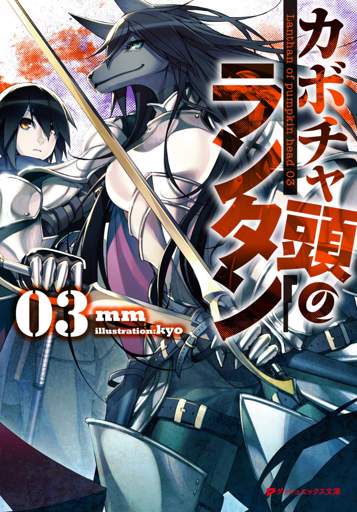

| カボチャ頭のランタン 03 | |
| mm | |

この本は縦書きでレイアウトされています。
また、ご覧になる機種により、表示の差が認められることがあります。

 ダッシュエックス文庫DIGITAL
ダッシュエックス文庫DIGITAL
カボチャ頭のランタン03
ｍｍ

数多くの迷宮があり、その数だけ探索はある。
けれど日帰りの探索などそうあるものではない。
氷精素霊との戦いを終えたランタンたちは海を凍らせたような色合いの迷宮核を回収すると、休息もそこそこに砂漠迷宮を引き返し、その日の内に地上へと帰還を果たした。
探索者として駆け出しのリリオンはさておき、三人の探索者たちはあっと言う間に終わってしまった探索に、何かやり残したことがあるのではと無用の心配を抱いているようだった。
それは三者三様に過酷な迷宮探索に挑み続けてきたことの証である。
しかし何はともあれ地上だ。
ランタンとリリオンは、今回の探索で初めて檻式と呼ばれる方法で迷宮へと送り出され、また戻ってきた。
過去、大罪を犯した者を迷宮送りにするために、罪人を檻に入れて迷宮へと放逐したことに由来する方法だが、現在では迷宮を行き来するための基本的な方法となっている。
過去には罪人を封じるための檻も、今では軽量化のために天井も四方を囲む柵も取り払われて、ただの鉄板と化している。
それでも吊り下げ式に比べると身体の負担は少ないし、地に足が付くので安心感がある。
迷宮口から姿を現した探索者たちの姿を確認して、起重機を操るミシャが表情を硬くした。
夜明け前に出発して、陽が沈みきる前に戻ってきた。太陽は特区を囲む周壁にこそ隠されているが、ミシャの感情を目にできるほどには明るい。
ランタンはリリオンの腕に縋りながら、駆け寄ってくるミシャをフードの下から見つめた。
「ランタンさん、大丈夫っすか!?」
探索者たちは一人も欠けることなく帰還を果たした。リリオンもジャックもルーも、装備が砂にまみれている程度で怪我らしい怪我はないように見える。
だがただ一人、ランタンだけは違った。
探索はいつだって過酷だ。だから疲労も怪我も同然のことで、特に単独探索者だったランタンは終端の魔物を討伐しに迷宮へと挑むと、いつだってボロボロになって帰ってくる。
痛々しい怪我を申し訳程度に隠し、隠しきれぬ疲労を精一杯に誤魔化して笑う。
ミシャは何度もその姿を見てきた。
しかし今日のランタンは仲間がいるからか、丁寧に包帯に包まれていた。
完全に傷が隠されているからこそ、ミシャは心配の分だけ酷い怪我を想像する。疲労は青白さとなって頰に現れている。触れずとも肌の冷たさが伝わるようだった。
ミシャはランタンに駆け寄ると跪いた。ランタンを檻に繫ぎとめる落下防止ロープに、それが繫がれた少年の細い腰に手を伸ばして心配そうな眼差しで見上げる。
フードの中にある顔さえも包帯に覆われていた。左目が完全に塞がれている。そして右腕を吊っていた。リリオンが支えるようにランタンに寄り添っていて、けれどジャックやルーはランタンなどお構いなしに装備に纏わり付く砂埃を払っている。
ランタンはミシャの視線を受け止めると、疲れた顔のまま唇だけで笑った。
「大丈夫だよ」
そしてさも平然そうにけろりと言い放った。
ランタンは本当に辛い時ほど、心配させまいと笑うことをミシャは知っていた。けれどランタンの口元に浮かぶ笑みは強がりでも何でもない笑みである。ミシャは氷のように冷えたロープから手を離した。その指先が悴んで赤い。
「......その、包帯は？」
「んー、ああこれ？ これはただ巻いてるだけ。心配してくれたんだ。へえ、思ったよりも効果があるな」
「......頰が青いですが」
「攻略したせいか、それとも時間経過のせいか知らないけど迷宮が夜になっちゃったんだよ。知ってる？ 夜の砂漠って寒いの。でもそれも都合よかったのかな」
「......」
「あれ、ミシャ？ ねえ、これ外してよ」
ミシャはロープを外さぬまま立ち上がると膝の汚れをさっと払い、ランタン以外のロープを手際よく外して回った。
檻に繫がれたままのランタンは眉を八の字にして立ち竦んでいる。
ミシャは仁王立ちでランタンの前に立ちはだかる。
ああまずい、とランタンは思う。
ミシャは腕を組んでいて、怒気に胸が膨らんでいた。ランタンは所在なさげに視線を彷徨わせ、結局ミシャの爪先を見つめることにした。
「よかった、って何？」
だがその一言だけでランタンは顎を摑まれたように顔を上げる。
ミシャは真っ直ぐに引き絞った薄い唇を、ゆっくりと重々しく開いた。
「いつもはすぐに予約を入れに来るランタンさんがなかなか顔を出さないから、ようやくゆっくり休んでいるんだって私は安心してたのに、急に早朝からの予約を入れて、その日の内に迎えに来いだなんて無理言って、それもギルド経由で。挙げ句によかったってなんなんですか。私を心配させてそんなに楽しい？」
「あの、えっと」
ミシャの言い分はもっともであり、全てである。
急に決まったこの探索を成功させるために、ミシャにはずいぶんと負担を掛ける結果になってしまった。他の手が空いている引き上げ屋に仕事を頼むこともできたのだが、ランタンは他の選択肢など思いつくこともなくミシャを指名してしまった。
当たり前だがミシャはランタンの専属引き上げ屋ではない。迷宮の数だけ引き上げ屋には仕事があり、腕の良いミシャを雇用主であるアーニェが遊ばせておくような真似はしないし、探索者たちも放っておかないだろう。
「怪我している振りなんてどうしてするの！ 私は本当に心配したんだからね！」
仕事用の敬語が抜けたミシャはじっとランタンの目を見つめた。
ランタンの焦茶色の瞳がしゅんとして反省の色を浮かべる。
忙しいミシャが今回の仕事を引き受けてくれたのは、引き上げ屋と密接にかかわる探索者ギルドを経由して仕事を頼んだからという理由だけではない。
ミシャはランタンだから引き受けてくれたのだ。
「あら、流石のランタンさまも引き上げ屋の前には形無しですわね。いいですか、リリオンさま。引き上げ屋の機嫌を損なうべからず。彼らは探索者の生殺与奪の全てを握っておりますからね。安心無事に探索者として過ごしたいのなら、そのことを忘れてはいけませんわ」
ルーがランタンを教材のように指し示しながら、リリオンに探索者としての心得を説いている。ランタンを気遣う振りをして、図らずもミシャを心配させる片棒を担いだリリオンは申し訳なさそうにしながらもどうすることもできず、ただ言葉を嚙み締めるばかりだった。
「ざまあないな。これも日ごろの行いの賜だろ。反省することだな」
ジャックは皮肉げにぽつりと呟き、ランタンは日頃どれほどミシャに心配を掛けていたかに思い至って素直に頭を下げた。
「ごめんなさい」
ミシャはふっと腰を屈めて、ランタンの腰へと腕を伸ばした。
ランタンの殊勝な態度にミシャは、まったくもう、と呟くのがやっとのようだった。これで覗き込んだ顔がほくそ笑んでいたのならば雷を落とすこともできるのだが、ランタンは小癪にも、ありがとう、としおらしく呟くものだからミシャはもう怒ることができない。
ミシャは外したロープを巻きながら一歩二歩と離れる。
そんなミシャを追うようにランタンは視線を動かした。
ランタンの姿は、大人しくしていると本当に探索者には見えない。
「......まったく、もう」
ミシャは毒気が抜かれたように繰り返し、結局は許してしまうのだった。
「でも、どうしてこんな変なことしてるの、......っすか？」
「それはちょっと言えない。ごめんね。でもミシャを心配させるつもりはなかったよ」
ランタンはそれだけははっきりと言った。言葉には素っ気なさにも似た冷淡さがある。姿は探索者には見えないが、こういった冷たさは探索者にはよくあることだった。
「......危険なことは、ほどほどにしといて下さいよ」
「探索よりも危険なことなんてそんなにないよ。ねえ？」
ランタンが同意を求めるとジャックは肩を竦めて、リリオンは危険なことに想像を巡らせているのだろうか小首を傾げた。そしてルーは意味深に微笑んで、頰に手を当てる。
「うふふ、男と女の関係は、時に探索よりも危険ですわよ。ランタンさま」
「――へえ、そうなんですか？」
ランタンはまったくもって純真無垢に聞き返し、それが演技なのかどうかの区別はつかない。ルーは頰に手を当てたまま、あらあらと面白がるように微笑んだ。
不特定多数の探索者と仕事をする傭兵探索者であるルーは、交友関係の狭いランタンには思いもよらないような危険なことをしたことがあるのかもしれない。
「ほらもう。リリオンちゃんがいるんだから、その辺でお終いっすよ」
ミシャが手を叩いて、更に続けようとしたルーの言葉を止めた。
リリオンは小首どころか身体までも傾けて、ルーの言葉の意味を探ろうとしている。
「おとことおんな......？」
呟きを耳にするのと同時にランタンは素早くリリオンの脇腹を擽った。
「きゃっ。もう、なにするのっ？」
「何にもしてないよ」
「うそ、うそよ。くすぐったわ！」
「気のせいじゃない？」
リリオンは飛び退いて驚き、すっかり何を考えていたのかを忘れ去った。ランタンの外套を引っ張ったり揺らしたりして抗議をするのに夢中になっている。
「リリオンちゃん、ランタンさんは怪我人なんだからそれぐらいにして。では、私はもう時間っすから。お代はギルドから頂戴しておりますので」
ミシャは四人分のロープと檻を一纏めに片付けると、起重機に乗り込んだ。
「無理聞いてもらって悪かったね。助かったよ、ありがとう」
「ミシャさん、ありがとう！」
リリオンはランタンの外套を右手に摑んだまま、ミシャへと大きく手を振った。ミシャが笑いながら片手を上げて応える。
「リリオンちゃんも気をつけてね。あんまりランタンさんの真似しちゃダメっすよ。それでは高いところから申し訳ないっすけど、探索お疲れさまでした。先に失礼させて頂きます。では、またご贔屓に」
「うん、またね」
ミシャはランタンに頷き返し、起重機は重厚な車体をゆっくりと翻して次の現場へと去って行った。
その背中にリリオンが背伸びまでして手を振り続け、その腕にはランタンとお揃いにするように包帯が巻かれている。本当はリリオンも怪我をした振りをする予定だったのだが、ミシャに叱られるランタンを見てやめたようだ。
「さて、僕らも行きましょうか――」
ランタンは呟き、包帯が巻かれたリリオンの腕を指で弾いた。
「――手筈通りに」
「ランタンさまは、本当に悪い子ですわね」
ランタンはミシャの姿がなくなったからか、性懲りもなく再びか弱い怪我人の姿を演じた。
ランタンの演技にルーがころころと笑い、ジャックが大きく溜め息を吐いた。
リリオンは思い出したように自らの左腕を見つめて、結局ランタンを支えるように寄り添うことにしたらしい。ぴったりとランタンの横にくっついて肩を抱く。
「僕だってしたくはないですよ」
ランタンは己の肩に掛けられた少女の指先を見つめ、その肩をがっくりと落とした。
弱った獲物を狙うのが、獣の習性である。
◇◇◇
ランタンはミシャを心配させるために怪我人を演じていたわけではない。
そもそも今回の迷宮探索は、迷宮の攻略を目的としたものではなくカルレロ・ファミリーの襲撃を誘い出すための手段に過ぎない。
万全を期して迷宮を攻略し、怪我の一つも負うことがなかったのにもかかわらず、これ見よがしに包帯を巻き付けているのは、どこからかこちらを尾行偵察しているはずのカルレロ・ファミリーを油断させるためである。
負傷を装うなど囮行動としては古典的な手段なのだが、使い古される程度には効果のある手段でもある。
ランタンたちは迷宮特区をのろのろと進む。
辺りには何台もの起重機や集団の探索者たちが行き交っている。帰還した探索者の中には包帯姿のランタンなど霞んでしまうほど酷い怪我を負った者もいた。
自力で歩くことができずに迷宮資源と一緒に荷車に載せられている。
「あれ、楽そうでいいな」
「怪我人に何を言ってるんだ」
「僕も怪我人ですけど」
ランタンは言いながらも自分の振るまいが悪趣味に思えてならなかった。
狙い通りにどこかの誰かを油断させると同時に、誰かに無用の心配をさせている。
ミシャがそうであったように。
「お前のはそういう体だろ」
ジャックがうんざりしたように、仲間に付き添われて運ばれる探索者を横目に見た。装備に使われる鉄とはまた違う、生々しい金属の臭いが強烈に香った。
おそらく助からないだろう。死の臭いに、嗅覚に優れたジャックが鼻を鳴らした。
「すぐ楽になれそうですけれどね」
それは皮肉でも何でもなく、紛れもない事実であり、珍しくもないことだった。
「ねえ、わたし、ランタンのことおんぶしてあげようか？」
「大丈夫だよ、そこまでしなくても」
リリオンが荷車の行く末に視線をやりながら言った。
本物の怪我人とランタンを重ねてしまったのだろう。リリオンはいっそうランタンの身体を抱き寄せる。足が絡みそうなほどに。
「歩きづらいよ」
「はん、怪我人なんだろ？ 我慢しろよ」
「ええ、なかなかの演技ですわ。――視線、いくつかありますわね」
「目立っちゃいるが、どうだろうな。お前を狙っている連中もいるんだろうが、流石にこれが全部ってことはないだろ。にしても、お前嫌われてるなあ」
ジャックが他人事のようにしみじみと呟いた。
好かれていないことは自覚しているし、敵が多いことも現在の立場上、再認識せざるを得ない。だがはっきりと他人の口から言われると、流石のランタンも少しだけ傷つく。
ランタンは何も言わず小さく唇を尖らせた。
「愛されておりますのよ」
ルーの慰めに、それもそれで嫌だな、とランタンは思う。
「でもこれほど熱烈ですと、宿に辿り着くまでに襲われてしまうかもしれませんわね」
「わたしが守るから平気よ！」
「あら、それは心強い」
リリオンはランタンの肩を撫でさすりながら、ぐるると幼犬のように唸って辺りを警戒した。けれど迷宮特区を抜けて上街に入れば、その警戒も無用だろう。
街中で大規模な襲撃はない。強請や恐喝などの小遣い稼ぎとは訳が違うのだ。武装集団が剣呑な気配を帯びたならば、騎士や衛士が黙ってはいない。
「けれど暗殺者でも雇われると面倒ですわよ」
「そっちの警戒はテスさんがしてくれているらしいので」
「姉ちゃんが」
「あらそうですか。......敵に回して一番厄介なのは、やはり探索者ギルドのようですわ」
ルーが顎に手を当てて、低い声で言う。
「厄介、ですか」
「ええ、おそらく暗殺者ギルドに手を回しているのでしょう」
「......暗殺者にもギルドがありますか」
「有名な話ですわよ。もっともどうやって接触するかは知りませんけれど、暗殺者は職人ですからね。組合ぐらいはありますわよ。――ああ、そう言えば彼らに接触する有名な方法が一つありますわね」
「どうやるんですか？」
怖々とリリオンが尋ねた。
「簡単ですわよ。モグリの仕事を行えばよろしいのです。そうすれば所場荒らしの制裁に、彼らは現れますわ」
怖がらせようとする気満々にルーは小さく囁いた。リリオンはぞぞっと震えて、辺りをきょろきょろと見渡しておっかなびっくり首を竦める。
「リリオンは暗殺してないでしょ、誰も」
「......あ！ そうね」
はっとして顔を上げ、リリオンはほっと胸を撫で下ろした。
「大丈夫かよ、お前ら」
「頼もしいじゃないですか、気負いがなくて。リリオンさま、その調子でランタンさまをよろしく頼みますわ。では、わたくしたちは行きましょうか」
「ああ、そうだな。尾行は二人組が二つ。一つは俺らがもらってく。情報は持って帰らせないと意味がないから喧嘩ふっかけるなよ」
「承知してます。ここまで来てそんなことはしないですよ」
「あと寄り道せずさっさと宿に行け。さすがに宿に火を付けるような真似はせんと思うが用心はしとけよ」
ジャックはランタンの鼻先に指を突きつけて睨むような目付きで言う。つっけんどんな物言いだが、ずいぶんと心配してくれているようだった。
「ええ。それでは、お世話かけました」
「まったくだよ。――しかし初対面の奴に迷宮核を預けるか？ あんたならどうするよ」
「......そのようなことを聞かないでくださいませ。傭兵探索者はそのように貴重で、高価で、持ち運びやすく、換金しやすい物を預けてもらえませんわよ」
上街の大きな辻の一つで二手に分かれる。
ランタンたちはギルドの用意した宿に向かい、ジャックたちは攻略報告のために探索者ギルドへと向かうことになっている。
これも戦力の分散、ジャックたちとの関係性の稀薄さを装うための行動である。
複数の探索班が合同で探索を行った場合には両者が余程に親密な関係性を築いていない限り、どちらか片方に迷宮資源を預けるなどということはしない。迷宮資源は命を賭して得た莫大な財産だからだ。持ち逃げでもされたら堪ったものではない。
だがジャックは実際に氷精素霊の迷宮核を所有しており、攻略報告もそれに付随する換金も実行することになっている。
「お二人とも信用してますから」
「あら、うれしい」
「それじゃあ作戦的にダメなんじゃないか？」
「......相手方もそこまで深く考えないでしょう」
「お前なあ......。あ、もしかして報告が面倒だから押しつけたんじゃないだろうな」
ランタンは素知らぬ顔で視線を逸らしリリオンの顔を見上げた。
リリオンは淡褐色の瞳を細めて無邪気に笑った。
「ランタン、攻略報告はめんどうだって言ってたものね」
「さてと行こうか。ではよろしくお願いしますね。ご一緒に攻略報告できないのが残念です。ああ残念だなあ」
ランタンはジャックの悪態を背に受けて、そそくさとその場を後にした。
きっと見張りの者たちからは仲違いしたように見えただろう。
◇◇◇
後を付けてくる者たちの気配をあえて探ろうとは思わなかった。ランタンはジャックたちほど器用ではない。それは人族と亜人族の種族的な差でもあるし、経験の差でもある。
気配を探ろうと思えば、きっと尾行者にそれを勘づかせてしまうだろう。
この尾行者は、以前後を付けてきた二人組とは実力が違う。前の二人組は探ろうとせずとも存在を察知できたが、この尾行者はどこにいるのかまったく判らなかった。殺意や敵意の無さも、察知できない理由の一つだ。
ジャックたちと別れてからほどなく、リリオンはランタンの肩を抱き寄せて外套の内側に招き入れた。そこには少女の体温と匂いが籠もっている。
二人の様子は身長差のせいでよく似合っていた。
そしてリリオンは周囲を警戒する。尾行者に向けられたものではなく、四方八方へと無作為に向けられた警戒心は人にまだ馴れない幼獣のそれだ。
ランタンには微笑ましく思えるが、警戒心に染まった淡褐色の瞳はそれなりの迫力がある。
宿泊予定の宿にランタンを引き込む様子などはやり手の女探索者に見えなくもない。
「流石に中までは入ってこないはず。もういいよ」
「ダメよ。念には念を入れないと」
ランタンが外套から出ようとするとリリオンは巧みにそれを許さなかった。
ランタンは恥ずかしさからフードを目深に被り直し、宿の廊下で宿泊客とすれ違わないことを祈りながら受付を済ませた。
宿はギルドが用意してくれたものだ。
ランタンが迷宮攻略後に宿泊して違和感のない高級宿なので、一泊になかなかの値段がする。探索者も多く宿泊しているが、その割に客層が良いのはやや女々しい造りをしているからだろう。淡い象牙色の壁をした廊下には花が生けてあった。
厳つい男の探索者が宿泊するには、普段使わない胆力を必要としそうだ。
リリオンが精緻な彫刻のある真白い扉を押し開くと、ランタンは少女から逃げ出すように部屋の中へと飛び込んだ。
右腕を吊る丁字帯を解き、頭部の包帯を外した。露わになった左目が光に慣れるまで一秒かかり、焦点を取り戻すのに更に一秒かかった。その間にリリオンの手が未練がましく伸びてきて、ランタンは素っ気なくそれを躱した。
「ああん、ランタン」
「もう念を入れることなんてないでしょ？ 誰も見ちゃいないんだから」
「だからこそよ！」
「もう、なにそれ？」
ランタンは呆れた様子だったがリリオンは真剣だった。手を伸ばしてランタンの外套をひっしと摑んで後を付いてくる。
「――仲睦まじくて結構だが、気を抜くのが少し早いな」
ランタンが備え付けの魔道光源に光を入れると、部屋に入って真正面にあるソファにテスが座っていた。背もたれに腕を回して振り返り、驚くランタンに笑いかけた。
「テスさん！」
「やあ、おかえり」
リリオンが声を上げて、ランタンの背中を抱きつくように押しながら慌しい足取りでテスに駆け寄る。
ランタンは別れ際に話した暗殺者のことを思い出していた。果たしてこのテス・マーカムは本物だろうか。暗殺者ならば変装ぐらいは容易に行うのではないだろうか、と。
けれどそんなランタンの危惧を余所に、リリオンは突然の出迎えに喜んでいる。ランタンを後ろから抱きしめて左右にゆらゆらと身体を揺らしていた。
リリオンを見るテスの視線が優しくて、ランタンは沸き上がった警戒心を緩める。
「ただいま戻りました。ええっと、まず、ちょっと着替えてもいいですか？ 砂塗れなので」
「ああ、構わないよ」
ランタンはその場で脱ぎ始めようとしたリリオンの尻を叩いて脱衣所へ向かった。
装備を外し、外套を脱いで叩くと細かな砂がぱらぱらと零れる。ランタンは自分の髪を乱暴に搔き回して、それから解いたリリオンの髪を優しく揺らして、櫛で梳かしてやった。髪に絡んでいる砂粒が、砂金を撒いたように足元に散らばった。
「髪の毛ぱさぱさだ」
「――こっちのお部屋は？ わあ、すごい！」
脱衣所の向こう側を覗いたリリオンが声を上げると、甘い声が反響した。
「それはまたのお楽しみ。ほらほらテスさん待たしてるんだから」
ランタンはリリオンの顔を濡らしたタオルで拭ってやると、再び尻を叩いた。リリオンは叩かれた勢いのままにぴゅっとテスの元へと駆けてゆく。
「テスさん！ 今日はどうしたんですか？」
「探索を終えたばかりなのに元気だね、怪我もなさそうで何よりだ。うちで用意した部屋に問題があったら面目が立たないから確認をね、しに来たんだ」
「お手数をお掛けして申し訳ないです」
「問題なし。でも、迷宮食は余ってるか？ 宿の食事は避けて自前のものを食べてくれ。あとカーテンは開けないように。窓側のベッドの使用も禁止。ノックも無視していい。それと、まあ、なんだ。――弟は、ジャックは迷惑を掛けなかったか？」
テスは言い淀んだかと思うと、何だか決まりが悪そうにそう言った。ランタンが思わず笑みを浮かべて向かい側に腰を下ろすと、テスは困ったように頰を搔いた。
「迷惑だなんて。ジャックさんにはずいぶんと助けて頂きました。ねえ、リリオン？」
「うん！」
「そうか。うん、それならいいんだ」
テスはほっとしたように何度も頷いた。
ジャックほどの実力ならばそうそう心配など要らないとは思うのだが、家族とはそういうものらしい。ランタンはぶつくさ文句を言っては仏頂面をしていたジャックを思い出した。あれもまた愛情表現の一つなのだろう。
ランタンが一人納得したように頷いていると、テスの隣に座っていたリリオンがランタンの隣に移動してきた。寄り添って、甘えるように腕を絡める。
「じゃあ二人揃ったところで明日の話をしようか。君たちが探索をしている間に下準備は充分に整った」
探索も下準備の一つだ。
ランタンとリリオンを付け狙うカルレロ・ファミリーを壊滅させるための。
「ファミリーの構成員全てに招集命令が出たのを確認した。それに金と薬物で集められるだけ戦力を集めているようだ、今この時も。店仕舞いが近いのを察しているのかね。なかなかの大盤振る舞いさ。是が非でも君を仕留めたいようだ」
「薬中どもの寄せ集めなんて敵じゃないですよ」
「もっともだな。まあ時間稼ぎの捨て駒だろうね」
ルーからもたらされた情報の中に興味深いものがあった。
ファミリーに薬物を卸す組織との取引はエイン・バラクロフが行う。それは月の決まった日であり、決まった時間であり、決まった場所で行われる。
明日の正午。場所は下街の廃倉庫街。
そこがカルレロ・ファミリーが根城にしている彼らの本拠地である。
ルーの記憶は曖昧であったし、消去、改竄された情報は魔道によって精査されたが完璧とは言えない。だが有益な情報であり、ランタンたちはその情報に則って作戦を組み立てた。
小胆でありながら自尊心が強いバラクロフの性格上、弱ったランタンを狙わずにはいられない。だが取引自体も中止することはできない。そして逃げ出すこともできない。
明日を狙い撃ちにしたのはバラクロフの居場所を確定させるためであり、また彼らの取引相手も可能ならば捕らえるためである。襲撃を誘うのは、本拠地待機組と襲撃組の二つに戦力を分散させるためである。
「でも薬中なら上街も下街も関係なく襲ってきますかね？」
思考能力の低下した薬物中毒者など恐るるに足らないが、しかし彼らはそれゆえに無茶なことを平気でする。
「いや、それはないと思う。大勢の中毒者がぞろぞろと街中に入ろうとしても衛士隊が許さないだろうし、よしんば入れたとしても殺しはさておき、人攫いはなかなか難しいからね。流石に目立ち過ぎるし――」
テスはリリオンを安心させるように微笑んだ。
ランタンの小軀ならば容易く袋詰めにできそうだが、リリオンの長身となるとそうもいかない。長い手足は折りたたんだってそれなりの大きさだ。
「――そんなことを許しはしないだろう？」
「ええ、勿論」
「うん、雑魚の相手では準備運動にもならないだろうが、奴らの本拠地ではそれなりの手練れが相手だ」
「蠍人族と蜥蜴人族の探索者でしたよね。襲撃には参加してこない――ですよね」
「ない。バラクロフの護衛のようなものだからね。魔精薬で存分に強化してあるらしい」
「平気です！ わたしも頑張ります！」
うんざりと吐き捨てたテスだが、リリオンがやる気に満ちた声を上げると呵々と笑った。
「くふふ、雑魚を斬ってもつまらんからな。ある程度、手応えがあった方がいいか。しかし、どうにもカルレロの姿だけが確認できないんだ。もしカルレロが不在だったらどちらか一人を譲っておくれ」
「一人と言わず二人ともお譲りしますよ」
うずうずとした剣気を発するテスにランタンが肩を竦めながら呟いた。
「おや、二人だけか？」
「バラクロフは僕がぶちのめしますので。横取りしないで下さい」
テスは目を丸くしたかと思うと、さも楽しそうに大笑いした。眦の涙を拭い立ち上がる。
「ああ、可笑しい。さて笑い疲れないうちに私はもう帰ろうかね」
立ち上がって見送ろうとした二人の頭をテスは撫でる。
「宿の周囲に部下を放っているから、安心してお休み。放火の心配とかは要らないからね」
「それ、ジャックさんも言ってましたよ」
「くふふ。なんたって仲良し姉弟だからな。もっともこの宿に限って言えば火事の心配はいらないだろうけど」
テスがそう太鼓判を押す宿は、その名を水面の満月亭と言う。
ランタンはなるほどと頷いた。
「ではまた明日」
背を向けたままテスは優雅な仕草で手を振った。
リリオンはソファの上に膝立ちになり、頼もしい背中にうっとりと溜め息を漏らした。
◇◇◇
水面の満月亭の最上階を丸ごと占める一室には泳げるほど大きな風呂場がある。
浴槽は巨大な一個の大理石をくり抜いて造った逸品で、湯は天然の水精結晶と火精結晶を惜しげもなく使用した掛け流し。
そして宿泊客が何よりも楽しみにするのは硝子張りの天井から望む夜空であり、水面に反射する星々である。星を映した湯に浸かる贅沢は、噂に寄れば夜空を自由に飛び回るほどの夢心地であるとかないとか。
満月の日の予約は向こう十年埋まっているらしい。
ランタンとリリオンはそれなりの大きさの風呂に二人揃って肩まで浸かりながら、向かい合う二人の間に落ちる魔道光源の光を見つめた。
それは月に見立てられたものなのか、青白く丸い。
贅をこらした最上階以外の浴室はこんなものだ。比べてしまえば侘しいが、決して悪いものではない。
「風情があるのか、ないのか......」
ランタンは水面の偽月を掬うように、両手に湯を溜めて顔を洗った。
風情があろうとなかろうと風呂はやはり気持ち良い。
砂漠迷宮の砂汚れを洗い流し、芯にこびりついた氷精素霊の冷気を溶かし、そしてテスが帰ってからも薄皮のように張り付いたままの警戒心が剝がれていくようだった。
ランタンが湯船の縁に首を預けて熱っぽい溜め息を吐き出すと、大人しくしていたリリオンがそろそろと近付いてきた。水面に反射するランタンの顔を両手に掬って、じゃぶじゃぶと顔を洗った。
「ランタン」
「ん？」
「......どこか調子悪いの？」
リリオンは心配そうに尋ねた。その言葉にランタンは首を捻る。
ランタンは探索者だ。それもそれなりに有能な。だから自分の身体のことは良く理解しているつもりだった。
探索中の自己の体調管理は一歩間違えれば死を招く。
探索を続けるべきか否かの判断は勿論のこと、戦闘中にどの程度の怪我までならば負っても大丈夫か、怪我やそれに伴う出血により、どの程度戦闘能力が低下するか。あるいは死ぬことはないか、とランタンは自分の身体といつも向き合ってきた。
体調は万全に近い。怪我らしい怪我はなく、温かな湯に解されて疲労の回復も順調である。
強いて言えば、左手の指先の霜焼けと思われる痒みが少し気になるぐらいだろうか。
「そんなことはないと思うけど、調子悪そうに見える？」
リリオンは頷いた。確信があるようにはっきりと。
「どこが？」
「だってランタン、お風呂好きなのに――」
リリオンは身を乗り出すように顔を近付ける。四つん這いに近寄ってきて、投げ出されたランタンの太股をむんずと鷲摑みにした。
細い指先が内股に食い込んでランタンは眉を顰めた。
太股にかかる体重の軽さは水の浮力をさっ引いてもずいぶんと軽い。体重を掛け過ぎないようにと遠慮をされているのだ。
「くすぐったいよ」
「――笑ってないわ」
「......これでどう？」
「だめ」
ランタンは指で口角を吊り上げたが、リリオンは一言言って頰を膨らませた。
「ああそう」
自らの頰を弾くように指を外し、ランタンは顎まで湯に沈んだ。
その様をリリオンがじっと見つめる。
観察されているランタンは淡褐色の瞳に自分の表情を映し、それが確かに少女を心配させるような仏頂面であることにようやく気が付いた。そしてやっと笑った。右の口角だけが皮肉げに吊り上がった。
「痛いよ」
リリオンがランタンの太股に爪を立てた。そして素っ気ないランタンの興味を惹こうとするように、何度も揺すった。股関節の近くに引っ掛けられた人差し指が恥ずかしい。
ランタンはリリオンの手を取って自らの方へと引き寄せる。
リリオンはそのまま抱きしめてほしそうにしたが、ランタンは一瞬の逡巡の末に自らの隣へと導く。下街のあの浴室の小さな湯船ならば、少女の裸身を胸に抱きしめただろうか。
リリオンはランタンの手を取って指を絡めた。
「わたし、何かした？ わたし、何か失敗した......？」
リリオンは口元まで手を引き寄せて、もう片方の手を縋るように添えた。
言葉が僅かに震えていた。
芯まで温められた指が悴むように強張っている。
「違うよ」
ランタンは強い口調でリリオンに告げた。
外気に触れて湯気の立つ手を再び沈めて、手を離した。
ランタンは立ち上がった。身体は濡れた黄金のように艶やかで、軽やかな足取りで湯船の縁を跨いで湯から上がった。濡れた髪を搔き上げて、立ち上がる湯気を払うように鎖骨に溜まった水滴を払った。
「探索は完璧だった。ほら、怪我の一つもない。僕も、リリオンも」
ランタンが見上げるリリオンの顔を指差すと、リリオンは慌てて立ち上がった。ランタンの身体が黄金ならば、リリオンの身体は白金だった。色素の薄い身体に整脈の緑が絡みつくように浮いている。
リリオンは言葉もなく何度も頷く。そして怪我のない身体をランタンに見せつけるように両腕を広げた。
二人とも迷宮攻略当日とは思えないほど綺麗な身体だった。
失敗など何もなかった。
もう幾度も見た少女の裸体であるがランタンは咄嗟に背を向ける。
そのまま浴室を後にすると、リリオンが慌てて追いかけてきた。ランタンは振り返ったかと思うと大きなバスタオルで少女の身体を抱きしめ包んでやった。
乾いたタオルがみるみると水分を吸って少女の身体に張り付いた。
おうとつのなだらかな身体の、柔らかな輪郭がはっきりと浮き出る。
「濡れたままだと風邪引くからね。ほら、あとは自分でやって」
「うん」
二人揃っていそいそと身体を拭くが、リリオンは身長と髪の長さの分だけ手間取っている。ランタンは下着を身に付けるとリリオンの背中と髪を拭いてやった。
「ありがとう、ランタン」
「ああ、うん。ねえ、――僕さあ、本当に調子悪そうに見えた？」
「......うん」
「本当に？ よし、まあこんなもんだろ」
もし調子が悪そうに見えたのならば、その原因が自分にあるとは思わないだろう。
ランタンはリリオンの髪をタオルで包み、裸の肩に寝衣を掛けた。リリオンは寝衣の前を合わせながら、そろりとランタンを振り返った。そしておずおずと口を開いた。
「本当はね、不機嫌そうに見えた」
「そっか、......不機嫌か」
ランタンはばつが悪そうに顔を顰めて、まだ乾ききらない頭を搔いた。
不機嫌そうか、とランタンは再び口の中で転がしながら、なぜそう見えたのか考えた。
湿気の籠もる脱衣所から出て、ランタンはリリオンの手を引いてベッドに座らせた。
「別に不機嫌ではないんだけど、どうしようね」
リリオンは、自分こそが不機嫌の理由なのだと感じてしまったようだった。そんなことはない、と伝えるようにランタンは困った笑顔を向けた。
「そうなの？」
水筒から二つのコップに水を注いで、その内の一つをリリオンに渡した。ランタンは唇を湿らせながら少女の隣に腰を下ろす。しっかりと温まった身体に冷たい水が心地良い。
「そうだよ。さっきも言ったけど探索は完璧だった。ほら、リリオンの初めての探索の後はすぐにお風呂には入れなかったでしょ？ あの時は怪我したから」
何気なく言った言葉にリリオンの表情が硬くなった。両手に支えたコップの中味を覗き込むように項垂れた。
「わたしが弱かったから。ランタンが怪我した」
独り言のように呟く。
「今回はジャックさんと、ルーさんがいたから」
リリオンは喉から迸りそうになる叫びを呑み込むように、一息に水を飲み込んだ。ぎゅっと目を瞑って天井を仰ぎ、血管の這う首筋が大きく上下した。
リリオンは自分に自信が持てない。
よく笑う天真爛漫な少女には、けれど深い傷が刻まれている。
今回の探索の成功はルーやジャック、そしてランタンのおかげであり、以前の探索でランタンが怪我をしたのは自分の力が足らなかったからだと思い込んでいる。
「半分正解だけど、半分は不正解。もう百万回ぐらい言ったと思うけど、僕が怪我をするのはいつものことなんだって」
「百万回も聞いてないよ」
「......たくさん言ったってことだよ。右から左に抜けていくのかと思ったけど、ちゃんと聞いてるね。それで今回、僕が怪我しなかったのは確かにジャックさんとルーさんの力は大きいけど、リリオンだって僕のこと守ってくれたでしょう？」
リリオンの大楯に抱かれなければランタンは氷精素霊をあれほどつぶさに観察することはできなかっただろうし、もしリリオンがいなければ戦闘をこなしながら勝機を見つけなければならなかった。
ランタンにとってそれはつまり負傷を覚悟することに等しい。ランタンは痛みと引き替えに敵を知るのだ。
「それに前回と今回の探索の最大の差は終端の魔物だよ。前の熊に比べて、今日の氷の怪物はどうだった？」
「熊と......」
リリオンは片手を頰に当て、上目遣いに嵐熊を思い出そうとした。そして魔道光源の光に目を細めたかと思うと、ぶるっと身体を震わせた。
「弱かった、のかしら？」
リリオンは一瞬言葉に迷い、ランタンの顔色を窺いながら答えた。
ランタンが頷くと、あからさまにほっと胸を撫で下ろした。
氷精素霊の純粋な戦闘能力は、おそらく嵐熊よりも格下である。物理攻撃の無効化や、最下層の気候を支配する影響力、氷弾による大規模な範囲攻撃などは確かに厄介な能力ではあるのだが、それでも嵐熊には届かないだろう。
「熊よりも怖くなかった、でもいいんだよ？」
戦いにおいて大事な要素に相性がある。
氷精素霊の物理攻撃耐性は優れたものだが、ランタンの爆発能力を耐えるには少しばかり足らなかった。氷を溶かす熱と、衝撃力を兼ね備えた爆発は氷精素霊にとっては天敵に近しいものだろう。難を言えば熱の持続時間が瞬間的なことぐらいだろうか。
「わたし、怖くなかったって百万回くらい言ったわ！」
「百万回も聞いてない――ってまあいいか。そんなこんなで、今回怪我しなかったのはそこも大きいよ。あの二人がいなくても、リリオンの大楯は氷精素霊の攻撃を通さなかったし。今日よりも多少無理をすれば、僕一人でも物理耐性を上回れただろうし」
「そっかあ、ランタンはすごいね」
「どうしてそこに......まあ、あんまり長引くのは勘弁だけど。寒いから」
「ランタンは、寒いの嫌い？」
「ほどほどならいいけどね。今回みたいにびゅーびゅー冷たい風が吹くのは嫌だな。リリオンは平気そうだったね」
「あれくらいなら我慢できるよ。んふふ、わたしが温めてあげようか」
リリオンはそう言ってぱっと立ち上がるとランタンの手からもコップを奪い、それをサイドテーブルに置いた。
「風呂入ったばかりで温めるも何も」
ランタンの言葉を遮るように、リリオンはランタンの小軀をベッドに押し倒そうとした。
ランタンは背筋と腹筋に力を込める。背骨が一本の鉄骨のように硬くなり、ランタンは微動だにしなかった。
リリオンの頰がランタンの胸板で潰れ、少女はそのまま顔を擦りつけるようにずり下がった。細い腰に手を回し、ランタンの固められた腹筋に顔を押しつける。髪を纏めていたタオルが外れ、ほんのり湿ったままの髪は象牙の色合いを帯びて柔らかい。
リリオンは裾から手を入れて、ランタンの背中を撫でた。
「すべすべしてる」
「それは温めるとは言わないと思う」
「おへそ、いい匂いがする」
「やめろ」
ランタンは言いながらリリオンの脇腹をがっしりと摑んだ。リリオンは悲鳴を上げて飛び退こうとしたが、ランタンはそれを許さなかった。
「やっ、あはは、やあだぁ。もうっ」
「温めてくれるんでしょう？」
いい反応だな、とランタンは仰向けになったリリオンに馬乗りになる。肉の薄い脇腹を擽ってやるとリリオンはきゃっきゃと笑いながら身を捩った。柔らかな肋骨の軋みや、しなやかな筋肉の震えが指先から伝わってくる。
「もう少し肉を付けなきゃね」
これ以上やると呼吸困難になりそうだった。
寝衣がはだけてしまって赤く火照った胸元が露わだった。荒い呼吸に、悶えるように膨らんだり萎んだりしている。ランタンは視線を逸らしながら、それを隠した。
「はぁっ、ふぅ、ふぅ、もうっ、ランタンいじわる。やめてって言ったのに」
リリオンは荒くなった息を落ち着かせて、薄紅の頰を膨らませて唇を尖らせる。
「でも温かくなったでしょ？」
「わたしが、ランタンを温めてあげたかったの」
不満そうに言ったリリオンはしかし熱っぽい己の身体に気が付き、寝転んだまま両腕を広げた。まるでこれで許してあげるとでも言うような、ませた視線を向けてくる。
抗いがたい誘惑だった。瘦せた少女の身体は、けれどとても柔らかく、温かいのだ。
だがランタンはその慎ましやかな胸に身体を預けるのを堪え、その隣に身体を横たえる。
仰向けだったリリオンはランタンの方へと身体を転がした。瞳には不満を湛えていたが、しかし恥ずかしげなランタンに気が付くと、一転して瞳は悪戯な熱を帯びた。
そして問答無用にランタンを抱き寄せた。まるで甘え下手の子供をあやすように。
風呂で探索の汚れや汗を洗い流した。ならばこれは肉体そのものの匂いなのだろうか。
「ランタンは、寒いから不機嫌だったの？」
「そう言えばそんな話だったね」
リリオンはランタンの身体を撫でながら、そっと尋ねた。
ランタンは白々しく呟いて、諦めに似た溜め息を零した。よく見てるな、と胸の中から少女の顔を見上げる。
「それもあるけど。ちょっとね、不完全燃焼だったんだよ」
リリオンはきょとんと瞬きをした。
「今回の探索、――戦闘は楽だったからね」
それは喜ぶべきはずのものだ。無傷で探索を終えるという作戦目標は完遂できた。そのこと自体にケチを付けるところはない。
だがランタンは不満だったのだろう。リリオンに不機嫌だと指摘されるまで、ランタンはそれを探索が早く終わった事への戸惑いだと誤認していたが、それは戸惑いではなく欲求不満の表れだったのだ。
「慣れというか、これは癖なんだろうね」
「へき？」
自分自身にそのような性質が備わっているとは思ってはいなかった。
それは元々有していた性質なのか、それともこの過酷な世界の中にあって後天的に得た性質なのか。理性と本能がまるで別の方向を向いているような燻りが、不機嫌そうな雰囲気となって発散されていたのだろう。
「物足りなかったんだ」
痛みを伴わない戦闘。怪我のない身体。あっという間に終わった探索。有り余った体力。
眼差しを伏せて呟いたランタンに、リリオンは困惑したように固まり、包容の力を強めた。まるでランタンがふらりとどこかに行ってしまうのを引き止めるように。
伏せた眼差しの中に鬼火のような光があり、リリオンは目を逸らせなくなった。
「まさか自分がそんな人間だとは思ってもみなかった」
「あの......、ランタン？」
リリオンが遠慮がちに名前を呼んだ。ランタンは燃える瞳のまま眼差しを持ち上げた。
「――ランタン」
「僕はね、きっと」
瞳の赤にある壮絶さとは裏腹に、ランタンは穏やかな声音で呟いた。
「戦い足らなかったんだ」
自分が戦いを望むような人間だとは思ってもみなかった。
この世界を生き抜くために仕方なく戦っているのだと、自分自身では思っていた。
とんだ勘違いだ。探索者にあるまじき自己認識にランタンは肩を竦め、笑った。
だが明日の戦いに遠慮は要らない。
仕方なくなんかじゃなく、自分のために、そしてリリオンのために戦う。
笑みは、己を知らぬことへの自嘲ではない。
喜び、恥じらうような微笑みの、その瞳の中で荒れ狂う業火をリリオンは確かに見た。

やはり風呂は良い。
ランタンは前夜に入浴したのにもかかわらず、今朝もまた風呂を堪能してしまった。一人で気ままに入浴するため、リリオンを起こさぬように早起きまでした。
たっぷりの汗を流し、身体を温め、心身ともに綺麗さっぱりと言いたいところなのだが昨晩に自覚した欲求不満が汗とともに流れ出すことはなかった。
欲求不満は、今や懊悩とでも呼ぶべきものへと変質していた。
戦いへの欲求は、純然たる暴力への渇望か。それとも死に惹かれているのか。それともただ身体を動かし足らなかった、というだけのことなのか。
風呂の中で考え続けたが答えは出ない。
答えは出ずとも、風呂は気持ちを落ち着かせてくれる。何にしろこのような悩みは身体を動かせばいくらかでも昇華される、と風呂の中で結論づけた自分が妙におかしい。
「......わたしも一緒に入りたかったな」
「昨日入ったでしょ」
「いつでもいっしょにお風呂したいの」
「髪乾かすのが大変だから、今日はちょっとね」
言いくるめるのも面倒なので適当なことを言うランタンに、髪を梳かされているリリオンは頭を固定されて振りかえることもできず、ただほんのちょっと顎を持ち上げた。
そのままくるりとひっくり返って、ランタンを見上げようとするように。
「......ランタンは長い髪は嫌？」
「嫌いじゃないよ。自分が伸ばそうとは思わないけど。ほら、顎引け。前向いて」
ランタンが旋毛を指で押すとリリオンは素直に顎を引いた。
少し湿ったまま眠ってしまったので、リリオンの髪は少し収まりが悪い。砂漠迷宮と極寒の最下層で水分を奪われた影響もあるのだろう。
ランタンは丁寧にリリオンの髪をまっすぐに伸ばしていった。
出会った時、足元にまで届くほど長かったリリオンの髪は身体ごと動かさなければ梳ることができなかった。それは嵐熊に切られてしまって腰元ほどの長さに収まった今も変わらない。頭頂から毛先まで引っ掛かることなく櫛が通るとランタンは満足気に額を拭った。
ベッドの上に櫛を放り出し、代わりに白銀の髪を一房手に取る。
さてどうしたものか、とランタンは一つ考え込んだ。
リリオンの髪を纏める。
いつも三つ編みにしたり、簡単に一つ結びにしたりする。それはランタンの手によるものだった。長く背中に垂らして歩く度に先端が跳ねるそれは快活な印象が愛らしく、だが一度駆ければそれは棚引き、龍の尾のようで優美だった。
ランタンはそれを見るのが嫌いではない。
しかしその反面、戦闘時に血で汚したり、攻撃に巻き込まれたりする心配がある。
事実、嵐熊の風刃によりリリオンの髪は切断されてしまった。
あの最下層でリリオンはその断面を誇らしく掲げたが、女の命を切り取られたことが辛くないわけがない。
これからカルレロ・ファミリーの襲撃を誘う。それが失敗に終わる可能性もない訳ではないが、襲撃があるのならばほぼ確実に乱戦になる。
魔物相手の戦闘ならば余程のことがない限り汚れたり、切られたりすることだけに注意を払えばよいが、こと対人戦闘となると髪を摑まれることもある。それは想像するよりも状況を悪化させる要因となる。
髪を鷲摑みにして探索者の腕力で引っ張れば頭皮ごと髪が毟り取られるぐらいならば運がよく、最悪の場合は頸部を損傷する。脱臼や骨折ばかりではなく、胴体から頭部が失われることも。
「よし、決めた」
幸い、宿を引き払うまでに時間はたっぷりとあった。
ランタンはリリオンの前に回り込むと側頭からの髪を指に絡めた。まるで編み棒に毛糸を絡ませるように。
そんなランタンにリリオンは嬉しげに唇を嚙んで、上目遣いになって視線を寄越した。どんな風にするの、と視線で尋ねはしても口には出さない。
ランタンは指に絡めた銀の髪を丁寧に編み込んでいく。
「痛くない？」
「うん、だいじょうぶよ」
ランタンが尋ねるとリリオンははにかんで答えた。
編み込みが崩れないように少しきつめに編んでいたが、そのことよりもリリオンは自らの髪がランタンの手によって形作られていくことが嬉しいようだった。
ランタンは前髪をある程度、編み終えると一歩後退してリリオンをまじまじと見つめ、満足気に頷いたかと思うと今度は背後へと回った。
「ランタン？」
「うん」
「ねえ、ランタン？」
「うん」
リリオンの問い掛けにランタンはまったく上の空に返事をして、いそいそと髪を編み続ける。やはり時折、距離を取って髪の形を確かめたり、リリオンの顎や頭を手にとって角度を変えたりもした。
リリオンはされるがままで、そんなランタンの様子に大人ぶった笑みを浮かべた。
ランタンはリリオンの笑みに気付きもせずに黙々と髪を編む。
細かい作業がランタンは嫌いではなかったし、リリオンの世話を焼くのも好んでいた。
戦闘時に髪が顔にかからぬように側頭からカチューシャ風に編み込みを施し、それでもまだ長い余った髪をこめかみの辺りで更に複雑に編み込んでシニョンにしていく。
出来上がったシニョンは花弁を幾重にも重ねた花飾りのようだった。崩れぬようにしっかりと纏めて、ランタンは満足気な溜め息を漏らした。
リリオンの頭を撫でて、作業の終わりを伝えた。
「もう、動いていい？」
「いいよ」
「鏡見てくるね！」
「どうぞ」
リリオンは叫ぶように言ってベッドから立ち上がり、備え付けの鏡面に向かった。ランタンはリリオンと入れ替わりに腰を下ろして、ぱきぽきと指を鳴らした。長い髪をきっちりと纏めると、リリオンの背中にほんの僅か中性的な魅力が宿る。
それは瘦せながらも確実に、肉体が探索者の硬質さを帯びつつあるからだろうか。
けれどそれも鏡面の前で真っ直ぐ伸ばした背を、折り曲げたり捻ったりするまでのことだった。後頭部の纏め具合を確かめたいのか四苦八苦していて、しなやかに身体を捩ると脇腹から腰、そして尻から足へと流れる線が驚くほど柔らかそうに思える。
鏡に向かって笑う様子は、どれほど探索者として成長しようと、背が高かろうとリリオンが少女であることを確信させる。
嬉しさと恥ずかしさの入り混ざったはにかみのまま、可愛らしくも複雑なカチューシャ風の編み込みに指を這わせて、そっとシニヨンを掌に包む。
喜んでもらえたようで何よりだ。
じっくりと髪型を堪能したリリオンが子犬のように戻ってきた。
ランタンの目の前に立ち止まると、踵でくるりと回ってみせた。ドレスでも着せたらば、どこかの貴族令嬢に見えるかもしれない。
「どうかしら？」
「掠いたくなっちゃうね」
ランタンは冗談めかしてそう言った。それは本心でもあったが、リリオンはもっと直接的に褒めてもらいたかったようで少しばかり不満気に、それでも口角を緩めた。だがそれがはっきりと笑みを形作ることはない。
リリオンは浅く開いた唇から舌を覗かせて、唇を少し濡らした。
「......ランタン」
リリオンが落ちつかなげに指をこねて、囁くように名を呼んだ。
そして、ごめんなさい、と頭を下げた。纏めた髪は重力に負けることなく、きちんと纏まったままになっている。
ランタンは一瞬戸惑って、それから静かに尋ねた。
「何の、ごめんなさい？」
ランタンは座ったまま、目の前にまで下げられたリリオンの頭部に触れて、おでこを撫でるように顔を上げさせた。ランタンの目は厳しさを湛え、リリオンの顔を見上げる。
リリオンの淡褐色の瞳は感情に移ろうように色を変えた。時に金色にも見える瞳が、今は暗緑色に沈んでいる。
「...わたしが、狙われているから、それで、ランタンに迷惑を掛けて――」
碌でもない理由だと思っていたが、やはり碌でもなかった。けれどこういった無垢さがあるからこそ、ランタンはリリオンを好ましく思うのだろう。
ランタンは手を振ってリリオンの話を遮ると、蹴り飛ばすように靴を脱いでベッドの上で仁王立ちとなった。
そうやってリリオンと目を合わせる。反射的に視線を逸らそうとしたリリオンの頰をぱちんと両手で挟み込んで、視線を逸らすことを許さなかった。
頭突きするように額をくっつけて、暗緑色の瞳の中に飛び込むように。
「それってリリオンに何か非があることなの？」
リリオンは黙っている。ランタンは構わず伝えた。
「違うでしょ？ 悪いのはカルレロ・ファミリーとかいう阿呆どもだよ。そんな奴らのためにリリオンが頭を下げる必要なんてない。それに狙われてるのはリリオンだけじゃなくて僕もだよ。僕らは一蓮托生――」
ランタンはリリオンの頰から手を離した。思わず言った言葉の照れ隠しに苦笑して、肩を竦めた。
「――っていうのは流石に大げさか。でも、もしどうしても謝りたいんなら、寝返りで僕を蹴っ飛ばしたこととか。涎垂らして枕汚したこととか、ぐうぐういびきかいたこととかを謝ってほしいね」
「いびきなんてしてないわ！」
「でも蹴ったでしょ？」
「......蹴ったの？ わたし」
「膝が鳩尾にめり込んだよ。晩ご飯出るかと思った」
「よだれ......」
「出てたよ。夢で何を食べてたのかしらないけど、冷たかったな」
「......ごめんなさい」
「よろしい。じゃあ靴拾って、飛んでっちゃったし」
偉そうに許しを与えたランタンはベッドに尻餅をつくように腰を下ろした。
リリオンはとことこと小走りにランタンの戦闘靴を拾って、いそいそと足元に揃えた。ランタンはズボンの裾を丁寧に仕舞い込みながら足を通し、爪先で床を二度叩いた。
腰に戦鎚を結び、外套を羽織る。
「あ、ランタン包帯！」
「あー、忘れてた。面倒くさいなあ」
「わたしがしてあげるわ」
偽装のための包帯をリリオンに巻いてもらうが、いざという時に外すのが面倒なので腕は吊らない。包帯で隠したのは右目か左目かどちらだっただろうか、と二人揃って頭を捻る。たしか左目だったはずだ。
「さて、行くか」
「うん」
忘れ物がないか確認をして宿を出た。
降り注ぐ陽射しがのどかで、二人揃って天を仰いだ。
それとなく周囲に気を配る。
不審な人影も気配も見当たらない。ランタンは陽射しを遮るようにフードを被った。
さて拐かされようじゃないか、とフードの影で冷たく笑った。
通りで少しだけ買い食いをしながらぶらぶらと散策をして、テスから教えてもらった魔道薬品店で買い物をした。
金貨と魔道薬の交換。ものによるが魔道薬はグラムあたり黄金よりも高価である。買い物は所持重量を減らす意味合いもあったし、戦いへの備えでもあった。
リリオンはきょろきょろと店内を見回している。
乾燥した植物、動物、魔物と液漬けにされたそれら。色取り取りの鉱石。火に掛けられたフラスコや、機械仕掛けの石臼の奏でる音が絶えず耳に聞こえていた。
墨のような独特の臭気がする。
ランタンは司書を思わせる、けれどそれよりももっと野暮ったい真っ黒なローブで全身をぐるぐる巻きにした店主に毒物への耐性を向上させる薬を頼んだ。
カルレロ・ファミリーの扱う薬物の大半は陶酔感や多幸感、あるいは催淫効果を有する麻薬であったが、それ以外の毒劇物の売買も確認されている。生き物を捕らえるのに毒物ほど有効な手段はそうない。
生け捕りにするにしても、死体を持ち帰るにしても。
迷宮で鍛えられる身体機能の向上は毒物への耐性にも及び、ランタンのそれはなかなかのものだが過信はできない。
リリオンに至っては、どれ程まで耐えられるかまるで見当がつかない。
巨人族の血はそれだけでランタンの耐性を上回る可能性もあったが、それこそ過信するわけにはいかなかった。
なのでランタンは大枚を叩いて、かなり高品質の耐毒薬を購入した。
魔道薬には腐敗しない物も存在したが、完成から数時間、あるいは数十秒で効果を失ってしまうものもあった。持ち歩くことはできないが、けれどそれを補ってあまりある効果が期待できる。
しばらくすると薬が満たされた銀の杯が二人に手渡された。液剤は青と緑の蛍光色が絶えず沈殿し、また浮上する、可能ならばこのまま床にぶちまけたい色合いをしていた。
けれどこれは金貨の山である。溢せば拾い集めることができず、三十秒以内に服用しなければ何の効力もない色水へと変質してしまう。
ランタンとリリオンは互いに目配せをして、一気に杯を空にした。
「あ、美味しい......にがい！」
温く、喉越しが滑っているが、口当たりは気体を飲み込んだように軽い。飲みやすくするためか柑橘系の香り付けがされていて、一瞬美味いと錯覚させられるが後味は激烈に苦いような辛いような、味覚を麻痺させる味である。
効果は服用してから二十四時間から四十八時間、服用者の免疫機能を向上させる効果がある。これからの戦いはそう長引くものではない。充分な持続時間だった。
「ごちそうさまです」
ランタンは店主に杯を返却した。リリオンは隣で水筒から水をがぶ飲みしていて、ランタンの視線に気付くと水筒を渡してくれた。店主の前で気が引けたが、ランタンはこびりつく後味を流し去るように清涼な水を呷った。
「いい時間だね」
適当な散策と、物珍しげに薬品を眺めるリリオンと店内を冷やかしていたせいもあって昼を過ぎようとしていた。
それはテスとの約束の時間が迫っていることを意味する。
薬品店を後にすると、時間を調整するように道を選びながら上街と下街を分かつ門までやって来た。リリオンがどこからかこちらを見ているはずのテスを探そうとしたので、尻を叩いて行動を諫める。
本当に見守ってくれているのか不安になるほど完璧な隠行であるが、ランタンは足を止めずに門を潜り抜けた。
◇◇◇
「テスさん、どこにいるんだろうね？」
「どっかにいるでしょ。影も形もないけど」
「ねえ、後ろ見てもいい？」
適当に雑談をしながら下街の廃墟を歩く。返事を聞くより先に振り返ったリリオンを、ランタンは手を引いて先を急がせた。
不自然なのは果たして自分かリリオンか。
リリオンは尾行があろうとなかろうと、落ちつきなく色々なものに興味を示す。例えば空の青さであったり、足元に落ちている不思議な形の石であったりといったものにまで。
「なんかあった？」
「なかった」
「別にそんなきょろきょろと怖がらなくてもいいのに」
「怖がってなんかないわ」
ランタンは意地悪そうな表情で言うと、リリオンは間髪容れずに言い返した。
小声で話しているので、声量が足らない分だけぎゅっとランタンの手を握った。手の甲がみしりと軋んだ。
「怖がってもいいと思うけど」
「怖くないよ。......だってランタンがいるんだもの」
リリオンは頰を膨らませ、唇を尖らせたかと思うと拗ねたように呟いて、それから澄んだ瞳でランタンを見つめながら続けた。
「そうだよ。もしテスさんが来れなくなっても、怖がることはないよ」
ランタンははっきりと頷いた。
嬉しさがあった。けれど、これはなかなか大変なことだ、とも思った。
これから行う戦闘の意味を再確認させられた。
ただ有象無象の悪党や薬物中毒者を叩きのめすだけではない。
傷つきやすく繊細なこの少女から、不安を払うための戦いなのだ。
例えばこうやって手を繫がずとも、ランタンが隣におらずとも自由に外を駆け回れるように。
「ランタンは、怖くはないの？」
「リリオンもいるしね」
ランタンが呟くと、リリオンはむふと鼻息を鳴らした。
「ランタンのことは、わたしが守ってあげるからね！」
「どうもありがとう」
リリオンは意気込むように一歩だけ跳ねるように歩き、ランタンの肩を抱き寄せて寄り添った。守るとか守られるとか、そういったものとはまた別に、ただ一時だけ甘えるように。
一度、人気の多い通りに向かって左右に絨毯を広げる露店を覗き込むように足を止める。
ランタンは外套の下で手を伸ばし、リリオンの脇腹を抓った。
「んうっ」
「釣れたっぽい」
色っぽい声を出したリリオンも、その声に驚いた露店の店主も無視してランタンは小さく呟く。
ランタンたちの歩調に合わせて、歩みを緩めたり足を止めたりする者たちが複数感じられた。リリオンは恥ずかしそうにしながらちらとランタンに視線を寄越した。
「どうするの？」
「ふるいに掛ける。――あんまり面白いものもないね」
世間話をする振りをしながら露店を離れ、そして次第に人気の少ない方へと足を進めた。
後をついてくる者もいるし、こない者もいる。意図して離れていった者も、あるいはどこからか姿を現した者も。
彼らは次第に存在感を露わにしていく。単独だった者たちが合流していくつかの集団となって、けれどまだ襲いかかってくるようなことはない。
「やっつける？」
「後でね」
彼らは意図的にランタンたちに存在を確認させた。獲物を追い立てる猟犬のように。
ランタンは喉を震わせて低く笑った。
猟犬が獲物を追い立てることができるのは、獲物にとって猟犬が脅威であるからだ。
吠え声や、臭い、あるいは足音に恐怖を感じて、本能的に逃げ出すからこそ追い詰めることができる。
ランタンは彼らの敵意や殺意をまるきり無視して、自らの意志でもって足を進めた。
そこはテスと落ち合う約束をした場所だ。
今にも崩れそうな建物に左右を囲まれているが、それなりに拓けている。薬物の取引中だろうはずのバラクロフが万に一つ潜んでいたとしても、少し距離を空けて前方にそびえる四階建ての建造物ぐらいしかこちらを狙える場所はない。
「なんともまあ、好都合な」
思わず零したランタンにリリオンはきょとんと首を傾げた。
ここはランタンが初めてルーと出会い、そして戦った場所である。崩壊した廃墟の瓦礫は火事場泥棒たちの活躍か、それともわざわざ撤去してくれたのか戦闘に支障がないほど小綺麗になっている。
灰色の街並みは、遮る物のない陽の光に晒されて白亜によって造られたようだった。吹き抜ける風がほんのり暖かく爽やかで、何とも穏やかだった。天気も良いし、露店屋台で弁当でも買えばよかった、と思わせるほどに。
「さあて」
ランタンが呟くと、リリオンがその意図を汲み取ったように、けれど名残惜しげに肩から腕を外した。真っ青な空に浮かぶ雲を摑むように大きく背伸びをした。
――いるな。
ランタンが戦鎚に手を掛けると、左右の廃墟からぞろぞろと男たちが姿を現した。
左右の建造物は崩壊の余波で小石でも投げれば崩れるのではないかという有様だった。
ランタンならばそんなところに身を潜めるのは御免だが、彼らに命令を下した者にとって、彼らの命などその程度の価値しかないのだろう。
まるで石の下に潜む昆虫のように、思いがけないほどの人数が建物から吐き出される。
ランタンの顔が引き攣ったのは数に恐怖したからではなく、そのむさ苦しさにうんざりしたからである。
背後から追い立て役たちが合流して、ランタンたちは三方から囲まれてしまった。
包囲網を狭められたらば、いかにも絶体絶命である。
「牽制頼む。――おい、僕らに何か用か？」
リリオンに前方の牽制を任せて、ランタンは振り返った。
追い立て役の一人が舌舐めずりをした。
「わかってんだろ？ 無駄な抵抗は怪我を増やすだけだぜ」
男の視線が左目を塞がれたランタンの顔に、そして包帯を巻かれた右手を見た。
数えることも面倒だがざっと見ただけで五十名以上はいるようだ。その全てが薬物中毒者ではなく、三割ほどは正気を保っている。それらは中毒者の指揮、管理をするカルレロ・ファミリーの構成員か何かだろう。
集団は猟犬と呼んで相応しい規律を以て包囲を狭めてくる。
「いや、犬というよりは魚か」
それは大魚を装う小魚の群れ。
バラクロフは己の身を守るために最大戦力であるカルレロや、幹部たちを身の回りに置いている。
なればこれらは雑魚と言うほかない。
じゃらりと数名が抜剣する。他の者たちはすでに抜き身を構えて、にやついたり無表情だったりしていたが、抜刀音を耳にすると目を剝いて唸り声を上げ始めた。
これは明確な攻撃の意思表示だ。
正当防衛が成立する状態となった、とランタンは判断する。
「リリオン、後ろに抜けるよ」
「はいっ！」
リリオンの大音声に押されたように包囲が半歩広がった。
リリオンはその隙に胸を膨らませるほどに息を吸い込んで、振り回すように大楯を構えた。遠心力で振り返り、鋭く息を吐き出すと全速力で走り出した。
左右を囲む集団はもう追いつくことができない、圧倒的な加速力だった。土埃が蹴り上げられてランタンの姿を覆い隠す。
後方集団は色めき立ち、迎撃を諦めて回避を選んだ者は少数だった。
「はあっ！」
鎧袖一触に十数名もの男たちが蹴散らされた。小魚の群れに鯱が突っ込んで蹂躙するように。リリオンは速度を落とすことなく、男たちに臆することなく真っ直ぐに突き進み、包囲網を突き破った。
急停止から反転。油断無く楯を構える。
そして興奮した淡褐色の瞳が捉えたものは、回避を選んだ幾人を追い込むランタンの姿だった。
装備の質は悪い。獣のごとき反射神経は薬物の効果だろうが、代償に思考能力を失っていて立て直しは遅い。
土埃の影から大回りに背後を取ると、躊躇なく戦鎚を振り回した。狙いは四肢。肩を砕き、同時に下肢を踏み抜く。崩れ落ちる男に一瞥もくれず、狙いは次へ。混乱が解けぬうちに三人を打ち倒し、そこから更にようやく態勢を立て直しつつある四人へと向かった。
磨かれた鎧。それなりの雰囲気がある剣や槍。籠手に固定された楯の表面には削り取った傷があるが、他のに比べて装備が良い。それに装備に着られているような様子もなく、反撃の手は破落戸にありがちな喧嘩殺法でもない。動きに型がある。
どこかで訓練を受けた者の動きだ。
突き出された槍を滑り込んでやり過ごし、身の内に入った。爪先を踏み潰すように震脚。鎧越しに心臓へ肘を通し、意識を飛ばした男を左から迫る男へ突き飛ばした。完全装備の男一人の重量は一〇〇キロを超える。
それが浮かび上がり、矢のような速度で吹っ飛べば恐るべき凶器となる。
直撃した一人はその瞬間に白目を剝き、それでもなお勢い止まずもう一人を巻き込んだ。男たちは縺れ絡まり地面を跳ねた。
最後の一人はそれを横目に見た瞬間、楯の上から戦鎚を叩き付けられて血反吐を吐いた。楯は硝子のように砕け、籠手は裂けて、折れた骨の白さが肉を突き破った。
戦鎚の黒が血に濡れて艶めいた。ランタンはそれを振り払いながらリリオンに尋ねる。
「沢山引く、七人。残りは幾つ？」
「いっぱい」
「減った気しないね」
瞬く間に七名を行動不能にして、だが昨晩に自覚した欲求は満たされない。
もしかしたらそれは戦闘欲求ではなかったのかもしれないし、あるいはこの程度の相手では満足することのできぬ底なしの衝動であるのかもしれない。
しかし高揚感がないわけではない。深い呼吸とは裏腹に心拍数が速まって、急激に負荷のかかった肉体は一気に体温を上げる。
思考は冷静を装っているが肉体は正直だ。
「さて」
リリオンが大楯から大剣を外した。
大剣は刀身に包帯を巻いている。ランタンの右腕のように。
「てめえ騙ってやがったのか！」
ランタンは左目の包帯を乱暴に外すと、声を荒げた男を無視し、肉体の欲求に従い戦いに身を躍らせた。
連中の大半はかなり重度の薬物中毒者だ。ランタンとリリオンの初撃による圧倒的な蹂躙に怖じ気づくことはなく、むしろ巻き起こった暴力に興奮を高めていた。
薬物中毒者たちは先程の男たちより装備の質が数段落ちる。だが肉体は鍛え上げられていた。目が血走っていて、首の太い動脈ははち切れんばかりに膨らんでいる。
猿のように吠え、今にも突っ込んできそうだったが、どうにか踏み留まっている様子を見ると辛うじて統制が取れているのがわかる。
重度の薬物中毒者だが、ただの薬物中毒者ではない。一握りの理性を保っている。
そのように訓練された戦士だった。
正気の人間一人につき五、六名程度の薬中戦士を指揮しているのだ。
ランタンの右振りが一人の腕をへし折った。
籠手ごと腕骨が砕けて、自らの肘が胴体にめり込む。しかし薬中戦士は苦悶の表情を浮かべることはない。痛覚が遮断されていたのか、それとも痛みすらも快楽と誤認させられているのか。それは鬼のような笑みを浮かべる。
薬中戦士たちは互いに支え合い、肉体でランタンの戦鎚を止めた。その瞬間を見計らって、距離を保っていた戦士たちが一斉にランタンに飛びかかった。
引き足が戦鎚に絡みつく肉の重みに縺れる。幾人もの戦士たちが戦鎚に群がっている。
最初から武器の奪取を狙っていたのだろう、迷いのない行動だった。
ランタンが後退を諦めると、更なる追加がやってくる。
「大漁だな」
ランタンは腰を落として右足を踏ん張ると、戦鎚の柄を蹴り上げた。ランタンは戦鎚ごと戦士たちを振り上げる。
その勢いに幾人かの戦士が振り落とされ、ランタンはしがみついたままの三名を地面に叩き付けて昏倒させた。
振り落とされた戦士たちは獣のように四つん這いで着地して、ランタンは一人の顔面に前蹴りを叩き込んだ。
「ふっ」
蹴り込んだ顔面を踏み台にして、大きく後ろに距離を取る。先程までいた場所に大上段から剣が振り下ろされて地面に突き刺さっていた。
「くそっ！」
男は悪態を吐き振り返った。だがその目に映ったのはランタンと入れ替わったリリオンだ。
リリオンは白布を巻いた大剣を立てて構え、刀身の腹で男の肩口を引っぱたいた。
遠くの建物に反響するほどの大きな破裂音を響かせて、男は独楽のように回転しながら吹っ飛んでいく。
地面に落ちてなお転がる男は虫の息だ。
リリオンはそんな男に目もくれず、竜巻のように大剣を振り回して男たちを滅多打ちにしていく。
流石に近寄ることができず、薬中戦士を取り纏める一人が慌てて声を上げた。
「落ち着けっ！」
一声で薬中戦士たちは引き波のように後退する。何人もが満身創痍といった有様だったが意識を飛ばすか、脚を壊さない限り戦いを止めることはないようだった。
「よく見ろ！ こいつら、こっちを殺す気がねえっ！ 何も恐れることなんか――」
大剣に白布を巻いたのも、剣の腹で叩くのも、まさに斬り殺さぬようにという配慮だ。ランタンが爆発を使用しないのも、四肢を狙うのも。
だがそれは男たちのことを哀れに思ってのことでも、人を殺傷する事への躊躇いでもない。
ただ色んなことを証言してもらったり、させたりするために生かしているだけだった。
「――うおあ!?」
いつの間に、と声を出す間もなくランタンは男の膝を蹴っ飛ばし、俯せに押し倒す。倒れた男の首を踏み付けて拘束し、戦鎚を振りかぶった。振り子のような軌道で戦鎚の鶴嘴が、その鋭い先端を男のこめかみに。
「があっ！」
こめかみの薄皮を貫いた瞬間、男は地面を突き放すようにして無理矢理に身体を起こした。
立ち上がり様に握った土をランタンに投げつけて、倒けつ転びつ脱兎のごとく後退した。
男はおそらくこの集団全体の指揮を任されているのだろう。状況判断がよく、力も強く、身のこなしは薬中戦士たちとは比べものにならず、だが訓練を受けたような動きではない。
おそらく探索者崩れだ。
そんな男がランタンを振りかえると、苦々しい表情に隠しきれない恐怖が滲んでいた。
殺す気がない、と高をくくった瞬間に牙を剝いたランタンの戦鎚は紛れもなく致死性の威力を有していた。
躊躇の一切ないランタンの無慈悲さはまさしく死神のそれである。
恐怖を滲ませたのは探索者崩ればかりではない。感情を壊されているはずの薬中戦士たちすらも、その雰囲気に当てられて僅かながら正気を取り戻していた。
「てめえ、ランタンか。単独探索者の。......あの野郎、話が違えっ！」
「単独探索者？ さあ、人違いじゃない？」
ランタンはちらりとリリオンの姿を見て、肩を竦めて空惚けてみせた。
「化け物がっ！ 女も生きてりゃどうなっても構わん！ 手加減するな！」
ランタンの瞳が、熱を帯びて赤く燃えた。
探索者崩れは必死に恐怖を呑み込んで、過去に迷宮に立ち向かった己を思い出すように声を発する。
「一斉に掛かれっ！」
誰かが叫んだ。誰も彼もが叫んだ。恐怖を振り払うように。
薬物に頼ってではなく、自分の意志で恐怖を誤魔化す薬中戦士の攻撃は苛烈であり、侮りを止めた指揮者たちの連携は厄介であり、探索者崩れの身のこなしは目を見張るほどだった。
彼らは力を合わせて果敢にランタンに立ち向かう。
だがランタンはそれ以上だった。
必死な探索者崩れをあくまでも殺さぬように追い詰めながら、その戦鎚が一度閃けば薬中戦士たちの剣が砕け、防具が弾け、骨が折れた。
動ける者は減っていった。
そんなランタンに煽られたようにリリオンが大剣も大楯も振り回して暴れ回る。
驚くほど長い脚の踏み込みと、すらりとした細腕に振り回される大剣の射程距離は男たちの倍はあった。その内側に入ってしまえばと考える者もいたが、そもそもとして暴風圏内に入ることは困難であったし、ランタンがそれを許すはずもなかった。
リリオンは何一つ怖がることはない。男性への恐怖を誤魔化しているのではない。リリオンは恐怖を乗り越えていく。
「動きを止めろっ、囲めっ！ 死ねえっ!!」
探索者崩れが叫んだ。
それはランタンへの罵倒であり、薬中戦士たちへの命令でもあった。
半分以上が行動不能となり、ようやく二十と四名に減った薬中戦士が、三列横隊を組んだかと思うとランタンとリリオンを包囲した。
だがランタンもリリオンもそれを突破することは容易い。それはすでに実証している。
まさか、と思った。
薬中戦士たちは装備した剣や斧といった武器を二人に向かって投げつけてきたのだ。対角線上にいる仲間に当たるかもしれない、などとはまったく考えていない全力の投擲。
狙いは顔から爪先まで満遍なく、僅かな時間差までつけていた。武器がなくなれば防具を、それもなくなれば石を拾って投げつけてきた。
リリオンが楯を構えて身を縮める。がら空きの背中はランタンが守った。
引っ込めた大剣の分だけ薬中戦士たちは包囲を狭める。そして一斉に雪崩れ込んできた。
ランタンの爆発で包囲網を纏めて焼き尽くすにはリリオンが近過ぎた。ランタンはリリオンと背中合わせになって密着すると、少女が大きく肩を上下させて呼吸するのが感じられた。
「魔道......！」
探索者崩れが短杖を構えている。短杖の先端に赤い宝石が幾つも埋め込まれていて、それは激しく発光したかと思うと急激に色を失った。
探索者崩れの眼前に一つの火球が生み出されて、それは瞬く間に膨らみ、男の姿を覆い隠すほどになった。
探索者崩れ自体が魔道使いなのではなく、使い捨ての魔道具を使用したようだった。それもかなり高級な。
放射される熱波が頰をちりちりと焦がすほどの威力。それは近隣に着弾しただけでランタンもリリオンも、そして包囲網も丸ごと焼き払うだろう。
リリオンの生け捕りという命令すら放棄した、破れかぶれの一撃。
轟音。
それは放たれることなく、その場で巨大な火柱を上げて炸裂した。強烈な熱波が突風のように襲いかかり、包囲する薬中戦士すら身を堪えて立ち止まり、ランタンとリリオンは二人揃って大楯の中に身を潜めた。
「暴発？」
ランタンが呟き、リリオンと一緒に顔を出すと探索者崩れの傍らに、フードで顔を隠した人影があった。
「――大人数で幼気な子供たちを取り囲み、あまつさえ魔道を向けるなど不届き千万」
探索者崩れの顔面が焼けただれていた。膨れあがった巨大な火球の中に、後頭部を鷲摑みにされて顔面を突っ込まれたのだ。
探索者崩れは辛うじて息があるというほど重傷なのに、火球の中に突っ込んだはずの腕はまるで無傷だ。
「たまたま通りかかった善良な大人として、卑劣なこの行いを見過ごすわけにはいかない、決して」
人影がそう言うと、ランタンとリリオンは包囲網の外側に連れ出されていた。抗うことができないほどの早業だった。
人影は抱きかかえた二人を、くふふ、と笑いながら降ろした。
「もう大丈夫だ。後は任せなさい」
「え？」
ぽかんとする以外に、できることは何もない。ランタンもリリオンも、残りの戦士たちも。
「な、なんだ貴様は！」
一人がどうにか叫んだ。
恐怖が過ぎて薬物による混迷から完全に抜け出し、正気を取り戻していた。
「私がなんだと聞いたな」
人影は男たちに一歩にじり寄った。爆風の吹き戻した風にフードが外れて、天に向かって突き立つ三角耳が露わになる。
牙を剝いて、獰猛に笑った。
「――正義さ」
正義の使者は当たり前のようにそう言い放つと、問答無用に男たちをぶちのめした。
動く者がいなくなるまで五秒もかからなかった。
◇◇◇
瞬く間に男たちは無力化されて崩れ落ちた。
四肢のいずれも損傷はしていない。ただ芋虫のように地面に這いつくばって蠢き、そして真綿で首を絞められたかのように緩やかに意識を失った。
その顔は安らかですらある。
「すごい」
「こわい」
リリオンとランタンが同時に呟く。
呆気に取られる二人へと、正義の使者は気さくに笑いかけた。
「くふふ、何か悪いことをする予定でもあるのか？ ランタン」
「いいえ、ないです。ね、リリオン」
リリオンはランタンの問い掛けに何度も頷く。
「テスさん！ わたし悪いことしません！」
「うん、それはいいな」
正義の使者ことテス・マーカムは両手の二振りを腰の鞘に収めた。
峰打ちにて二十四名の意識を刈り取った剣に汚れはなく、テスに疲労も見られない。
しゃらんと涼やかに鞘が鳴り、ランタンは思い出したように戦鎚を腰に戻した。
リリオンは大剣から白布を引っ剝がす。
刃を立てておらずとも少しの返り血があった。大楯に大剣を収めると、その白布で楯の表面を拭った。爆発した火球の余波で、表面に付着した血液が焦げついていた。
「二人の戦いっぷりに見とれていたら少し遅れてしまったな。リリオンもずいぶんとおめかしをしているから、余計に。よく似合っているよ」
リリオンの髪は激しい戦闘をこなしても崩れることがなかった。
褒められたリリオンは飛び上がって喜んで、そのおめかしを施したランタンは妙に気恥ずかしかった。
テスもいつもと髪型が違った。前髪はいつもと同じように垂らしているが、後ろ髪を一つに結っている。たったそれだけのことでテスから男性的な凜々しさや精悍さが感じられた。
鷹揚に肩を竦める仕草がよく似合う。
「いやあ、私の出る幕がなくなるんじゃないかと思って慌てたよ」
戦闘に忙しく、途中テスのことはすっかり忘れていた。どこからか乱入のタイミングを図っていたテスを想像してランタンは誤魔化すように頰を搔いた。
「危ないところを助けて頂いてありがとうございます。テスさんがたまたま現れてくれなかったら、黒焦げになっているところでした」
「黒焦げとは、こいつらのことかい？」
ランタンが白々しく言うと、テスはにやりと笑った。最後の火球は確かに脅威だったが、切り抜けられないほどではない。
地面に転がる男たちへ視線を向けた。
テスが打ち倒した者たちは意識がないが、ランタンやリリオンが手を掛けた者たちの中には意識があっても動けない者が何名も存在した。
「さて少し時間に余裕もあることだし、このままではせっかく生け捕りにしたこいつらが鼠の餌になってしまう。回収しやすいようにするから、少し手伝ってくれ」
「はい！」
「わかりました。けど、回収って？」
「私の部下たちが、たまたま偶然ここを通りかかる予定なんだ。休日なんだが、これを見つければ平和を守るためにきっと働いてくれることだろうね」
リリオンはさっそく意識のない男たちを一所に集め始めた。右手に一人、左手に一人摑んでまるで苦にした様子がない。指定された場所に男を運ぶと、ごろんと俯せに引っ繰り返す。
等身大の人形で遊んでいるようにも見えた。
そしてランタンとテスは未だに意識を保ち、苦痛に呻く者たちを手早く昏倒させていく。
意識のある男たちは酷い有様だった。
ランタンは殺してしまった方がマシだったんじゃないか、と思いながら骨折したり、内臓に傷を負ったりして苦しんでいる男たちの頸動脈を踏み付けて失神させた。
「ああ、あ。......おい、くそ」
息も絶え絶えに一人の男がランタンに呼びかけた。
ランタンがそちらに向くと、脚の折れた男がいた。
右脚の臑を突き破って折れた骨が剝き出しになっている。太い血管を傷つけたのか、血溜まりが広がっていた。
土気色の顔は出血のためだが、落ち窪んだ眼窩や瘦せた歯列は薬物の影響だ。
「痛え、痛えんだ。なあ、おい、......殺してくれよ......」
薬物の影響下から脱し、男は痛みを思い出したようだった。
じっと澱んだ視線をランタンに向けてくる。
「こんな足じゃ、もう何にもできねえ。この血じゃ、助からねえし、とどめくれよ。......頼むよ」
「――ダメだ」
黙って男を見ていたランタンの代わりに、テスが告げた。
テスは腰から一振り剣を抜くと、そのまま男の右脚を切り飛ばした。男は何をされたのか理解できないように、何度か目を瞬かせた。そして何秒も経ってから、信じられないというように切断された脚に視線を落とす。見ても、まだ実感が湧かないようだ。
「まだ充分喋れるじゃないか。死ぬのは勝手だが、貴様が死ぬのは取り調べを受けた、その後だ」
膝下の切断面は恐ろしく鋭利だった。出血がまるでなく、医学書に描かれた断面図のようだ。血溜まりに転がる臑は、その男の一部だったことを疑いたくなるほど完璧に分離されている。あるいは痛みさえも。
峰打ちだろうと、そうでなかろうと関係ない。テスの刀身には血脂による汚れがなかった。
テスは返す刀で男の首を峰打ちにして意識を飛ばした。
「ふん、これも探索者崩れだな」
「......そうなんですか？ でも探索者証は」
「見ればわかるさ、仕事だからね」
テスは男の襟首を摑むと男を血溜まりから引きずり出して、投げ捨てるように他の男たちの元へとやった。
死者は一人もいなかった。
ランタンは戦いで搔いた汗とは違う、べったりとした額の汗を拭った。背中に熱が籠もっている。リリオンがランタンの外套を摑んでばさばさと扇いでくれた。
男たちを一所に集めて拘束し終えると、武装を外した。何だかんだと全員が並以上の装備を身に付けていたことが判る。人族もいれば、亜人族もいた。
「だがカルレロ・ファミリーの構成員自体は少ないな。この八名だけだ」
八名のうち五名が探索者証を所有していたが、彼らは実動経験のない名ばかり探索者だった。探索者証はそれを見せびらかすだけで箔がつく。五名全員がそれを手首に嵌めていた。
「そして探索者崩れは六名」
探索者崩れたちの中で腕に探索者証を嵌めているのは四名だけだったが、残りの二名もそれを懐に忍ばせている。
迷宮探索からは長く離れているが、正式に廃業することも探索者証を捨てることもしなかったようだ。
「薬中が四十九名」
武装の下にはいつ洗濯したのかも定かではない衣服に身を包まれたよく鍛えられた身体がある。そしてほぼ全員に古傷、入れ墨、そして注射痕があった。入れ墨は焼き消されていたり、その上から別の図案を彫って上書きしていたりする。無数にある注射痕は皮膚が硬質化し、広範囲に渡るどす黒い鬱血が見られた。
「残りのこれは騎士崩れか。集めも集めて六十八名、嘆かわしいことだ」
ランタンが早々に打ちのめした騎士崩れ五名の装備は特に上等だった。
武具工房の刻印や紋章が削り取られていて、身元を確認できないようになっている。ただ全員が亜人族だった。獣や爬虫類の血が色濃く浮き出ていて、細かな鱗や毛に覆われた皮膚に注射痕は見つけられなかった。
「食い扶持を稼ぐにしても、まったくけしからん」
テスは腕組みをしながら呆れたように呟く。なあそう思うだろう、とランタンたちに同意を求めた。
だがランタンは曖昧に頷いて、リリオンは難しい顔をしながら小首を傾げるだけだった。
さらに所持品を調べた。貨幣はほとんど持っていない。サイコロやカードの束が見つかる。賭けで巻き上げたのか安っぽい装飾品も。そして煙草や、注射器などに混じって薬物も。
粉末状の薬と液剤だ。
テスは粉剤を舌先に乗せ、液剤を一滴指に垂らした。液剤は粘性を帯びていて、油性の絵の具のような濃い青色をしている。臭いを嗅いで、舌先で舐めた。
「粉は興奮剤の類かな。液剤は魔精薬のようだが、なんだこれは。濃いが、酷い質だ」
テスは顔を顰めて地面に唾を吐いた。荒々しい振る舞いだが下品さがなかった。
「ダメだよ、リリオン」
目を細めてちらりと指を舐めたテスの仕草に感銘を受けたのか、リリオンが真似をしようとしたのでランタンは叱った。これはテスだから許される行いであるし、そもそも違法薬物の摂取を許可することはできない。
リリオンは渋々諦めて、それでも興味津々でテスに尋ねた。
「どんな味ですか？」
「嫌な味だ。舌がちょっとピリピリ痺れるような、好きこのんで飲む奴の気が知れない」
「飲まなくてよかったね」
リリオンはしゅんとしてランタンを見た。そしてこくんと頷く。
「けれど、こいつは何で飲まなかったんでしょう？」
「さて、横流しでもしようとしたのかな。まあ、これから聞けばいいさ」
全員を後ろ手に拘束した。
テスは横たわる男たちを一瞥するとファミリー構成員の一人と騎士崩れの一人に一撃をぶち込んで目覚めさせた。
比較的軽傷の者たちだったが、ランタンはその一撃で死んだんじゃないかと思った。リリオンもびっくりして大きく肩を震わせた。剣技とはまったく別の乱暴な一撃だ。
男たちは苦痛に呻いて目蓋を持ち上げ、拘束されていることに気が付くと暴れ、ランタンたちの存在に気が付くとぎくりと身体を強張らせた。
何かを叫ぼうとした瞬間、テスが顔を覗き込んだ。
「発言は許可していない。立て、歩け」
男たちは黙った。そしてテスに襟首を摑まれ、無理矢理に立たせられるとテスの指差した方へと向かって歩き出した。後ろ手に縛られているし、目覚めの一撃の痛みが後を引いているのだろう男たちの歩みは遅かった。
「行こうか。尋問するにも日の下では暑い。天気が良いからな」
テスに促されて男たちの背中を眺めながら、その後ろをついて歩く。ランタンは気にならないが、リリオンはのろのろとした男たちの歩調が遅過ぎて、変な歩き方になっている。壊れかけた玩具のように左右の歩幅がちぐはぐだった。
「身体が重そうだな。余計なものを切り落としてやろうか？」
テスが脅すと、男たちは背中を鋒で突かれたように速度を上げた。テスの言葉はただの脅しとは思えない凄味があった。
速度を上げた男たちと一定の距離を保つためにテスとリリオンが少しだけ歩調を速めて、ランタンだけが小走りになった。リリオンが微笑み、ランタンの背中を押すように肩を抱いて、それを見たテスが嚙み殺すように笑った。ランタンはそっぽを向いた。
向かった先は四階建ての建造物だ。辿り着くとテスが扉を開けて、男たちの背を押して先に入らせた。
建物は吹き抜けになっている。壁は厚く堅牢で、外から見る印象よりも一回りも狭い。内壁を沿うように螺旋状の足場があった。天井にはロープも鎖もない空の滑車がある。
戦いに使われる建物だ。おそらく櫓のようなものなのだろう。縦に細長い窓が一定間隔で開いており、そこから入り込む陽光で内部が照らされている。
空気は冷えていて、埃っぽい床には足跡があり、鉄錆の臭いがした。
「......血の臭い？」
ランタンが小さな声で呟く。
「壁際に並べ、こちらを向け」
リリオンが建物内に漂う不穏な気配に怯えるようにランタンの傍へ身を寄せた。
◇◇◇
構成員の男は人族で、三十歳ほどで、眉が太く目が小さかった。
荒事を生業にしているはずなのに、唇を嚙むようにして口を噤むだけで反抗的な態度は見られなかった。あの魔精薬を所持していた男で、テスが容器を見せてこれは何かと尋ねたら、魔精薬だと怯えながらも素直に答えた。
ランタンを襲撃するにあたってバラクロフから支給されたらしい。
水でも酒でも何でもいいから希釈して、襲撃に参加する者たちに飲ませるように指示を受けたが、男はそれをしなかった。
「何故だ？」
男は過呼吸を起こしたように呼吸を荒げている。焦点の定まらぬ視線がランタンを向いた。
「あああ、あのガキがあんなに強いなんて聞いてなかったんだ！ 数だって揃えたし、薬に頼らなくたって！ それに！」
「それに？」
「あの根性無しが――」
男はバラクロフに使われることを快く思っていないようだった。
ファミリーに後から入ったバラクロフにいいように使われることも、バラクロフがファミリー内部に薬物を蔓延させたことも。
男の話によればファミリーの構成員はほぼ全て薬物に溺れていてバラクロフの駒も同然になっているようだ。仲間には薬物を勧めて、自らだけは正気のままでいる。その事に気が付いた時はもう遅かった。そのようなことを男は語った。
薬物の魔の手は頭首のカルレロにまで及んでいて、それも更に男がバラクロフを嫌う理由だった。男はカルレロを尊敬しているようだった。
嫌ってなお、薬物を餌に襲撃に参加させられてしまったのだという。
男は魔精薬を使い惜しみ、それを横流ししようと考えたそうだ。せめてもの意趣返しとして。
「余計な口を利くな、聞かれたことだけに答えろ。なるほどな。もう組織はバラクロフの手中にあり、か。当のバラクロフは今どこにいる？」
「廃倉庫のアジトだ。手の空いてる奴ら全員集めて、酷くピリピリしていやがった。ここ最近はずっとそうだ。滅多に出歩かない。でかい取引があるからって、神経質になってやがる」
男は饒舌に語り出した。
アジトである倉庫の内部構造や、どれ程の人数が控えているのか、それらの装備はというようなことを。そしてバラクロフの悪口を延々と。
「あいつはそのガキに執心してたんだ。隠してたが怖がってるのが丸わかりだ。嫌って、憎んで、恐れてた。あいつは臆病者なんだ。殺しだって、自分じゃ前に出ない。その癖に護衛を何人も置きやがって――」
「では次の質問だ」
「もう全部話した！ なあっ、これだけ話したんだ、許してくれよ！ ファミリーには戻らない！ この稼業からも足を洗うから、頼む！ 信じてくれ！」
悪口を連ねて気が大きくなったのか、男ははっきりとテスの顔を見据えて捲し立てた。だがテスが冷笑するだけでまったく取り合わないと見るや、その後ろのランタンたちに縋るような視線を向けた。
ランタンは軽蔑の眼差しで返した。
すると男は唯一、戸惑いを見せたリリオンに媚びを売るような卑屈な笑みを向ける。
「――――っ」
その瞬間、ランタンの身体が動いた。
リリオンに救いを求めるその行いは卑屈を通り越して下劣である。
ランタンと男の間にあった距離が、一瞬にして失われた。
ランタンは固めた拳を男の笑みに叩き込んだ。鼻が顔面に陥没し、上の前歯が残らず砕ける。男は後頭部を壁に打ち付けて、苦悶の声を上げて崩れ落ちた。
意識が残っている。男は怯えきった眼差しでランタンを見上げた。それは暴力への恐怖ではなく、得体の知れない何かを目撃したような怯えだった。
ランタンは男に背を向けて、テスに目を伏せてその脇を通り過ぎ、リリオンの隣へと戻った。
リリオンが心配そうにランタンを見つめ、ランタンはあどけなく微笑みを返した。リリオンはほっとしたように表情を緩めた。少しだけ、怖がらせてしまったようだ。
「貴様が全てを話したかどうかは私が決める。仕切り直しだ。――では、次の質問だ。この子たちを襲った目的は何だ」
男に与えられた使命は、子供と女の二人連れを襲うことだった。
女は何が何でも生け捕りにして、ガキは何が何でも殺せ、と言われていた。男はランタンが探索者であることを伏せられていた。ただ途中で探索者崩れが、ランタンが同業者であることに気が付いたらしい。
同業者であることに気付けても、ランタンであることに気付けなかったのはそれだけ探索者ギルドから足が遠のいていたからだろう。噂には聞いても、一目でも見たことがなければランタンの存在は疑わしい。
探索者を襲うのはハイリスクだが、それでも作戦を決行したのは薬物で気持ちが大きくなり、やはりランタンの容貌に侮りを覚えたからである。
「がき？」
ランタンが小さな声で繰り返すと、男はがたがたと震えだした。
許して下さい、と何度も繰り返す。
「くふふ、言葉遣いには気をつけた方がよさそうだな」
「いえ、そうではなくて。......何が何でも殺せ、ね」
ランタンが尋ねると、首の骨が折れそうなほどに頷いた。
その命令だけでバラクロフの憎悪の深さがよく感じられた。あまり気分の良いものではない。ランタンは眉根を寄せる。そんなに憎悪を買うようなことをしただろうか。ランタンにはまったく身に覚えがなかった。
「こっちについて何か聞いているか？」
「捕まえて、売り飛ばすとしか」
「本当に？ 他には何もないか？ 些細なことでもいいぞ」
「女なんて遊んだ後に人買いか娼館に売り飛ばすぐらいしか、――......でも、そう言えば、取り返すとか何とか」
「取り返す？」
バラクロフは、リリオンのことを取り返そうとしている。それはバラクロフが、リリオンを元々自分のものだった、あるいは自分のものになるはずだった、とそう考えているからこその言葉だろう。
ランタンはぐしゃぐしゃと髪を搔き回した。とても苛々した。
「落ち着け」
テスが振り返りもせずに言って、リリオンはランタンの髪を撫でつけた。何度も、優しく。
「......ありがとう」
「ううん」
リリオンはランタンの髪を撫で、背中から少年を抱きしめた。ランタンの胸元辺りで両手を合わせて、自らの方に引き寄せる。ランタンはリリオンにほんの僅か体重を預けた。
「情報の精査は後だな。これで最後だ。数名、毛色の違うのが混ざっていたな」
テスが亜人族の騎士崩れを指差して尋ねた。
「今日、急にバラクロフが連れて行けって。それ以外は知らない、本当だ、本当に知らないんだ。本当に......」
「そうか」
亜人族は横たわっている。
ランタンにはその種族が何か判らなかった。
濃い赤とも茶色ともとれる短毛に全身を覆われている。頭上にはラッパ状の耳があり、顔は小さい丸顔で、くりくりとした目が大きい。鼠や鼬に似ているかもしれない。
それはすでに死んでいる。
この建物に連れ込んで、壁際に立たせ、振り向いた時にはすでに血の泡を吹いていた。とっさに口腔に含んだ毒薬を飲んだのではない。
ランタンたちと戦う以前に遅効性の毒薬を摂取していたのだ。おそらく放置した騎士崩れたちもすでに、あるいは直に亡くなるだろう。
それが自らが望んだ行為なのか、それとも強制させられたのか現時点では不明だった。
「まあ、こんなものだろう。では貴様も死ぬがいい」
テスはあっさりとそう言って鞘を払った。
反りのない細身の刀身が濡れるような輝きを放っている。
「そんな！ 正直に話したのに！ な、なら、案内もするっ！ あいつはこの先に罠も、待ち伏せも――」
「不要。案内役はすでに用意している」
「なんで殺されなきゃならねえんだっ、......なんで」
「ふ、ふ、ふ、ふ。何故、か。私の方が聞きたいね。――悪を生かしておく理由が、何かあるのか？」
男は言葉を失った。
返す言葉がなかったのではない、もう口を利くことができなくなっていた。
テスの手元が霞んだかと思うと、次の瞬間にはすでに鞘に収めるところだった。男は膝から崩れ落ちて、テスの爪先に額を擦りつけるような形でぴくりともしない。
「あれ、殺してない......？」
「まあな。今ので得られた情報などたかが知れている」
確かに男は、全部話した、と宣言してからもカルレロ・ファミリーの情報を幾つも口にした。おそらくまだ隠している情報や、思い出していない情報もあるだろう。
「残念だが、これも回収待ちだ」
テスがふんと鼻を鳴らした。
残念だが、と言った声音には心底悔しがるような拗ねた響きがあった。
「ふああ、やっぱりすごい......」
だが高速の剣技にリリオンが感嘆の声を上げると、テスはいくらか機嫌を取り戻した。
◇◇◇
建物を出てもリリオンは背中に抱きついたままだった。ランタンの旋毛に顎をのせてべったりと体重を掛けてくる。リリオンの身体に陽射しは遮られて、ランタンは影に覆われる形になったがまったく涼しくない。リリオンは太陽よりも暖かい。
そしてその状況をテスに見られ、にやにや笑われ、リリオンよりも身体が熱くなる自分を自覚した。耳の先が痺れるぐらい熱い。
「もう放して」
「どうして？」
「いいから」
ランタンは素っ気なく言ったがリリオンは、ねえねえどうして、としつこい。ランタンは頭上に手を伸ばすとリリオンの鼻っ柱を摘んだ。リリオンは猫のように飛び退き、むずむずしたのかくしゃみを零した。
「風邪かな？ 気をつけないとね。――それでテスさん」
「なんだい？」
「案内役って仰ってましたけど、どなたか来られるんですか？ もしかして司書さまですか？」
「おね、――ししょさまが来てるんですか？」
リリオンはぐしぐしと袖で鼻を擦り、ランタンの両肩に手を置いて背伸びをし、鼻先を赤くした顔を左右に振った。太陽の色を反射した淡褐色の瞳を目一杯に見開いている。
「いいや、あいつは来ないよ。来たがっていたが、実戦じゃ足手まといだからな」
来たがっていたのか、とランタンは少し驚く。
陽を嫌うようにヴェールに包まれた姿や、突出した情報収集能力は完全に事務方の印象しかなく、戦う姿など少しも想像できない。だがテスの友人である。きっと類は友を呼ぶというやつなのだろう。
「個人的な荒事ならお守りをしてやらんでもないが、今回はランタンたちに迷惑を掛けてしまうからなあ」
テスはやるせなさそうに肩を竦めて、残念がるリリオンを慰めた。リリオンはしょんぼりとしながらも納得して、ランタンの肩を揺すった。なんだよ、とランタンは振りかえる。
「鼻がむずむずするわ」
「知らないよ。後ろに下がったのは自分でしょ？」
ランタンは素っ気なくリリオンを一蹴する。リリオンは寂しそうな、拗ねているような顔つきでランタンを睨んだ。そんなリリオンをランタンは睨み返し、けれど甘やかな指使いで赤くなった鼻を擽ってやった。
リリオンは目を細めてふにゃふにゃと呻き、またくしゃみをした。
鼻を啜り、照れたように笑った。
「くふふ、ランタンは悪い男だな」
「テスさんに斬られないように気をつけないと」
「――くふっ、ランタンを斬るのはなかなか骨だろうね。そんな面倒なことはさせないでおくれよ」
「もちろん」
ランタンはリリオンの洟をかんでやりながら、テスに友好的な笑顔を送った。
先の戦闘で全ての手の内を晒したわけではないが、それでもそれなりの働きをランタンはしたと自覚している。
テスはそれをどこからか見ていて、その上で面倒の一言で済ませたのだ。そうでなければ武装職員などやっていられない、と納得しつつもテスの底の知れ無さは恐ろしい。
「――それで結局案内役は」
「ああ、そうだな――、困ったことがあるとりんりん泣いて、私のところに飛んでくる可愛い子なんだが、まだ来ていないようだね。慎重な子だから、遠回りしているのかな？ まあすぐ来るだろう。紹介はその時にね」
はぐらかしたテスに、ランタンとリリオンが揃って首を傾げる。
「知ってる子だから、勿体ぶることもないんだけれどね」
圧勝とはいえ戦闘を経たので、建物の壁に背を預け三人は小休憩を摂ることにした。
弁当などはないが、迷宮食のビスケットがあったので三人でそれを食べた。付け合わせに干し肉やチーズもある。リリオンとテスは我先にと干し肉に手を伸ばし仲良く分け合っている。
ランタンはビスケットの上にジャムを載せた。どうせなら火精結晶コンロでも引っ張り出して紅茶でも沸かそうか。そんなことを考えてしまうほどのどかだった。
「――ランタンはごめんなさいも言わせてくれなかったの」
「へえ、そうか。その事をリリオンは怒っているのか？ 顔、笑ってるぞ」
「えへへ」
リリオンが拳を握ってテスに何やら語っている。それを聞かない振りをしているランタンの肩をテスが突いた。
ランタンは視線だけでそちらを窺うと、リリオンが恥じらうように視線を逸らした。
「――しかし、バラクロフは何を考えているんだろうな」
テスが干し肉を嚙み千切りながら話題を変えた。
「ランタンのことをずいぶんと恐れているようだが、それならばもっと数を集めてもおかしくなかろう。その余裕がなかったとしてもだ。もっと良い装備を持たせるとか、それこそ魔道具を調達するとか。そうなるように仕向けたのは我々だが、ランタン相手に正面戦闘など選ぶか？」
「まあリリオンの生け捕りもあったから、執れる手段が少なかったんじゃないですか？ まともに頭が働く手下も少ないみたいですし。あ、そうだ」
ランタンはわざとらしく手を叩いた。その音に反応してリリオンが顔を上げ、ランタンがわざとらしくゆっくりと目を伏せた。そしてちらりちらりと睫毛の隙間からリリオンに意味深な視線を送った。
「ごめんね、リリオン。僕が狙われているばっかりに、リリオンに迷惑を掛けて」
「――ランタンって本当にいじわるっ！ もう知らないっ！」
リリオンは頰を赤くして両手で顔を覆った。
「知らないことないでしょ？ ねえ、あはは、お揃いだね」
テスはぽかりとランタンを叩くと、呆れたような目付きで嘆息する。
「あんまり意地悪なことをするんじゃない。まったく、ランタンを斬る日も近そうだな」
「意地悪なんかしてないですよ」
ランタンは涼しい顔で言いながら、指の隙間から視線を覗かせるリリオンにこれでもかという笑顔を向けた。そして手にしたビスケットにチーズを乗せて、琥珀色の甘いシロップをたっぷりと垂らした。それはランタンの指に滴るほどだ。
「甘くて美味しいよ」
リリオンはランタンの指ごとそれに齧り付いた。途端に頰が蕩けた。ランタンが指を引き抜くとシロップは綺麗さっぱり舐め取られている。ちょろいな、とランタンは指を拭った。
「まったく、......お、来たぞ」
テスは立ち上がって尻や尾の砂を払った。
逆光に塗り潰された輪郭は犬人族のそれである。三角耳が尖っていて、しゅっとした身体付きで、仁王立ちになった股の間からふわふわの尻尾がゆっくりと左右に揺れていた。
「人を顎で使ってピクニックかよ......」
吐き捨てた舌打ちに唸るような響きがある。
「お弁当とは言えないですが、お一ついかがですか？」
「いらねえ」
現れた案内役ジャック・マーカムは腕組みをして顔を背けた。ランタンはジャックに断られたビスケットをリリオンに食べさせてやり立ち上がる。
「ジャックさん、昨日の今日でまたお世話をお掛けします。お疲れではありませんか？」
「お前らも条件は同じだろ、別に何ともねえよ」
「それもそうですね。今日もよろしくお願いします」
ランタンが頭を下げるとジャックは、ああ、と低い声で呟いた。
リリオンもランタンにならって頭を下げるが、飲み込めていないビスケットにもごもごと口を動かすばかりだ。
「くふふ、改めて紹介しておこうか。弟のジャックだ。昨日は世話になったね。まったく、ぶっきらぼうで悪いな。本当は良い子なんだ」
「......やめてくれよ」
テスがジャックの尻を叩くと、ジャックは口元を歪めて心底嫌そうな顔になった。姉弟仲が悪いのではなく、姉に世話を焼かれるのが恥ずかしくてたまらないのだろう。
テスが口元に拳を当てて、愛おしそうに笑っている。悪い姉だ。
「――姉ちゃん」
「うん、どうだった？」
「姉ちゃんが言ってた通り予定ルートには待ち伏せがあった。火薬の臭いもしたから、きつめの罠も敷設してあるだろうな。犯罪街を突っ切るより、貧民窟を迂回した方が安全だと思う」
「そうか。貧民窟ルートの安全確認は？」
「楽そうなルートは選定してある」
「わかった、頼む」
ジャックは頷いて、ランタンたちを一瞥した。
「案内する。ついて来い。遅れるなよ」
そう告げるなり途端に走り出した。極端に前傾して走る姿が様になっていて格好良い。
「まったく、道案内だというのに。ちょっと行ってくる」
「構いませんよ」
「あ、行っちゃった」
テスが猛然とジャックを追走してあっさりと並び、ランタンとリリオンもほどなくそれに追いついた。
ジャックは後方を確認する様子もなく一定の速度で駆けている。腰の後ろに二振りの大型ナイフが交差させてあり、ズボンの穴から尻尾が飛び出している。
テスとジャックの尻尾は、姉弟なのにずいぶんと印象が違う。
テスの尻尾は毛足が長いがほっそりとした印象で、ジャックの尻尾は中頃から膨らんでどことなく狐の尻尾を思い起こさせた。
テスは狼の血が色濃い狼人族で、ジャックは犬人族。姉弟とはいえ父か母が違うのかもしれないし、あるいはまったく血縁関係がない可能性もある。
けれど尻尾の差はあれど、二人の背中はよく似ていた。走る姿も。
「上を通るぞ」
貧民窟を目前とするとジャックの声が通り過ぎる風景のように、ランタンの耳を掠めた。
眼前に広がる貧民窟は、幾つもの建物とゴミが重なりあって造られている。あるいはそれはバリケードなのかもしれない。
そこの住人以外を拒むように妖しく揺れる襤褸布が貧民窟への入り口を塞いでいる。
ジャックは軽々と壁を駆け上がり、テスは大きく踏み切ったかと思うと一っ飛びに屋根に飛び乗った。壁は四メートル近くある。ランタンとリリオンが下に取り残された。
「リリオン、おいで」
「でも！」
「軽いよ」
ランタンは咄嗟に壁に背を預けて中腰になると、両手を組んで差し出した。リリオンが加速してそこに足を掛けると、ランタンはバネ仕掛けのようにリリオンを跳ね上げた。
武器や背囊のせいもあってなかなかの重さだが、リリオン自体の重さはまだ六〇キロあるかないかだろう。
まだまだ細いな、とランタンは考えながらリリオンの差し出した手に引き上げられて屋根へと上がった。
「あんなに食べてるのにリリオンは軽いね」
「あら、ランタンほどじゃないわ」
ジャックはずいぶんと先に行っていた。テスが振り返って早く来るようにと手を振ったが、待ってくれる気はさらさらないようだった。もっとも屋根の上は開けているので二人を見失うことはまずないのだが。
色も高さも様々な貧民窟の屋根が向こうまで連なっている。複雑なモザイク模様は、きっと抜けたりひび割れたりしたのを適当に補修したからだろう。金属から木材、はては布張りといった色取り取りの屋根が異界の野原のようだった。
貧民窟は下街の廃墟群、その冷たく閑散とした雰囲気とはまるで別の混沌とした雰囲気に満ちている。
屋根だけでこれほど混沌としているのだから、貧民窟の路地はきっと駆け抜けるのには向かないのだろう。そしてそれに加えて犬人族の鋭敏な嗅覚には辛い、有機物の腐敗した据えた臭いをジャックは嫌ったのかもしれない。
ランタンもそれを嗅ぎたいとは思わないから屋根道はありがたい。屋根の下からはそこの住人が煮炊きしているのだろう、食欲を減衰させる奇妙な臭いの煙が所々で立ち上っている。
その面影はないが、ここも元は廃墟群の一つだったのだろう。
崩れた廃墟を土台として、天井の低い掘っ建て小屋を造り、そこから更に思いつきのように増改築を繰り返した多層構造の建築物は一見すると無秩序で統一感の欠片もないが、どこにも焦点を合わせず全体を眺めると貧民窟全体が一戸の建物であることに気が付く。
元の廃墟群を丸呑みにして造り上げられた、何もかもを喰らう街だ。
「きゃっ！」
「気をつけな。場所によっては卵の殻より脆い」
屋根を踏み抜いて、建物に喰われそうになったリリオンが悲鳴を上げた。
その穴から何か声が聞こえたが罵声ではなかった。ここの住人にとって屋根の穴など別に驚くようなことではないのだろう。屋根の場所によっては鳥の糞が落ちただけで穴が開きそうなほどだった。
これ以上速度を上げると屋根が片っ端からズタボロになってしまうので、ランタンたちはなかなかジャックたちに追いつけない。
ランタンは貧民窟から急に反り立つように広がる犯罪街をキャンパスにして、先程よりも小さくなったジャックの背中を見つめた。
「どうして待ってくれないのかしら？」
「さあ？ おしっこでも我慢してるんじゃないの？ リリオンは大丈夫？」
「平気。でも、じゃあ、テスさんも？」
「ジャックさんについてってあげてるとか。姉弟だし」
真夜中にリリオンに起こされた経験があるランタンが適当なことを呟くと、リリオンは息の上がった声で、なるほど、と納得する。
前を走る二人の足運びは柔らかだ。
テスもジャックも、強度も素材も様々な屋根を淀みなく駆け抜けていく。
ジャックが黙々と走って行くのはきっと信用されているからなのだろう、とランタンは思う。一緒に迷宮探索をすれば、その探索者がどの程度の能力を有しているか推し量ることができる。ジャックからすれば、この程度をついて来られないとは思ってもいないのだ。
その期待に応えなくては。
「リリオン、僕の後ろをついておいで。足跡を踏むように」
そう言ってランタンは速度を上げた。
迷宮はその道程で牙を剝くことがある。天井が崩落したり、落とし穴が隠されていたり、火や高熱の蒸気や毒性のガスを噴いたり、視界がなくなったり、上下の感覚がなくなったり。そういったものを回避したり乗り越えたりするのに比べたら、屋根の強度に当たりを付けることぐらいは訳がない。
加速して屋根がぎしぎしと軋んだが、穴は空かなかった。
ランタンたちは少しずつジャックと距離を詰めたが、追いつく前にジャックが屋根から飛び降りてしまった。テスが同じように屋根の下へと姿を消した瞬間、ランタンは立ち止まった。後ろを走るリリオンが止まりきれずに突っ込んでくる。
「行くよっ！」
ランタンはリリオンを抱きとめると爆発を駆使して一気に加速した。屋根が爆風によりばらばらに吹き飛び、片腕に抱いたリリオンは悲鳴を上げることもできずに、ランタンの首に腕を回してぎゅっとしがみついた。
一足飛びに屋根から飛び降りると、そこで二秒弱ランタンたちを待っていた二人が目を見開いて驚いた。
「お待たせしました。お暇ではありませんでしたか？」
「無茶すんなよ。屋根がなくなったら寝るのに困るだろうが」
「修理代は置いてきました。......いや、置いてないな。放り込んでおきましたから」
屋根の大穴に銅貨と銀貨を数枚放り投げた。
広範囲で屋根を破壊された住人はさすがに怒声を響かせたが、それを上回る歓声がここにまではっきりと聞こえてきた。
「神様ありがとう！ これで今日も酒が飲めます！ ――これは俺の金だぞ！ 寄るな寄るなっ！ おらあ！ 殺すぞ！ 死ね！ ああやめて！」
「......疫病神か？」
どこかで盛大な殴り合いが巻き起こったようだったが、ランタンはまったく無関係な顔をしている。神とはそういうものなのかもしれない。
テスが面白がるように弟の顔を見つめている。
ジャックはうんざりしながら逸らした視線をリリオンに向けた。
「おい、大丈夫か？」
「はい、......大丈夫です」
急加速に目を回していたリリオンは自らの頰を叩いて、しっかりとした口調で答える。ジャックは小さく頷いて、ついてくるように身振りで示して歩き出した。
犯罪街と貧民窟の境目辺りらしい。
散歩をするには不向きな不潔さと剣呑さが漂っているが、混沌とはしていない。きっともうどこかの組織の縄張りなのだろう。管理されているような雰囲気がある。
道幅は二人並んで歩くのがぎりぎりで、左右の建物はしんとしていたが人の気配が感じられた。灯りもついていない薄暗い窓から、じっとりと湿った視線が向けられている。
ランタンとリリオンの二人だけで歩いていたら間違いなく襲われていただろうが、先頭と最後尾を歩くマーカム姉弟の堂々たる佇まいはそういった者たちにつけいる隙を与えなかった。
先頭をジャックが歩いている。迷宮で見た時と同様に、頼もしい背中だ。
肩で風を切って歩くジャックにランタンはそっと近付いた。
そして揺れる尻尾を不意に摑んだ。
ジャックの膨らんだ尻尾がランタンの手の中でぎゅっと圧縮される。空気をたっぷりと含んでいて、想像通りにふかふかしていた。掌がくすぐったい。
「うわあっ！ なんだよっ!?」
途端、ジャックは大声を上げて振り返った。慌ててランタンの手から尻尾を取り戻し、守るように手の中に抱きしめる。毛繕いするように尻尾を撫でて膨らませた。
握り潰された尻尾はあっという間に元の柔らかさを取り戻した。
ぐるぐると喉を鳴らして睨むジャックに、ランタンは事も無げに伝えた。
「失礼」
まるですれ違い様に肩がぶつかったように。
その堂々たる開き直りにテスが大笑いして、ジャックが言葉を失った。大きく溜め息を吐き出すと、少しだけ早足になって、ランタンから距離を取るように歩き始める。
最後尾のテスがランタンを追い抜かし、弟の背中をばんばんと叩いて機嫌を取っている。弟の尻尾を軽く触ってやって、ランタンを振り返った。
「くふふ、ランタンの好みはうちの弟みたいな奴なのか？」
「何を言っているのかわかりませんが、触り心地の良さそうな尻尾だなとは思いました。とてもふかふかで、よかったです」
そう言えば何らかの動物や魔物の尻尾を幸運のお守りとして装飾品にしている探索者もいたな、とランタンはぼんやりと思いだした。だがジャックの尻尾は持ち歩くには大きい。
「私の尻尾は触らないのか？」
テスは自分の尻尾を持ち上げて、ランタンに向けて揺らしてみせた。
「綺麗な尻尾だと思います。でも女の人に急に触ったらダメじゃないですか。そんなことはしませんよ」
「あれ、でも......？」
ランタンがもっともらしく言うと、隣でリリオンが不思議そうに首を傾げた。
ランタンはよくリリオンの尻を叩いて発破を掛けたり、脇腹を擽ったりする。もちろん許可を取ったりはしない。
ランタンはテスの漆黒の尻尾を触らせてもらった。ジャックの尻尾は柔らかく綿毛のようだったが、テスの尻尾は家の一本一本がしっとりと瑞々しく、絹のような艶やかな触り心地だった。指の間を滑っていく。
ランタンはうっとりと息を漏らした。
「これは、......すごいです。すべすべだ」
「くふっ、そうだろう、そうだろう。ランタンもなかなか撫でるのが上手じゃないか。んふっ」
褒められたテスが満足気に頷く。ランタンが名残惜しげに撫でるのをやめると、その指先の跡をなぞるように一撫でした。それを見ていたリリオンが慌てたように声を上げた。
「わたしもっ」
「ん？ リリオンも触りたいのかい？ ほうら、触ってもいいぞ」
「わたしも触っていいのよっ、ランタンっ！」
リリオンがテスを遮るようにランタンの前に回り込み、後ろ向きに歩きながら顔を覗き込んだ。無視された形のテスが思わず自慢の尻尾を取り落として、ジャックが躓き転びかけた。
ランタンは何とも言えない表情になり、リリオンはきらきらとした視線をランタンに送っている。
何かを期待するような。
「......リリオンに尻尾ってありましたっけ？」
「ないわよ。おしり見たことあるでしょ」
「......じゃあ、何を触ればいいの？」
「全部！ どこでも触っていいのよ」
「――えーほんとうにーどこにしようかまよっちゃうなー、......ばかっ！」
ランタンは照れ隠しに小さく吐き出して、いつもならば尻を引っぱたくところだが、それもせずに俯いて視線を逸らした。
リリオンは身体を折り曲げてランタンの逸らした視線の中に顔を入れてくる。それでもランタンが目を合わせようとしないので、くるりとステップを踏んで隣に並んだ。
ランタンの袖をねえねえと引っ張る。何度も引っ張る。
「触らないの？」
「触りません」
「どうして？」
「......尻尾がないから」
「おしりでもいいのよ？」
「ダメです」
「尻尾があったら、わたしのこと触ってくれる？」
「尻尾はない」
「――尻尾ってどうやったら生えてくるのかしら？」
「さあ知らない。テスさんなら知ってるんじゃない？」
「ええっ、おいランタン、お前――!?」
いい加減に面倒くさくなったランタンは、教えてくれるってさ、と法螺を吹いてリリオンをテスに嗾けた。そして二人の間をすり抜けてジャックの隣に並んだ。
背後からテスが何か言っていたが、ランタンは勿論無視して空を見上げる。
左右の建物に削られた狭い青空。
ランタンはジャックから胡散臭げに見られていることに気が付くと、にっこりと笑った。
「なんだよ」
「ジャックさんもテスさんも優しいなあ、と思いまして」
「優しい......？ 姉ちゃんが？」
「ええ、とても。困っているところに声を掛けて頂いたばかりではなく、こんな風にお力もかして頂いて。優しいお姉さんをお持ちで羨ましいです」
「姉ちゃんは自分が楽しみたいだけだろ。――無理矢理付き合わされる方にはいい迷惑だよ」
「......ごめんなさい、ありがとうございます」
ジャックは口の中で小さく舌打ちを転がし、しおらしいランタンのことも、背後のテスのことも気にしているようだった。そしてそんな自分を棚に上げて、気にするなとでも言うようにランタンの頭を一発小突いた。
小突かれた頭をテスが鷲摑みにした。
「......どうかされましたか、テスお姉さま」
「ほーう、そういう態度を取るのか」
尖った爪がこめかみに食い込んでいる。それでも涼しい顔でしらばっくれるランタンを、テスが不敵に笑いながら睨み付け、リリオンがおろおろとしていた。
「ほら、もう着いたぞ。姉ちゃんも落ち着けよ」
ジャックは立ち止まり、苦労性な溜め息を吐き出して広がる空を見上げた。
◇◇◇
貧民窟から抜け出して、犯罪街に一歩二歩足を踏み入れた場所にある倉庫街だった。
くすんだ外壁の大きな倉庫が幾つも並んでいるが、くすんだ壁さえもない倉庫もちらほらと散見した。うらぶれた雰囲気と、それ以上に異様な雰囲気が漂っている。
荷物を預ける気には到底ならない。犯罪街の連中も同じように考えているのか、人の賑わいというものがまるでなかった。あるいはカルレロ・ファミリーの支配下だからこそ、近寄ろうとしないのかもしれない。
頭上に影が差した。
ランタンは反射的に回避行動を取ろうとしたが、テスもジャックも平然としているのでそれをどうにか堪える。思いがけず緊張している自分に気が付いた。
ただゆっくりと空を見上げた。
壁にルー・ルゥがいた。この距離まで接近に気付くことができなかった。
影がなければ察知できないほどの気配の薄さは、出会った当初の不気味さを思い出させる。
だが気配こそ稀薄であるがルーの瞳にはしっかりと意識が感じられた。
多少、顔色が悪いが正気である。
「――こんにちは、ルーさん」
ルーがそのまますっと立ち上がり、不満気に、それでいて軽やかに壁を蹴った。足音もなく着地をすると、首を撫でて、枷との隙間に入り込んだ緑の髪を払った。
「昨晩ぶりですわね、ランタンさま。驚かそうと思いましたのに失敗しましたわ。ジャックさま、言いまして？」
「言ってねえよ」
どうやらルーはジャックに口止めをしていたらしい。
「ジャックさんがお手伝いに来て下さった時点で何となく判りますよ」
ランタンは内心の驚きを悟らせぬようにそう言い放った。ただ一人目を丸くして驚いているリリオンが、尊敬の眼差しをランタンに向けた。
「テスさんも言ってくれればいいのに」
「人生に驚きは必要だろう？」
「それは今じゃなくていいです」
ランタンはリリオンをちらりと見た。
わざわざルーやテスに驚きを提供してもらわなくても、リリオンと一緒にいれば驚きに満ちた日常に事欠かない。今この時でさえ、そうだ。
「それにジャックさんにも言いましたけど、昨日の今日でお身体は大丈夫ですか？」
「あら、ご心配ありがとうございます。でも体力はあり余っておりますのよ」
「......少し顔色が悪いですよ」
蛙人族のごく僅かに黄緑がかった肌は、血の気を失うと黄土色を帯びる。それは死者を想像させる。
「あれほど憎んだ魔精欠乏が、身を隠すのに役に立つのです」
魔精は探索者の力の源。すなわち魔精とは生命の源でもある。魔精による強化なくして探索者が迷宮に挑むことは適わない。ルーのこの気配の稀薄さは、生命力の稀薄さである。
ランタンは気遣わしげな表情で言葉を探した。
「それにこんな大役を、このわたくしに任せて頂けたのですから断る理由はありませんわ」
「......無理したらダメですよ」
ルーは小さく頷いて、それからふっと視線を上げると破顔した。
ランタンがその視線を追いかけて振りかえるとリリオンが腰に手を当て、頰を膨らませてランタンをじっと見つめている。無理したらダメなんてどの口で言うのか、と不満げな瞳が雄弁に語っていた。
ランタンは視線を逸らす。テスが小さな音で指を鳴らした。
「さて、ルーよ。早速で悪いが向こうの様子はどうだ」
ルーはバラクロフの監視を早朝からずっとしてくれていたらしい。ルーならば万に一つ見つかったとしても、バラクロフと面識があり、また魔精薬を求めに来たという言い訳が利く。
「先程、取引相手とおぼしき男が入りましたわ。数は一。流石に倉庫内の様子は窺えませんが、かなりの人数が詰めておりますわね。わたくしが知っている時とはまるで違いますわよ。ほら、ご覧になって下さいまし」
影からこっそりと顔を出して倉庫の一つを窺うと、その倉庫の前に二人の男が控えていた。見張りを立てているのだ。
よく手入れされた抜き身の剣を下げていて、扉に背を預けているが油断しているという風ではなかった。戦闘によって磨かれた、そのための肉体を軽鎧に包んでいて、下らぬ与太を飛ばしているのか肩を揺らして笑みを浮かべていた。
それは自らの実力への自信による余裕だ。
手首に探索者証が揺れている。彼らが襲撃班に加わっていたら、もう少し早くテスが合流していただろう。それなりのやり手だ。
「なかなかの手練れですわよ。巡回している見張りはいくらか間引きいたしましたが、あれをわたくし一人で相手にするのは荷が勝ちますわね」
「現役の探索者だな、名は知らんがギルドで最近も見た記憶がある。ふうむ」
テスは顎に手を当てて少し考え込んだかと思うと、ふとジャックの顔を見た。
「おい、ジャック」
「俺が相手するのか？ 別にいいけど」
「いや、そうじゃない。――今日は案内役ありがとうな。よし、じゃあお前は帰れ」
テスは急にそう言ったかと思うと回収した探索者証をジャックに押しつける。ジャックはあからさまに戸惑って驚きを呑み込むと、今度はむっとして眦を吊り上げた。
「ちょっと姉ちゃん、なんでだよ。あと、なんだよこれ」
「拾った探索者証。これをギルドに届けてくれ、ちゃんとできたら小遣いをやろう」
ジャックは無言になって、ぶんむくれたような視線をテスに向けた。
そんなジャックにテスは笑いかけ、がっと肩に腕を回して顔を引き寄せる。そして弟に何事か囁きかけた。ジャックは渋々といった様子で頷いた。
「やっぱり小遣いを先に渡しておこう。ちゃんとできる子だからな、お前は。では頼んだぞ」
「......わかったよ。ランタン、姉ちゃん頼んだぞ」
「頼まれました。怪我なくお返ししますよ」
「いや、暴走しそうだったら止めてくれ」
「それは僕には無理です」
「おや、なんだ。つれないじゃないか」
ジャックに笑いかけたランタンに、テスが頭に手を置いてわしわしと頭皮を揉んだ。そしてジャックに優しい視線を向ける。
「ジャックのおかげでずいぶんと楽ができたよ。礼はまた後でな」
「......別に、いらねーよ」
ランタンの頭から手が離れ、テスはそのままジャックの頭をくしゃくしゃと撫でる。
ジャックはむっつりと黙ったまま、けれどされるがままにしていた。それは何とも可愛げがあって、ランタンはぺこりと頭を下げて笑いを堪える顔を隠した。
「今日はありがとうございました。ほら、リリオン」
「ありがとうございました」
「いらねえって言ってるだろうが」
ジャックはふいと顔を背けて、探索者ギルドへと向かっていった。
「優しい弟さんですね」
「くふふ、可愛いだろう。ま、二人にはちょっと負けるかな」
テスは照れたように微笑んで、二人の頭をぽんぽんと撫でた。
内緒話の内容は気になったが、わざわざ聞かせないように話したことを教えてくれるとは思えない。ランタンもルーもそんなことは承知していた。
「ねえテスさん、ジャックさんと何を話してたの？」
「ん、お前がいると私の斬る分が減るから帰りなさいってね。まあ、そんなところさ」
冗談とも本気ともつかぬ口調でテスはリリオンを煙に巻いた。
「さて、どう攻めようか。何か案がある者はいるか？」
テスがぐるりと三人の顔を見渡した。
ランタンは荒事によく巻き込まれるのだが、降りかかる火の粉を払うことはあっても自らが率先して攻めるという経験に乏しい。
腕組みをして、難しい顔で思案して自信なさげにぽつりと呟く。
「建物ごと、潰しますか？ 一網打尽にできますよ」
他の廃倉庫は今にも崩壊しそうだったが、バラクロフが籠もっている倉庫は流石にしっかりしていた。天井も壁も揃っているし、外側からも補強が確認できる。内に入り込めば別だが、外側からではランタンの爆発をもってしても一気に破壊することは難しいかもしれない。
「それはまた派手なことだが、バラクロフが死んでしまっては元も子もない」
「じゃあ、どうするの？」
「うむ、それはだなリリオン」
小首を傾げたリリオンに、テスは勿体ぶって間をたっぷり空けてから、はっきりと告げた。
「もちろん正面から入るに決まっている」
「......ああ、やっぱり」
「なぜ正義である我々がこそこそしなければならないのだ。それでは道理が通らん」
なるほど完璧な理論だ、とランタンが己を納得させて、リリオンがまじめに深く頷いた。
ルーはもう何も言わない。こそこそと作戦会議をしていても、テスの言葉は完璧であるのだから。
ふっとテスの姿が三人の視界から搔き消えた。三人は慌てて建物の陰から飛び出して、その時すでにテスは見張りとの距離を零にしていた。
陽射しに煌めいた二振りの白銀が見張り二人の喉を刺し貫き声を奪い、脊椎に必要最低限の斬り込みを入れて運動能力を奪った。
二人がゆっくりと崩れ落ち、喉元から鋒が引き抜かれた。
けれどそこから血が溢れることはなく、ただ呼吸が抜ける音が微かな口笛のように鳴るだけだった。見張りは自分が何をされたか認識していないだろう。あるいは何故、自分が生きているのかも。
その絶技に、ランタンはテスの理論が完璧であるその理由を知って、リリオンが感嘆の吐息を漏らしてテスに駆け寄っていった。
「これ、僕ら必要ないんじゃないの？」
「なにを仰いますかランタンさま、これはわたくしたちの戦いですわよ」
「......それも、そうですね。でも、本当にあまり無理はしないで下さいよ。壁歩きは相当魔精の消費が激しいようですし。便利そうですけど、扱いも難しそうだし」
「......なにを仰っているの？ あれは蛙人族の――」
「重力操作とか、そのような魔道でしょう？ 上から下、......ええっとたぶん頭から足元に向かって重力が働くのかな。あとは触れた物の重さとかも変化させられるのか。引力とか斥力とかもありますか？」
「なぜ、それを」
「見ればわかりますよ」
ルーは壁や天井を歩いても、髪や衣服が乱れることがない。それは常に足元に向かって垂れている。この世界の林檎はつねに真下へ落ちるとは限らないが、ランタンの常識に照らし合わせればルーのそれははっきりとした違和感である。
「見ただけで、わたくしのことを」
「ええ、なにか理由があるのかもしれないですけど。出し惜しみはダメですよ。僕たちの戦いなんだから」
探索者は己の手の内を隠したがる。
自らの底を知られることは、色んな意味で恐ろしい。だがそういったものをさらけ出さねば生き残れないのも迷宮の真理だ。ゆえに探索者は本来、真に信頼しあえる仲間とだけ探索をするのである。
テスはランタンたちを手招いた。リリオンが無言でぶんぶんと手を振っているので、ランタンは小走りになって駆け寄った。
「一先ずの邪魔は消えたが、横やりを入れられてもつまらん。ルーはここで見張りを。どうせ周囲に散っているのが集まってくるだろうから、それまでは休憩だ」
テスは懐から探索者ギルド印の魔精薬をルーに渡した。
「頃合いを見計らって入ってこい」
「かしこまりました。務めを果たさせて頂きます」
ルーは魔精薬を胸に当て、腰を折って恭しく任務を拝命する。
そしてランタンとリリオンの二人にはもう、何をするべきかを説明する必要がなかった。
テスは獰猛に笑う。
「さあ行くぞ。――皆殺しだ」
テスは両開きの金属製扉の隙間に鋒を滑り込ませ、抵抗もなく鍵を断ち切った。
ここから先は誰も彼もを殺さないように、などと悠長なことは言っていられなかった。

テスは金属製の扉を臆することなく開いた。蝶番が悲鳴のような軋みを上げる。
天井は高く、採光窓が並んでいるが全て塞がれていた。壁の高い位置にぐるりと張り巡らされた金網の通路は荷物置場になっているのか、何やらごちゃごちゃと積み重ねられている。
思ったよりも狭いと感じたのは、空間が区切られているからだった。
奥にも大きな扉がある。
踏み込むと安物の古い魔道光源特有の光量が少なく薄黄色に褪せた光と、むわっとする放熱が三人の身体を撫でた。
だが倉庫内は意外と清潔だった。
僅かに鼻につく化学的な臭いが、そう思わせるのかもしれない。
ランタンとテスが揃って顔を顰めた。
テスはその化学的な臭気により、ランタンは倉庫内に存在する人の多さに。
襲撃を誘っておいてよかった、と切に思う。襲撃に加わっていた六十八名がここに追加されたら、ランタンはそのあまりのむさ苦しさにやる気を失っていただろう。
おそらく三桁を超える数の、暴力的な容貌をした男たちがそこにはいた。
全員、身体が膨らんだように大きくて、露出した肌にははっきりと浮き出た筋繊維とそれに絡みつく太い血管が見て取れた。
だが男たちは暴力的な容貌とは裏腹に彫像のように静かで、ただ入ってきた三人に向けて無感動な視線を寄越すばかりだった。
無数の黒目が一斉にこちらを向く様は極小さな昆虫の群れが蠢くようで、生理的な嫌悪感や不気味さをかき立てるものだった。
ひ、とリリオンが小さな悲鳴を上げた。
男たちはすでに防具を纏い、思い思いの武器を手にしている。戦う準備が万端に整っていた。
「くっ、はっはっはっ！」
笑い声が響いた。
耳障りな哄笑はいかにも演技がかっているが、そこに込められた感情は本物だろう。愉悦、憎悪、苛立ち、そして僅かな恐怖が隠しきれずにある。
下手な役者だ、とランタンは笑う男に冷たい視線を向ける。
目が合った。
男は奥歯を嚙むように口を閉じて、目玉が零れ落ちそうなほどに目を見開いた。それがきりきりと吊り上がった。深い深い、憎しみの瞳だ。
油で後ろに撫でつけた白金色の髪が、はらりと一筋額に落ちている。狭い額、濃い眉毛、黒灰色の瞳、彫りが深く、鼻筋の高い鷲鼻、唇は厚く、笑った時に見えた歯は探索者にしては珍しく全て揃っていて白い。頰に凄味のある傷痕があり、左右のもみあげから顎までを覆う濃い髭が顔の輪郭に男らしさを添えている。憎悪を湛える目がはっきりとした二重だ。
エイン・バラクロフは人相書きで見た時よりも、実際に見た方が色男だった。
もっと神経質そうな優男かと思っていたが、なかなか野性味溢れる二枚目である。
細かな鱗を重ねた胸当てをしており、右手には肘までを覆う手甲を嵌めて、背には弓、腰には矢筒と剣を吊している。
倉庫内にあった哄笑の残響が波引くように消えていった。その代わりにテスが肩を揺らして、くつくつと笑った。堪えきれぬというように。
男の眼球がぐるんと動いて、ランタンからテスへと移動した。
「何がおかしい！」
「この様子ではどうやら我々は誘い込まれたようだな。あの襲撃は準備万端に整えようという時間稼ぎか。くふふふ、我々が来るのをずうっと待っていてくれたのか？ そこでそうやって、我々が入ってきたら高笑いして出迎えようと、どきどきしながら待っていたのか？ それなりに急いでは来たのだが、もっと早く来てやればよかったな」
ここに至る一連の流れに不自然さを感じていたのかもしれない。テスは慌てた様子もなく、嘲るような口調でバラクロフを煽った。
「ふっ、ざっ、けるなあっ！」
「ふざけてなどいない」
場の空気がテス一人に支配されていた。
勝ち誇ったように高笑いをしたバラクロフは怒りに顔面を赤く染めていた。
「乙種探索者エイン・バラクロフ。貴様は遵守すべき探索者ギルド法を犯した。探索者ギルドの一員でありながら反社会勢力に身を置き、あまつさえ迷宮を攻略する僚友へと刃を向けた。その罪、知らぬとは言わせん」
テスは剣の一振りを真っ直ぐにバラクロフへと向けた。断罪の刃は清廉さを湛えるように白く、艶めかしいほどに薄い刀身が鏡のように光った。
「探索者ギルド、治安維持局、第三部隊隊長テス・マーカムの名に於いて貴様を捕縛する。抵抗は無駄と知れ」
バラクロフの唇の震えが大きくなり、頰の傷が引きつった。唇が捲れ上がり牙を剝くように口を開いた。
「――こっのっ、ギルドの犬めっ!!」
「口の利き方には気をつけた方がいい。私への侮辱はギルドへの侮辱と同じだ。これで貴様を斬るべき理由が一つ増えたな。浅はかなことだ」
「どの口が、貴様あっ！ 俺の策にはまったくせに、浅はかなのはどちらか教えてやるっ！ 殺せえっっ！」
バラクロフは喚くように指示を出した。今まで生け捕りを徹底していたリリオンもこちらにいるというのに、怒りに我を忘れていた。
バラクロフは腰元から何かを取り出すと力任せにそれを砕いた。
足元に散らばる破片の音は硝子に似ている。だが握り潰した瞬間に色を失ったその特性は魔精結晶のものだ。
例えば火精結晶は火や熱を封じ、同じように砕けば封じたそれを放出する。なれば今、バラクロフの握り潰した結晶は何だろうか。それは火も水も風も雷も発生させなかった。
目に見えるものではなかった。
「この臭い、......あの魔精薬の臭いに似ている。平気か？」
「身体に異状はないです」
テスが鼻をひくつかせて小さく呟く。つんと鼻の奥に響く臭いだ。
今まで沈黙を保っていた男たちが身体を震わせた。深呼吸して胸を膨らませ、すると皮膚に浮いた血管が目に見えて脈動した。筋肉が痙攣するようにぶるぶる震えてもう一回り膨らんで、男たちは暴力的な容貌に相応しい凶相を顔に張り付けた。
一瞬で一変したその形相は、あの薬中戦士たちの顔と重なってみえた。獣というか魔物というか、理性を剝ぎ取られてしまっている。興奮して歯を嚙み鳴らし、涎を垂らした。
魔精薬の服用方法は基本的に経口か注射だ。けっして空気中に散布して摂取できるようなものではない。迷宮でそれが可能なのは、あくまでも迷宮には高濃度で魔精が漂っているからに過ぎない。
地上でそれを再現しようと思えば、一体どれほどの魔精が必要になるだろうか。
男たちの変化にバラクロフが余裕を取り戻した。
「殺れっ！」
理性はなくとも、男たちはバラクロフの命令に従順に従う。ランタンたちへ一斉に向かってきた。
テスの指摘した通り、バラクロフはここでランタンたちを待ち構えていたようだった。
だがバラクロフの守護を任されているはずの幹部たちの顔はなく、また最高戦力であるはずのカルレロの姿もなかった。
ランタンは戦鎚を手の中でくるりと回して、リリオンが構えた楯を軽く叩いた。リリオンはびくりと身体を震わせる。ランタンの顔を見つめて大きく瞬きした。それからランタンに聞こえるほどの大きな深呼吸をした。
「......くさい」
「今さらだな。格好良いテスさんに見とれるのもいいけど、僕もいる。忘れないでよ」
「うん！」
リリオンは身体の強張りをゆっくり吐き出した。
遠目からバラクロフが弓を構えていた。複合材の屈曲型短弓は黒い本体に赤い弦が張られている。まるで毒蛇のようだった。
きん、と金属的な響きの弦鳴り。矢は薬中戦士たちをあっという間に追い抜いてランタンの目の前に迫った。躱せばリリオンを直撃するそれを、ランタンは戦鎚で払った。砕けた矢の破片に目を細めて、ランタンは身体を沈めた。
先頭を駆ける男の臑を鶴嘴で貫き、放り投げた。後続がそれに巻き込まれ、だが男の重量を屁とも思わず前進する。だがすでにランタンは場を離れていた。
そこでどっしりと待ち構えていたリリオンが三名の突撃を楯で受け止めた。当たり負けはしていない。
ランタンは一瞬だけ振り返りそれを確認すると、男たちの間をすり抜けて混戦のど真ん中で戦鎚を振るった。
あれほどテスに挑発されたというのにバラクロフの狙いはランタンにあった。リリオンから離れたのはその狙いを一身に引きつけるためでもあるし、混戦の中で少女が誰に気兼ねすることなく大剣を振り回せるようにという配慮だった。
男たちは仲間を傷つけることにまるで頓着していない。
ランタンは手近な男に戦鎚を叩き付けた。男が剣で受け、それが砕ける。戦鎚はそのまま止まらず男の胴を狙ったが、男は左脚を一歩退いて半身になり左腕で防いだ。
男は戦鎚を払うと、折れた剣で殴りかかるように斬りつけてきた。ランタンはそれを潜り込むように躱し、男に肉薄する。ランタンの手が蛇のように伸びて男の喉を握った。気道を握り潰し、そのまま振り回した。
飛来した矢をそれで払い、また別の男からの攻撃の盾にした。死体に刀槍が二本も三本も突き刺さり、そのままランタンを刺し貫こうと迫ってくる。ランタンは舵を切るように死体から手を離した。
ぐるん、とその場で回転した死体に武器を絡め取られる。だが武器を失って即座に徒手格闘に男たちは切り換えた。
鱗のように角質化した拳だこが眼前に迫り、ランタンは首を回してそれをやり過ごす。肩で男の手首をかち上げ、自身は沈んだ。踏み込み、鳩尾に畳んだ肘を叩き込む。吐き出された血反吐を慌てて躱す。
一歩後退、左右からの二人は戦鎚の餌食だ。
「――ふう」
男たちを難なく仕留めた。だが動きがいい。
正気を失って闇雲に戦った薬中戦士たちとは実力が違った。正気を失ったまま的確に行動してくる。それは戦い方が身に染みついているということなのだろう。
だが結局は個人での戦いに過ぎない。彼らに連携というものはほとんど見られなかった。
ランタンは男たちとの戦闘をこなしながら、バラクロフへの注意も怠らず、また視界の端でリリオンを見つめる。テスさんは、と確認は一瞬だけしてすぐに逸らした。
テスへの心配など、身の程知らずがすることだ。
その手に握った二振りの剣は男たちの防具の隙間へ水のように滑り込み、そこにある命を刺し貫いた。襲いかかる剣戟はまるで彼女を捉えることができない。これほどの混戦であっても彼女の剣技は澱むことがなく、むしろ一人また一人と葬る度に更なる冴えをみせるようだった。
そしてそれでいながらテスもリリオンを気にしてくれている。
テスは番犬のように少女の死角を補い、一定の距離以上離れなかった。
助けられてばかりだ、と思いながら袈裟懸けをしゃがむように避けて、また撃ち込まれた矢を飛び退いて躱した。すると目の前で男が斧を振りかぶっている。誘導された。
いくらかも人数を減らしたが、どこに避けてもまだ敵がいる。
振り下ろされた斧をランタンは戦鎚で受け止めた。柄が掌に食い込むほどに重たい一撃にランタンの足が止まった。そこを目がけて別の男が背中に目がけて剣を薙ぎ払った。
「くっ」
ランタンは両手で支えていた戦鎚から左手を離し、斧の柄を取って引き倒すように位置を交換した。斧の男の背中に剣が半ばまで斬り込まれて、ランタンは胴に前蹴りを叩き込む。後ろの男を巻き込んだ斧の男は吹っ飛び、ランタンの手の中に斧だけが残った。
伸びたままの蹴り足に剣が振り下ろされる。ランタンは腰を捻って伸びきった足を引き寄せて、斬り下ろしを辛うじて避けるとそのまま回転して男の顎を蹴り飛ばした。
虎の亜人だ。
顎が砕け、牙が撒き散らされ、首が折れた。仰け反るように崩れ落ちる。その瞬間。
「なっ――!?」
その身体が背中を突き上げられたように跳ね起きた。
身体を起こした勢いで両の腕が大きく弧を描いて振り回される。あまりの速度と勢いに男の肩肘が脱臼する。虎爪の両手は挟み込まれれば致命傷になりかねない。それはまさしく虎の爪と同様に鋭い。
退くには脱臼した分だけ伸びた腕が邪魔をする。なれば踏み込め。
手に持った斧の重さを利用して、ランタンは背骨を捩るように前傾した。右肩を前に突き出し、後をついてくる左手の斧が加速する。
「うらあっ！」
胴体を両断し、ランタンは斧を手放した。そして男を貫いた矢がランタンを狙い、ぶわりと翻った外套に絡め取られた。あの日の廃墟での戦闘の再現だった。
ランタンは矢を折り慌てて引き抜く。今度は完全に穴が開いてしまった。
斧はバラクロフの方へと回転して飛んでいったが、直撃することはなかった。バラクロフはランタンを睨んで微動だにしない。ただ放射される殺意が激しさを増した。
「血の色が、濃い......」
その場に残った虎の半身から溢れた血が酸化したような色をしていた。
縞模様の入った橙色の体毛が、ぐっしょりと濡れている。
「ああもう」
悪態を吐いたランタンにバラクロフは次々と矢を放った。
バラクロフはテスやリリオンをまるっきり無視してランタンばかりを狙っている。
「くそう、何なんだよ」
ランタンは悪態を吐きながら、横目にバラクロフを睨んだ。どれだけ見てもやはり記憶の中にバラクロフの顔は思い当たらない。一体いつ、何をしてこれほどの恨みを買ったのか想像もつかなかった。
嫌な男だ、と思ったのは身に覚えのない憎悪を向けられることへの苛立ちと、バラクロフの振る舞いのせいだ。
男たちへの援護と、ランタンへの牽制。ここぞというタイミングでランタン自体を狙う射撃は正確無比と言っていい。この混戦の中で男たちへの誤射は一つもない。男たちを貫いてランタンに襲いかかった矢の幾つもが、バラクロフの狙い通りなのである。
ルーの話を思い出した。バラクロフは探索班の指揮者だった。
指揮者は時に仲間に死を命じる。それは探索班が迷宮を攻略するため、犠牲者を最小限にするため、目的を果たすために必要だからだ。
だから仲間たちもそれに従う。
だがバラクロフのこれは、そういったものではない。
ただ一人、戦闘の外側にいる。戦士たちの全てがバラクロフにとっては駒である。自立する囮であり、己を守る盾である。バラクロフの第一目的はランタンの殺害のようだが、戦士たちはバラクロフが生き残るために使われている。
ランタンは乱戦の中を遊撃する。ランタンの小軀は男たちの中にあって埋もれてしまう。だがそれでもバラクロフはランタンを見つけ出す。それは妄執であるし、ランタンの通り道で男たちが崩れ落ちていくからでもある。
気が付けば壁際まで来てしまった。反転するとバラクロフの笑みが見えた。勝利を確信するような、頰の裂ける笑みだ。また誘導されたようだ。
バラクロフが矢をばらまく。後ろは壁で、前から取り囲むように九人も。前列五、後列四の二列横隊がまるで射られた矢束の一部であるかのように猛然と襲いかかってきた。
「はっ」
ランタンは攻撃的に笑った。
ランタンの小軀に陽炎のごとき揺らめきが立ち上り、何もかもが突き刺さるその直前に大気が爆ぜた。爆音は、静寂にも似た耳鳴りを呼び寄せる。真白い閃光の中で、ランタンの瞳が鮮やかな赤を湛えて浮かび上がった。
地震でも起きたように倉庫全体が震えて、採光窓の尽くが粉砕した。魔道光源の光が不規則な明滅を繰り返し、壁や床は焦げ付き、煮え立ち、硝子化してひび割れる。
急速な燃焼により膨張した大気が巻き起こす爆圧が矢を明後日の方向へと吹き飛ばし、男たちの身体は炭化し、骨は砕け、内臓が破裂した。
「出し惜しみは、するものじゃあないね」
ランタンは自ら発した熱でひび割れた唇に舌を這わせる。
爆発能力は強力で、それ故に高揚感の呼び水でもある。だがこれに溺れてはいけない。そうなれば獣も同然。
ランタンは頰を引きつらせたバラクロフに牙を剝いて笑いかけた。
興奮と喜びは別だ。戦うことに興奮しても、それは喜んでいることにはならない。その証明はまた今度考えるとして、取り敢えず今はそうなのだ。
ランタンは昨晩の葛藤に終止符を打ち、左右に視線を走らせる。
爆発の破壊力を間近で見たのにもかかわらず、男たちが死んだ男の穴を埋めるように向かってきた。だがそこにバラクロフの矢はなく、人数も二人。
爆発の衝撃は失せ、だがランタンの周囲に滞留する熱波に肌を焼きながら男たちが吠える。
ランタンが戦鎚を薙ぐと、男たちの胴体が弾け飛び、その頭部だけが慣性と重力によって落下しながら前進する。すれ違い様にランタンと目があった。まだ戦おうとしている。ランタンは、ふん、と鼻を鳴らした。いい根性をしている。それが薬物の影響であったとしても。
ランタンは更なる制圧能力をもってバラクロフに向かった。今までは数減らしと攪乱の意味も込めて倉庫内を駆け回っていたが、もう我慢ならなかった。
迫り来るランタンにバラクロフが険しい顔つきで慌てたように矢をつがえ、けれども正確に射った。何度も、何度も。ランタンはそれらを戦鎚で叩き落とし、また男たちを盾にして最短距離を進んだ。
風切り音が耳を撫でる。一つの矢が耳朶を揺らした。微かに触れたのかもしれない。耳朶がほのかに熱を持っている。だがランタンは止まらない。
ランタンは矢のように真っ直ぐ進んだ。皮肉げに頰を歪め、バラクロフに肉薄する。
「......っ!?」
速い。つがえた矢を放すのが。
もっと引きつけて射れば避けるのは困難だったかもしれない。ランタンは首を傾げただけでそれを躱し、戦鎚を横に薙いだ。バラクロフが手首を翻し、弦の震えも収まらぬ弓でランタンの一撃を受けた。
弓は流石のしなやかさだった。
今まで叩いたことのない奇妙な感覚が伝わる。押し返してくるような反発力と、どこまでも衝撃を呑み込む柔軟性がランタンの一撃を完全に殺した。ランタンは思わず目を見開いた。弓の品質も素晴らしさもあったが、バラクロフの手首の強さもあってのことだった。
腐っても探索者と呼ぶべき体捌きは弓で戦鎚を受けて体勢を崩しながら、腰元の剣を抜いた。
ランタンは手首を返して弓を弾き、抜き打ちの一撃を止める。衝突に火花が伴い、押しつけられた剣が戦鎚に巻き付くように滑る。巻き落とし。
ランタンは戦鎚を引っ張られて身体が泳ぎ、バラクロフは力任せに剣を斜めに振り上げる。
速い。
ランタンはがら空きの胴を庇うように、左の掌でそれを受けた。
一瞬を更に細かく切り取った刹那、掌で剣が完全に停止した。それで充分だった。ランタンは体勢を立て直すと同時に爪先を跳ね上げて剣の鍔元を蹴り飛ばした。
必殺の一撃を止められたバラクロフが苦々しげに距離を取り、けれどランタンの手から滴る血を見て歪な笑みを浮かべた。掌の切れ込みは薄皮一枚。
「毒......？」
だがこの上ない笑みだった。
小さく呟いたランタンは転がる剣の欠片を蹴り上げて、左手に握り込むと爆発で包み込んだ。加減ができない。ランタンは熱した金属片を半秒手の中に握り、バラクロフの方へとそれを放り捨てた。
傷口を熱して塞ぎ、毒を焼いたのだ。耐毒薬も服用しているが、念を入れるに越したことはない。
ランタンは火傷で引き攣る皮膚を無理矢理伸ばすように何度も手を握っては開いた。乾いた血がひび割れて剝がれる。痺れるように痛むが、それだけだ。
バラクロフの笑みが凍った。
「な――、なんなんだよっ、お前はっ、お前が、お前のせいで――」
僕がお前に何かしたか、と喉奥まで迫り上がった言葉をランタンは呑み込んだ。
「何故、あの子を狙う。ついでに僕のことも」
「目障りなんだよおっ！」
ランタンが一歩前へ踏み出すと、バラクロフは鋒を向けたものの気圧されたように後退った。じとりと額に脂汗が浮いて、目の焦点は定まっていない。この空間の中にあって正気を保っているのはランタン、リリオン、テス、そしてバラクロフの四名だけだったが、その眼球運動が薬物中毒者のそれに似て痙攣する。
この状況で問い質しても答えは返ってこない。
ランタンは疾走った。
「ああああああああああああああああああああああっ!! 来るなああっ！」
接近するとバラクロフが絶叫を迸らせ、それに引き寄せられるように生き残った男たちがランタンに群がった。
ランタンとバラクロフの間に割り込んだ男は戦鎚の一撃に胴をくの字に折られて反吐を吐き散らし、それでも戦鎚にしがみついた。目鼻口耳から溢れた血の色が濃い。男たちの中には何人かそういう者がいて、彼らの全てがしぶとかった。
指が折れ、あるいは引き千切れても戦鎚を放さない。また別の男が剣を腰だめに構え、あるいは槍を引き絞り、手斧を振りかぶった。同士討ちが発生しようともお構いなしだった。
「ええいっ、鬱陶しい！」
ランタンは組み付いた男を盾に剣を防ぎ、バラクロフへと視線を戻す。だがそこには振り回される槍の穂先があった。ランタンは仰け反り、そのまま後転して振り下ろし槍を避け、立ち上がり様に突き出されたそれを奪った。
「ランタンっ!!」
槍を床に突き刺して、その上に飛び乗るように身体を持ち上げる。
駆け寄ってきたリリオンが大剣をぶん回して辺り構わず何もかもを撫で斬りにした。
槍ごと。
ランタンは短槍よりも短くなった槍を手に空中に放り出され、バラクロフを探した。
バラクロフは背を向けて逃げ出そうとしている。ランタンは腰を切って槍を投げ、それはバラクロフを掠めて、その背後にある扉にぶち当たった。外した。鐘を突いたような空洞音が高く響く。投擲攻撃はどうにも苦手だ。
ランタンが血溜まりに着地すると、振り向いたバラクロフの唇が震える。何事か呟き、それがランタンの耳に届くことはなかったが呪詛であることは間違いなさそうだった。
ランタンが足元の水気を嫌い爆発を発すると、バラクロフは扉の向こう側へと消えた。
「――なかなか派手じゃないか、ランタン」
「僕に触ると火傷しますよ」
追おうとしたランタンの背に声が掛けられ、思わず足を止め振り返った。
「それはなかなか魅力的な誘惑だな」
ランタンは身体に纏う熱を払うように外套をはためかせ、靴底にこびりついた焦げ付きを床に擦りつけて剝がした。
テスが剣を腰に戻しながら、ゆったりと首を回す。
死屍累々。
軽い口調で話しかけてきたテスの背後には夥しい数の骸があった。そして一目見るだけでテスが手を下したものとそうでないものの区別がついた。
「君たち二人はやはり魅力的だ」
一刀の元に倒れほとんど傷のない骸と、獣が食い散らかしたようなそれら。
「――この程度ならば子守は必要ない、そうだろ？」
ランタンはいつの間にか視界から外してしまったリリオンを見つめる。
リリオンはただ一人、誰の助けを借りることなく男たちと戦っていた。もう最後の三人だ。
大剣を振りながら後退し、男の踏み込みを牽制する。その牽制をかいくぐった別の男は、高速の斬り返しをどうにか盾で受け止めて、その場に踏ん張った。それがいけなかった。
「ふうっ！」
威嚇する猫のような息吹。金属製の盾をリリオンが押し切った。男が両断される。
残り二人。リリオンは大楯を引き寄せて、突き出された槍を防ぐ。楯に角度を付けて槍の穂先を受け流すと、そのまま柄を滑るように突進した。直撃、そして楯を薙ぎ払う。
ぶ厚い大楯を叩き付けられた男は衝突事故に巻き込まれたように錐もみしながら壁際まで吹き飛んで動かない。
最後の一人が、足元の剣を蹴り上げて二刀流になった。犬人族の戦士だ。頭上の耳と下肢に獣の遺伝子を強く発現させている。ぐるぐると唸り声を上げて、恐ろしげな顔つきでリリオンを睨み付けている。
リリオンは楯を前に構え、大剣を肩に担ぐ。
「過保護だな」
加勢に向かおうとしたランタンをテスが静止した。
「できないことを手助けしてやるのは優しさだが、できることをやらせないのは傲慢でしかないよ」
「......わかってます」
「うん、――見ていればよく判るよ。よく我慢している、色々なことをね。それは君たち二人が一緒にいるためには必要なことだ。いつでもどこでも君があの子を守り続けるというのは――、ランタンならば、もしかしたらできるかもしれない。けれどそうなればリリオンは一緒にはいられないよ」
犬人族の戦士はかなりの強敵だった。彼の二刀流はテスとは違い、荒く重たい連撃だ。楯に防がれようとお構いなしにその上から剣を叩き付け、血溜まりをまるで意に介さない流れるような足捌きでリリオンを翻弄している。
「爆発を駆使すれば、バラクロフを殺れたんじゃないか？」
「それでは色々聞けませんので」
剣撃に合わせて楯を突きだした。戦士の両腕が弾かれて、大きく後ろに後退した。リリオンが追撃を掛け、攻守が交代した。
「やるなあ、今の踏み込み。力任せのぶん回しだけど、あの速度と威力だと内側に入るのは難しいな」
手練れの戦士をリリオンは圧倒している。大剣の振り回しが、二刀流の手数を上回っていた。ただ戦いに没頭して、ランタンたちに見られていることにも気が付いていない。
「僕はあまり、いらなかったかもしれませんね」
テスはランタンの頭をくしゃりと搔き回した。
「すっかり冷めて、冷たくなってしまったようだな。ランタンがバラクロフを引きつけてくれたおかげで、私もあの子もずいぶんと好きにやらせてもらえたよ」
「......引きつけたと言いますか、勝手に引っついてきただけですよ」
「おや、モテる男はさすがだな」
「ほんと困っちゃいますよ。――悩みが多くて」
ランタンが表情を緩めて肩を竦めるとテスは喉を震わせて笑う。
そんなテスにランタンは言った。
「一体何を考えているんですか？ バラクロフを逃がして」
「リリオンにずいぶんと食われてしまって、実は物足りないのだ。奴も出てこないし」
テスは自らの腹をぽんと叩いた。何か考えがあるわけではなく、テスは本当に欲望に忠実なだけなのかもしれない。ランタンは呆れたようにじとりとテスを睨んで尋ねる。
「これらが前菜ならば、主菜はなんでしょう」
「もちろん牛だろう。料理は私たちがしなければならんがね。――ほうら、大丈夫だったろう？」
「そう、ですね」
視線の先でリリオンが犬人族の戦士を打ち破った。
リリオンの猛攻に耐えきれず剣が根元から砕け、男は楯の下を潜るような低い姿勢でリリオンの足を狙ったが襤褸雑巾のように蹴り上げられた。そして両断された。
リリオンは切り裂いたままの形で、大きく肩を上下させて息をしている。
「呼んであげな」
「――リリオン！」
ランタンが名を呼ぶと、リリオンはびくんと身体を震わせた。振り向くと頰に一筋の血が付着していた。ランタンは一瞬斬られたかと驚いたがただの返り血だった。リリオンは大剣から血を振り払って、ランタンに駆け寄る。
足元の血溜まりや骸をスキップするように跳び越えた。
滑って転んだら悲惨だな、と思っていると案の定滑った。ランタンもまたリリオンに歩み寄っており、転ぶ直前にその身体を抱きとめる。
ランタンが手を伸ばして頰の血を拭う。リリオンは身体を折りたたんでランタンの髪に頰を寄せた。
「よく頑張ったね」
「んー」
背を撫でてやるとリリオンは甘えるように声を漏らした。
細い腰、動悸する心臓、汗で湿った身体は熱っぽい。
「おい、デザートにはまだ早いぞ」
テスが呆れたように言った。
◇◇◇
「何人かしぶといのいませんでした？」
「いたな。リリオンが最後に斬ったあれもそうだ」
犬人族の戦士は上半身と下半身に分断されて、それでもしばらく胸が上下に動いていた。今はもう動かぬその骸が沈む血溜まりは煮詰めた以上に濃い、暗い色をしている。
「紫の血だな」
それは慢性魔精中毒者に発現する特徴の一つだった。魔物の血が青いのは血液が魔精の溶媒として優秀な物の一つだからだ。人の血であっても長期間に渡り、魔精を摂取し続けると血の色が変化する。血の赤と、魔精の青が混じり紫色に。
慢性魔精中毒の症状は凶暴性や攻撃性の増加、ずば抜けた生命力などがある。
魔精を取り過ぎると魔物になる、というのはただの脅し文句だが、慢性魔精中毒者が魔物じみているというのはランタンも聞いたことがあった。
「十に一人ぐらいか。あの魔精薬の影響だろうな」
「ええ、敵ではありませんでしたが。ですが散布する魔精薬など聞いたことがありません」
「......わたし、そういうのわからなかったわ」
リリオンが二人の会話には入れずに、しゅんとして、気を引こうとするようにランタンの外套をちょんと摘んだ。
ランタンはそんなリリオンの腰に手を当てて慰めた。
一生懸命に戦っていたリリオンには、男たちの違和感を気にする余地などなかったのだ。
リリオンの戦闘は純粋だ。ランタンのようにあれこれと考えを巡らせることはなく、バラクロフのような感情に囚われることはない。
戦闘から一歩離れれば、まだまだ悩める少女であるのだが。
「そういったものも含めての調査だよ。私はこれでも仕事中なんだから」
「え、そうだったんですか？ てっきり趣味を楽しんでおられるのかと」
「否定はしないよ。まだ私が楽しむには足りないがね――」
バラクロフの逃げ去った扉の向こう側から、獣の雄叫びが聞こえた。金属扉がびりびりと波打って、その向こう側から全身が総毛立つような重圧が放たれる。
それは迷宮最奥の白い霧の前を思わせた。
鬼が出るか蛇が出るか。いや決まっている。扉の向こうにいるのは牛である。
「どうやら、用意が整ったようだな」
「言っている場合ですか。リリオン、下がるよっ！」
「はいっ！」
雄叫びとは真逆の華奢な返事をリリオンが返すと同時に、三人が大きく後ろに跳躍した。
瞬間。
分厚い金属扉が内側から爆破されたように拉げて弾け飛んだ。
迫り来る一枚をテスが斬り飛ばし、もう一枚をランタンが殴り飛ばした。それはリリオンの頭上を飛び越えて背後に落ちる。そして何度も跳ね転がりながら床を滑り、入ってきた扉を吹っ飛ばして外に抜けた。
流れ込んだ外気には血の臭いが混じっている。外にルーの姿はなく、何人もの倒れる姿があった。外でも戦闘が行われていたことは明白である。
「何とも乱暴な」
「......あんな真似したらダメだよ」
「もうっ、わたしそんな事しないわ」
ランタンは視線を戻し、現れたそれをまじまじと見つめた。
ファミリー頭首フィデル・カルレロの威容を。
「まるっきり魔物だな」
テスが思わずというように呟いた。
リリオンが視線を上げ、ランタンは喉が露わになるほど顔を上げた。
真っ黒く塗り潰されたような眼球がぎょろりと辺りを睥睨する。
司書から教えられた情報では身長二メートル、体重一六〇キロのはずだ。だがカルレロの巨軀は、それから大きくかけ離れていた。疾うの昔に成長期を過ぎたカルレロの身長が二メートル半に迫るほどとなっている。
どうやったのか教えてほしい、とランタンは思う。
その上背に相応しい体格は、赤銅から削り出したかのようである。全身の、特に首や肩の筋肉が尋常でなく発達しており、剝き出しになった真っ赤な上半身には一つまみの脂肪も存在しない。皮膚を透かして浮かび上がる筋肉の塊が、皮下に寄生した別の生物のようだ。
こめかみの辺りから迫り出す野太い角がいかにも威圧的であるが、それよりも目を引くのがその手に握った長柄の半月斧である。
カルレロの巨軀のせいで普通の大きさのように錯覚させられるが、その斧頭はランタンの胴体ほどもある。並の探索者ならば持ち上げることも叶わず押し潰されてしまうような、巨大な力の塊。
カルレロはそれを軽々と振り回し、巻き起こった斧風がランタンの髪をばさりと揺らした。カルレロは荒々しく鼻息を吹き出した。それは怒りに熱されて白い蒸気となる。
カルレロは正気を失った眼差しで辺りを見回した。倉庫内に散乱した骸を、そしてその中に立つ三人を睨み付けて慟哭の叫びを上げた。ランタンは雄叫びの中に混じる、掠れて震えたような音色に眉根を寄せた。
カルレロ・ファミリーは元々カルレロの人望によって纏められていた組織だ。
「おおおおおおっ！ おおおおおおおおおおおっ!!」
言葉は失われている。かつてルーが発声を封じられたように、それよりも乱暴な方法で。
カルレロの背後にバラクロフが潜んでいた。
「そうだ、あいつらがお前の息子たちを殺したんだ。憎いだろう、殺したいだろう」
バラクロフがカルレロに語りかける。言葉が重なるごとにカルレロの顔が色を濃くし、どす黒く、憤怒に染まっていく。バラクロフの意のままに。
「――いきます」
ランタンは囁くように伝えると足元の手斧を蹴り出して、同時に疾走し跳躍する。
「ぬぅんっ！」
半月斧による下段の薙ぎ払いは、倉庫の床材を吹き飛ばした。
風の魔道もかくやという爆風が手斧どころか床に転がる骸や血溜まりを壁際まで押し飛ばす。ランタンは風を受け外套を膨らませて更に高く跳ぶ。一気に上昇し、外套に孕んだ空気を抜き、天井を蹴りカルレロを強襲した。
カルレロの横面を吹っ飛ばすように振るった戦鎚が、跳ね上がった半月斧に阻まれる。切り返しの速度がテスの一刀に匹敵した。隕石のような衝撃が全身を駆け巡る。爆発を使用していたら、その炎熱が自らに押し返されていただろう。
ランタンは打ち負かされて吹き飛ばされ、どうにか着地をしたものの踏鞴を踏んだ。
迷宮から遠ざかった元探索者への侮りがあったのかもしれない。体格差が覆されることはなく、純粋な力比べでは完全にカルレロに分があった。額や首に汗が滲む。
カルレロが吠え、その横合いからバラクロフが矢を射った。ランタンはそれを戦鎚で迎え撃つが、テスが怒鳴った。
「上だっ！」
視線を上げる間もなく転げるように後ろへ引いた。ランタンの影が頭上から襲いかかってきた何者かに砕かれる。そして立ち上がり様に察知した殺意に、ランタンは首を守るように戦鎚を立てた。襲いかかってきた何かを止め、だが長柄の後端を握ったカルレロの薙ぎ払いが迫っている。
衝撃。それは柔らかさと、冷たい汗の匂いだった。
割れた採光窓から飛び込んできたルーが半月斧とランタンの隙間に滑り込んで、ランタンの小軀を抱きすくめる。
無重力に似た浮遊感は吹き飛ばされた衝撃とルーの魔道の影響を受けているためだ。
ランタンはルーの胸に抱かれて、彼らの攻撃圏内から脱した。
ルーの魔道を以てしてもカルレロの一撃は殺しきれない。彼女はカルレロの一撃を首枷で受け止めた。犯罪者を拘束するために作られた堅牢強固な首枷が破壊されている。
「ぐっ、――遅くなりましたわ」
ルーはランタンを降ろすと外れた顎を嵌め、唇を濡らした血を拭い、顎に手を当ててばきりぼきりと頸椎を鳴らした。先の一撃で骨がずれたのだろう。頰を膨らませて、息を一気に吐き出す。首から肩に掛けての筋肉群が収縮し頸椎があるべき形に収まった。
ルーの肌は汗に濡れている。蛙人族の皮膚は濡れると独特の質感を帯びた。ぺったりと吸いつくようで、それでいてぬるりと滑るような。
その肌に幾つもの怪我が浮いていた。
テスが追撃を牽制しながら、戻ってきた二人に声を掛けた。
「くふふ、おかえりランタン。それにルーも」
「......ただいま」
リリオンはテスに腕を摑まれていた。今からでもランタンに飛びかかりそうなほどだ。
「ランタンっ、大丈夫っ!?」
「おかげさまでね。――ありがとうございます、助かりました」
ランタンがルーに視線を向けると、微笑みが返ってきた。頼もしい仲間が一人増えた。
だが敵は二人増えた。バラクロフの護衛、その傍を固めていたとされるファミリー幹部である。
一人は蜥蜴人族だ。
目元まで裂けるような顎門を開き、青い舌が舌舐めずりをした。胸から下腹部までを防御する鞣し革の軽鎧を身につけて、剝き出しの腕や背中は鰐にも似た濃緑の鱗板に覆われている。それは延髄から脊椎、そして尾骨上にかけて厚さを増し、まるで背びれのようになっていた。
それは天然の鎧だ。
ランタンの頭上から落ちてきてその勢いで叩きつけた大鉈が床にめり込み、また自身の重量ですり鉢状に陥没していた。のっそりと立ち上がって、固そうな尻尾が床を叩いた。天井からぱらぱらと破片が落ちる。威嚇の威力ではない。
もう一人は人族のようにも見えるが、事前情報によれば蠍人族だ。
ひょろりと背が高いのだが、その手に握られた極細い刺突剣が重たそうに見えるほどの酷い猫背で、頭髪のないのっぺりとした顔は色が悪く黄みがかった砂色をしている。変拍子で左右に揺れて、ランタンたちをどこか茫洋とした眼差しで見つめていた。
蜥蜴とは正反対の冷淡さがむしろ不気味である。
カルレロほどの脅威はないと思いたい。だが二人からは見た目以上に、独特の存在感が感じられた。相応の使い手なのだろう。肌が粟立つ。
「ルー・ルゥッ、貴様あっ！」
ルーの姿を見てバラクロフが怒鳴り声を上げた。
「今さら顔を出したかと思えば、これは一体どういうことだっ！」
「どうもこうもありますか、ご覧の通りですわよ」
「――っ、貴様が苦しんでいる時、薬をくれてやった礼を忘れたかっ！」
ルーが髪を搔き上げた。おっとりした垂れ目が、冷淡な光を帯びてバラクロフを貫く。
「あなたから施しを受けたことなどありませんわ。対価はきちんと支払いました。あれはれっきとした取引ですわよ。それに、まがい物を摑ませたのはそちらでしょう？ うんざりしますわね、わたくし自身にもですが」
ルーは手首の探索者証に触れた。それは探索者の誇りである。
「守銭奴との誹りを頂く傭兵探索者を謀ったこと、後悔するには遅くてよ」
バラクロフはぎりぎりと歯嚙みしたかと思うと、大きく息を吸った。殺せ、と発したその言葉はもう言葉の体を成していないほどに荒れ果てている。
「おい」
「なんでしょう？」
「カルレロは貰っていくぞ」
テスが好戦的に喉を鳴らした。そこには隠しきれない獰猛さがあって、ランタンは反射的に頷いた。テスの毛皮がぶわりと膨らんで立ち上がった。それは喜びであるのかもしれない。
怖い人だ。おそらく、この空間の中で最も。
「お気に召すままに、どうぞ」
「すまんな。――だがもし危なくなったら呼べ。どうにかしてやる」
頼もしく、けれど投げ遣りにそう言った瞬間、テスが疾駆した。
刹那の間にカルレロに肉薄している。だがカルレロも反応していた。
浅い角度で切り上げられた半月斧がテスを両断しようと襲いかかる。しかしテスは速度を落とさずそのまま半月斧に突っ込んで、斧頭に手を添えると軽々とそれを跳び越えた。抜刀。カルレロの顔面に放たれた刺突は鋭い。
高速の平突きは、しかしカルレロの顔面を滑った。カルレロは驚くべき反応速度で血も滲まぬ薄皮一枚だけを斬らせて避けた。かと思われた時、テスの背後に隠されていた左の剣が角を目がけて振り下ろされた。躱された右の剣が連動して振り上げられる。
狼の顎門そのものだ。それは角の根元に食らいつき、嚙み切った。
「くふ、面の皮は厚いようだが貴様のモノは何とも柔いな。いくら大きくとも、それでは私を満足させられない」
角を切り落とした澄んだ音に負けず劣らず、冷たく冴えた声でテスが嘲笑った。床に落ちた角を突き刺して、それを放り投げる。
テスは右の剣を口に咥え、角を手に取った。
「ふっ!!」
光線のような投擲だった。それは目にも止まらぬ速さで、カルレロの脇腹を掠めて奥の部屋へと投げ込まれた。耳を劈くような衝撃音と悲鳴が聞こえた。
「どこの誰かは知らないが、戦場にあって高みの見物とは趣味が悪い。――くふふ、客か、主か、それともまた別の知り合いか？ あとでゆっくりと話を聞こうじゃないか」
テスの鋭い視線に晒されたバラクロフが、縋るようにカルレロを見た。
「ぐるるるううああああっ!!」
だがカルレロは咆哮して、半月斧を振り回した。もうすでに言葉は理解していないだろうが、角を失った以上の怒りに暴走している。半月斧は壁を破砕し、巻き込まれ掛けたバラクロフが転ぶようにそれを避け、テスはさっさと奥の部屋へと歩いて行った。
奥の部屋がちらりと見える。そこは倉庫とは思えぬほどに清潔だ。実験室や手術室を思わせる。おそらくそこでバラクロフの手駒は生み出されたのだろう。
だが処置は完全ではない。
薬物による洗脳は不完全だ。怒りによって手綱が千切れ、カルレロの至近はバラクロフにとっても安全な場所ではなくなった。バラクロフは忌々しげにその背を睨み、吐き捨てた。
「こっの、単細胞の馬鹿が！」
馬でも鹿でもなく牛だろうに、とランタンは取り留めもないことを考えながら、テスがカルレロを引き受けてくれたので気兼ねなくバラクロフへと走った。だが同時に蜥蜴と蠍がその行く手を阻んだ。
蠍がランタンに迫って刺突剣を突き出した。耳元で大気が穿たれた音が鳴り、その鋒がぐにゃりと曲がり、側頭部を削ぎ落とさんと撓った。ばっと髪が散った。
ランタンは身体を傾かせて戦鎚を振る。猫背によって差し出された頭部は、けれど高い位置にあり、腹部は弧を描いて遠い。なれば突き出された腕を、と思えば肘が外転し刺突剣が引き戻される。それはランタンを背後から刺し貫こうとした。
「ちっ」
ランタンはその場で急停止して、戦鎚の勢いを力任せに方向転換した。刺突剣をどうにか受け、鍔迫り合いが始まる。酷く瘦せている蠍だがその圧力はランタンの動きを封じた。ただ力が強いだけではなく、技術があるのだ。
視界の端で蜥蜴が大鉈を振りかぶっている。だがそれが振り抜かれることはない。
楯を構えたリリオンが蜥蜴に突っ込んでその巨体を吹き飛ばした。浮かび上がった緑の巨体は、しかし尻尾を巧みに使って体勢を立て直す。だがそこにルーの追撃が入った。身の内にまで潜り込むと、蜥蜴の喉元を食い破るような掌打を撃ち込んだ。
蜥蜴が呻き声を上げて、お返しとばかりにルーへ肘を振り下ろした。ルーは腕の交差にそれを受け止め、駆け寄ったリリオンの横薙ぎに蜥蜴が離れる。
ランタンはそれを見ながら安堵しつつ、自らの身体に爆炎を纏った。蠍が後退しつつ爆風を切り裂き、入れ替わりにバラクロフの射った矢が爆炎の突き抜けた。
だがそこにランタンはいない。
自らの爆風に乗って真横にすっ飛んだランタンは壁を走り、バラクロフへと躍りかかった。
「ベルムドッ！」
しかしそれを蠍が邪魔をする。戦鎚の一撃を止められて表情が歪む。ランタンは鍔迫り合いを避け、乱暴に戦鎚を振り切って後ろに跳ぶと、さらに蜥蜴を蹴って距離を取った。
「なかなかやる」
苦々しく呟いたランタンにバラクロフは勝ち誇ったように笑った。
「――あなたのことじゃないわっ！」
だがリリオンが大剣を向け、まるで叱るように怒鳴った。呼吸を整えていたランタンは思わず笑ってしまう。ルーも口元を押さえている。
ぽかんとしたバラクロフの表情が、赤く染まった。
それは怒りというよりは羞恥なのだろう。
「あら、辛辣。でもたしかに、あなたは何も変わりませんものね。たまにはご自分が前に出てはいかが？ 勇気を示さねば探索者はついてきませんわよ。よくご存じでしょう？」
くすくす笑うルーが、あからさまに挑発した。
「ぐ、がっ、ああっ、どいつもこいつもっ、黙れっ。俺に指図をするなっ。何の知能もないっ、野蛮なっ、カスどもがっ!! 俺の言うことを聞いていればいいものをっ！ 群れなきゃ何もできないくせしやがってっ!!」
蜥蜴と、ベルムドと呼ばれた蠍はバラクロフを守るように立ちはだかっていた。
「何かの冗談か？ それはお前だろう。薬物で意志を奪って、そうやって作った兵隊たちに囲まれているじゃないか。もう囲むほどもいないけど」
ランタンが呆れるように言い放つと、その背後で怒りと羞恥に赤く染まり歪んでいたバラクロフが頰を痙攣させた。
そして癇癪を起こしたように腰元から取り出した魔精薬を砕いた。
床に叩きつけ、握り潰し、蜥蜴と蠍に投げつけた。魔精を封じたありったけの結晶が、破片となって色を失っていく。魔精の臭いが鼻についた。
「ぶち殺せっ!!」
獣の叫び声がランタンの脳髄に刺さるようだった。
バラクロフの散布した魔精薬が、飽和して靄となるほどに漂っていた。
感覚の異常拡大。それは魔精酔いの症状に他ならない。
◇◇◇
高濃度の魔精はランタンたちには魔精酔いをもたらしたが、蜥蜴と蠍にはまた別の変化を与えた。
そう、それは変化である。
二人の肉体が一回りも二回りも膨らんだ。筋肉が断裂し、即座に再生し、肥大化する。筋肉を納めきれない皮膚が弾け、溢れ出た濃紫の血が瘡蓋となり、あっという間に剝離した。
瘡蓋と一緒に蜥蜴の鱗が生え替わった。その下から新たに生まれた鱗は更に厚みを増して、荒々しくささくれ立つ。蠍もまるで脱皮でもしたかのように、外骨格に似た硬質の皮膚を瘡蓋の下から露わにした。
揺れる視界の中で目にしたその変化に、ランタンはテスの言葉を思い出した。
「まるっきり、魔物だな」
魔精薬をたらふく浴びた蜥蜴と蠍は、まさに魔物の様相と成り果てていた。
揺れる視界の中、ランタンは警戒を切らさぬままリリオンとルーに目を向ける。
リリオンは深く腰を落として楯を構えている。それは楯に寄りかかっているに過ぎない。まだまだ探索者としての経験が足りないリリオンは、魔精酔いの影響が大きい。膝を突かないだけで大したものだ。
そしてルーの方は胸元を押さえて苦しんでいた。額に血管が浮き、苦悶するように眉間に皺が刻まれた。瞳が充血し、黄色い虹彩にさえ赤が混じる。
くっきりと筋の浮き出した手の甲は、胸元を押さえているのではなく爪を立てているがためのことだった。
「は、はははっ。なんだ、なんだっ、偉そうな口を利いてその様か！」
ルーのそれはランタンの知る魔精酔いの症状とは違った。
「俺がどれだけ貴様に薬を食わせたと思っているんだ。はっはっはっ、身体は正直だな、浅ましい傭兵がっ！ ――ランタンを殺せっ！」
それはルーの体内に蓄積された違法魔精薬の残滓が引き起こした症状。声を閉ざされ、意識もなくランタンに襲いかかったあの時のルーが顔を出そうとしているのかもしれない。
ルーの首枷は失われている。それはルーの行動を抑制するものであり、また違法薬物による洗脳から彼女を守るためのものでもあった。
蜥蜴と蠍が恐ろしい速度で迫った。蜥蜴が地を蹴る度に床材が砕け、蠍の歩法は水面を滑るがごとく。バラクロフがランタンに弓を向けた。三本も四本も纏めて矢を番えて、弦が切れそうなほどに引き絞った。
ルーがランタンを見た。胸に爪を立てる手が、それを引っ搔くように振り上げられる。
ランタンは奥歯を嚙み締め視界を安定させる、踏み込みは大きく一歩。力を緩めれば落としてしまいそうに感じるほど重たくなった戦鎚を力任せに握り込んで逆袈裟に振り上げた。
ルーが近い。呼吸が耳に感じられ、劈くような金属の音色と破壊音が鳴り響く。
「――――おらあっ！」
ランタンは蜥蜴の大鉈を弾き返して、その胸板に額を叩き付けた。ランタンの狙いは蜥蜴ただ一人で、後の攻撃に対してはまるで意識を払ってはいない。頭突きの衝撃で魔精酔いが吹き飛ぶが、軽い脳震盪でくらくらした。
ランタンは無防備だ、だが。
ルーが探索者証を翳して蠍の刺突剣を逸らす。激しい火花が散って、鋒が鈍い。ルーが纏う重力のためだ。細い剣の撓りが足りず、ルーの首を切り裂くには届かない。
そしてリリオンが一斉に飛んできた矢を切り払った。巨大な胸板に押し返されて後退するランタンを楯の内側に抱きしめる。
ランタンは額から垂れた血を拭い、一息吐いた。
ルーが蠍の手首を取った。だが刺突剣を奪うには至らない。臑を折るように下段蹴りで蠍の足を払う。しかし蠍の尻尾が床にしがみつくように突き刺さっていた。
頰を膨らませ、鋭く吐き出す。ずるり、と床に埋まる蠍の針が姿を現す。
技によって刺突剣を逸らし、力でもって蠍を浮かし、魔道によってそれを投げ飛ばした。頭突きに踏鞴を踏んだ蜥蜴が、投げ飛ばされた蠍を胸に抱いて尻餅をつくように転んだ。
バラクロフの愉悦が引き裂かれる。
「馬鹿なっ、何故だ......」
驚愕に表情を強張らせたバラクロフに、ルーが告げる。
「何故？ 愚問ですわね。わたくしを知ってくださる殿方を、殺す女がどこにおりますか」
ルーはそう言ってランタンを見た。
奇しくもルーはバラクロフの散布した魔精によって、欠乏した魔精を回復させた。顔を出した禁断症状の衝動を抑え込んで。
ランタンは楯の中でリリオンと向かい合っていた。魔精酔いで苦しむ少女の口の中に気付け薬を放り込み、問答無用にその口を押さえている。がり、と丸薬が砕け、リリオンは涙を湛えた。長い睫毛の上に載った珠の涙を、ランタンが優しく拭う。
「よし、もう泣いてないね。――また助けられましたね。頼りになるなあ」
ランタンはすんすんとしゃくり上げるリリオンの尻を叩いた。リリオンはしゃくり上げるのをやめて、赤くなった鼻をごしごしと腕で擦る。
「リリオンもだよ。――二人に蜥蜴の方を任せてもいい？ 僕とは相性悪いみたい」
割れた額からの出血は止まった。だが未だにじんじんと痛む。革鎧の硬さよりも、その下に隠された鱗の硬さが額に残っている。その上更に脂肪層が分厚く胸骨にまで届かなかった。
「ええもちろん、ランタンさまのお望みならなんなりと」
「わ、わたしだって！」
ランタンの言葉に二人は即座に頷いて、戦闘は再開された。
蜥蜴は蠍を胸に乗せたまま尻尾の力だけで立ち上がり、蠍は蠍でその胸板を踏み台にしてすでに駆け出している。
リリオンは真っ正面から蜥蜴とぶつかった。大鉈を大剣で受け止めて、それ自体が武器である凶悪な爪や牙を大楯で押し込む。力比べはややリリオンの分が悪いか。
だがルーが翻弄するように横に回った。尻尾が別の生き物のようにルーへと襲いかかる。鱗の凶悪な尻尾はおろし金のようで、それを拘束するためには自らも怪我を負う覚悟をしなければならない。
だがルーは躊躇などしなかった。
叩き付けるような一撃をルーは両腕の手甲で受け止めて、斥力が発生したようにそれを弾き返すと蜥蜴の胴体に飛び掛かった。
「殴れっ！」
ランタンの声に、リリオンがふっと腰を落とした。膝を抜いて真下に落ちる重心移動が、制圧力に変換される。
その場で突き出された左の大楯が、それにのし掛かる蜥蜴を押し返した。
数多の迷宮で、数多の探索者と戦いを共にしたルーは咄嗟に合わせる。
足を踏ん張り、鱗が突き刺さるのも気にせず胴回りの拘束を強める。ルーの頰が丸く膨らんで、鋭い息吹と共に前傾姿勢だった蜥蜴を力任せに引っこ抜いた。そしてそのまま後方に倒れ込むように腰を反らして、蜥蜴の巨体を問答無用に放り投げる。
「わっ、あれだ！ 投げっぱなし、何とか！」
あまりにも豪快なルーにランタンが歓声を上げた。
蜥蜴は後頭部から受け身もとれずに床に墜落して、ばちんと尻尾を叩いて起き上がった。間を空けずに大楯が突っ込む。
リリオンがルーに負けじと大楯をぶん投げたのだ。蜥蜴はそれの直撃を受け止めて、距離を詰めたリリオンの上段斬りを恐るべき反射速度で回避した。
目標を失って大剣の鋒が床を切り裂く。リリオンはそれを軛として突っ込み過ぎる上体を引き戻す。体重が後ろに残り、腰が回る。常人ならば全身がばらばらになってしまいそうなほどの速度が、少女の軟らかな肉を駆け巡った。
上段蹴り。
「てやあっ！」
鞭のような一撃を側頭に受けて蜥蜴が堪らずに血を吐き、ぐらつく。そしてリリオンの頭上を飛び越えて、ルーが更なる追撃を加えた。両足を揃えた跳び蹴りが、蜥蜴の太い首に突き刺さる。
重力の魔道。自らを重たく、相手を軽く。
ルーの重たい蹴りに蜥蜴が倉庫の外にまで吹っ飛んでいった。
「行くわっ！」
そう一声上げるとリリオンが犬のように蜥蜴を追いかけて、空中で身体を捻り軽やかに着地したルーは大楯を拾い上げてそれらを追った。
「リリオンをお願いしますっ！」
「お任せあれ！」
リリオンが外に消えていく瞬間、後ろ髪を引かれるような気持ちになった。
「いってらっしゃい」
――過保護だな。
テスの声が聞こえる。ランタンは蠍の猛攻を受けながら、思わず笑った。過保護で何が悪い。リリオンを心配することは当たり前のことだ。
「――くそっ、いかれ女どもめ！」
なれば今するべきことはリリオンを追うことではなく、怒鳴り散らすこの男を叩きのめし、黙らせ、捕らえることだ。
だが、そのためにはまずこの蠍をどうにかしなければならない。
ランタンは蠍の操る刺突剣に防戦を強いられていた。
戦鎚で受けた刺突の一つ一つが撞木で撞かれたような重さだった。肥大化してなお細身に見えるのは外骨格が肉を押さえつけているからであり、押さえつけられたその肉が荒縄のように絞り込まれているからだ。そしてその肉体の真価は一撃の威力ではなく引きの速さにあった。
踏み込む隙が少な過ぎる。
枯れ枝のように細い刺突剣は、けれどランタンの戦鎚を受けてびくともしない。その品質の高さもさることながら、攻撃を受け流す蠍の技術が素晴らしく高い。肘や手首の関節が柔らかく、可動域は三六〇度を優に超えている。
また刺突剣だけに気を取られていると、第三の腕とも呼べる尾が襲いかかってくる。それは幾つもの節が連なり、その先端には勾玉のような鋭い毒針を有していた。
蠍人族の生得的な特性を十全に使いこなしている。
それだけに何故バラクロフにいいように使われているのかと思ってしまう。バラクロフはランタンから距離を取り荒々しく矢を放つ。どれほど怒り狂おうとバラクロフは安全圏から出てくることがない。
戦鎚で矢を払い、尾を迎撃する。圧倒的に手数が多い。
「ちっ」
刺突三連撃。突き出される剣の軌道は同じ、だがほんの僅かな手首の返しでその鋒は変幻自在な動きを見せた。
頭部、喉、そして心臓。それが半秒にも満たない間に詰め込まれる。
ランタンは首を傾ける。耳の端が切り落とされ、引きの剣が頰を掠める。首狙いの一撃を肩で反らす。そして後退するも、体格の分だけ蠍の追い足が速い。
心臓突き。
躱し損ねたそれが肋骨を撫でて脇腹を深く切り裂いた。
「ぐっ」
血が溢れ、苦痛の呻き声を上げて、だがここで退くわけにはいかない。
追い打ちをかける蠍にランタンはむしろ接近した。どうせ追いかけっこになったら敵わないのだ。長大な射程の内側に入り込み、柔軟な関節すら届かぬ至近に。
懐には入ってその全身から爆炎を吹き上げる。血で湿った服が乾き、立ち上った炎が蠍を包み込んだ。
炎に紛れてランタンは更に深く踏み込む。蠍が炎の中で脇を開き、肘を持ち上げた。炎を切り裂き接近する刺突剣の音色が、項に触れた。
爆炎から逃さぬように爪先を踏み潰し、膝に掌打を叩き込んで、背中から大きく弧を描いた戦鎚のぶん回しが、頭上にある蠍の顔面にめり込んだ。蠍が縦に回転して吹っ飛んでいく。
あと一〇〇分の一秒遅かったら、延髄を切断されていた。
「ふう」
息を吐き、ランタンはその場で戦鎚を切り上げる。身に纏っていた炎が散り散りになり、闇雲に射られた矢が無造作に払われる。
ランタンは肩を上下させながら傷を確かめる。耳や頰、そして項の傷は無視していい。肩も浅い。脇腹の怪我は内臓が零れるほど深くはないが、焼いて止血をするには範囲が広い。だが経験上、これならば放っておいても当分死なないことをランタンは知っていた。
だが戦闘が長引けば失血の影響は免れない。
「――役立たずが何をしているっ！ 寝てるんじゃねえっ、俺の言うことを聞けっ、命令に従えっ！ 俺を――俺を守れよっ!!」
バラクロフはついに矢を撃ち尽くしたのだろう弓を投げ捨てると、ヒステリックに怒鳴った。蠍はランタンの一撃を受けて顔面が陥没していた。
皮膚がひび割れた硝子のようにばらばらと落ちて、がくがくと震えながらどうにか立ち上がった。
「――お前が来いっ！」
「黙れっ！」
怒鳴ったランタンに、バラクロフが叫び返した。
だがランタンが駆けると、表情を引き攣らせ蠍の方へと逃げ出す。
どこまでも、こいつは。
ランタンの瞳が赤く燃える。それはあるいは蠍に対しての哀れみかもしれない。蠍はバラクロフの接近を感じて、砕かれた膝を、そして極度の猫背を真っ直ぐ伸ばしてその背にバラクロフを隠した。
鍛え上げられた身体。刺突剣を掲げる所作の滑らかさ。
それらは蠍の、いや剣士ベルムドの鍛錬の結晶。
喉に深い傷がある。それは声帯を奪われたからだ。
刺突剣の構えは美しく、そこから放たれた刺突は今まで目にした中で最速だった。
背骨から腕、そして刀身に至るまで一直線上に伸びた。
速過ぎて躱すことはできない。戦鎚で受けるには、戦鎚自体の重さが邪魔で間に合わない。
「いっ――」
ランタンはそれを左の掌で受け止める。
ちくりとした痛みがあり、その後にあったのは背筋まで凍るような冷たさだった。刺突剣が人差し指と中指の中手骨の隙間を通る。
掌を貫通して、甲から鋒が突き出た。だが僅かに剣筋を反らした。
二撃目。ベルムドが刺突剣を引こうとする感覚が、骨肉の内側に伝わった。
冷たさが、焼きごてを突き入れたように熱に変わる。
「――たいっ！」
ランタンは爆発加速を駆使して、刺突剣が引き抜かれるよりも速く、剣の根元まで掌を押し込んだ。小さな手を目一杯に広げて、鍔ごとベルムドの手を握った。節だった剣士の指。
「たあっ！」
ランタンの手の中で爆発が起こり、ベルムドの手首から先が炭化して切り離された。ランタンはそのまま踏み込んで、ベルムドの胴体に戦鎚を叩き込んだ。
ベルムドは再び猫背になったように、大きく折れ曲がった。血反吐を吐き、硬質な皮膚が砕け、内臓に損傷を負った。手応えは紛れもなく致命傷を与えたことを伝えてくる、
だが倒れない。倒れていないだけだったが、それでも。
掌を下に向けると刺突剣が重力に引かれてずるりと落ちる。抜ける時の方が遥かに痛い。食いしばっていないと奥歯が鳴りそうだった。
刺突剣が抜けて地面に転がる。ベルムドは身体を痙攣させた。
力無く床に垂れ下がっていた尾が、跳ね上がるようにランタンに伸びた。ランタンは手首を返し、戦鎚の鶴嘴でそれを防ぐ。尻尾の節間に鶴嘴が突き刺さり、爆発によって引き千切れ、吹き飛んだ。
そこから零れた血が黒かった。一瞬、ランタンの視線が奪われる。
「え？」
左肩を刺されていた。それは千切った尾よりも細く、小さい。だがその尻尾はベルムドの腰元から伸びていた。二本目の尾。作り物ではない。今まで隠されていたそれは、生まれ持ってのものなのだろう。そうでなければこれほど繊細に動かせるはずがない。
何かが注入される感覚があった。判っている、毒だ。
「は――、はははははっ！」
バラクロフが快哉を叫んだ。蠍がついに白目を剝いて崩れ落ち、肩から毒針も抜けた。俯せに倒れる蠍の腰元に、抜けきれず折れた注射針が刺さっていた。バラクロフが握り込んだ拳の中に、注射容器があった。
蠍の最後の一撃は、あの黒い血は、その薬によるものか。
「これで貴様も終わりだっ！」
ランタンの瞳が、更なる凄味を帯びる。刺された左肩をぐるりと回した。針は骨に触れた。患部には激痛と高熱。だが全身が冷えている。筋肉が重たくなったような錯覚がある。少量ならば身体が麻痺する程度だろうが、多量になれば身体の機能が停止しそうだった。
「ふむ」
事前に服用した耐毒薬がなければ死んでいただろうと思う。
瞳が夕焼けのように赤く燃えて、だが冷徹である。
「ひ」
見つめられたバラクロフが言葉を失った。
「終わるのはお前だ。毒ごときで探索者を殺せると思うなよ」
ランタンは背筋を伸ばして、ゆっくりと歩いてバラクロフに近付いた。
一歩歩くごとに身体が重くなった。
一歩一歩近づくごとにバラクロフの腰が引けた。
「ば、化け物めっ！」
ランタンを見るバラクロフの表情に剝き出しの恐怖があった。歯の根が嚙み合わずカチカチと音が鳴り、小剣の柄を握ったが鞘を払うことができない。
ランタンに向ける憎悪は、恐怖を隠す仮面だったのかもしれない。
「その化け物と戦うのが探索者だろ？」
バラクロフの腕には探索者証が揺れていた。だがバラクロフは戦う意志を見せなかった。バラクロフは一人では戦えなかった。ずっと、あの廃屋に矢を撃ち込んだその時から。
バラクロフが千切れた尾に躓いて尻餅をついた。
ランタンはそのまま歩き、バラクロフの左手を踏んだ。
「逃げるな。もう、無駄だから」
そのまま腰を屈め毒液に濡れる尾を拾い、ランタンはバラクロフの左手を床に縫い付けた。
バラクロフが悲鳴を上げようとしたが、ランタンが喉を摑んで黙らせる。喉を摑む左手には穴が開き、止めどなく血が流れている。
握力は半減し、だがバラクロフはそれを解けなかった。
バラクロフの右肩を無造作に脱臼させた。
「さて」
ランタンは生半可な毒では死なない。耐毒薬を服用したから。だがベルムドの毒は強力で、辛いことには変わりがない。
ランタンはふうふうと肩で息をして、額に浮いた汗を拭った。
薬物で洗脳した上に声帯まで切り取ったベルムドは、バラクロフにとってはさぞ手を焼く相手だったのだろう。ならば小胆なこの男が持っていないはずがない。
ベルムドが万が一己に牙を剝いた時の備え、蠍毒の血清、解毒薬を。
紅蓮の瞳でバラクロフを覗き込み、ランタンはゆっくりと男の喉から手を離した。
「探索者でないお前は、耐えられないだろ？」
◇◇◇
脂汗を滲ませるバラクロフの眼前で、彼の腰元から抜き取った解毒薬をこれ見よがしに揺らしてみせた。初めは恐怖に顔を引き攣らせていたが次第に反応が鈍くなっていく。瞳孔が縮瞳し、顔から血の気が引いていく。唇が紫色だ。
ランタンはそれでもバラクロフに注射をするか迷う素振りを見せた。
「は、ひゃや、ひゃやく......」
「どうしよっかな」
そんな子供っぽい嫌がらせをしたのは、ランタンもまた毒の影響を多分に受けているからだった。血の巡りが悪い。思考能力がだいぶ低下している。
ランタンの受けた毒はベルムドの毒針から受けたものばかりではない。あの刺突剣にも毒が塗布されていた。リリオンやルーに蜥蜴を任せたのはそのためでもある。
耐毒薬は本当によく効くものだった。複数種類の毒の脅威から身体を守ろうと、身体の内で強化された免疫機能が全力で稼働している。みるみると体力が減っていく。
「いっ、――ふん、冗談だよ」
ふと正気に戻ったのは、これ以上の時間経過を咎める、肉体の諫言だったのだろう。物言わぬそれは痙攣という手段でランタンの意識を引き戻した。
ランタンはまず先にバラクロフへと投薬して様子を確かめ、それから自身の手首の血管に注射を打った。手を握っては開き、また強く握り込むとバラクロフを殴りつけて気絶させた。
顎の骨が折れて前歯があらかた失われてしまったが、それは毒の影響で力の制御が上手くできなかったからだ。
苛立ちをぶつけたせいでは、決してない。
「よく効くな、これ」
解毒薬が速やかに血中の毒素を無効化した、などと都合の良いことは起こらない。けれどだいぶ楽になったような気がした。一先ずの脅威が去ったことに安心したのかもしれない。
ランタンは戦鎚を腰に戻して、外套を脱ぐと血まみれの身体を乱暴に拭った。左肩の怪我は穴が開き、腫れている。血止め薬を押し込むこともできないので、脇腹の傷だけを血止めした。
奥の部屋からは未だに剣戟が鳴り響いている。テスの笑い声が時折聞こえて、加勢する必要はまったくなさそうだった。それに今のランタンが助けに入っても、足手まといにしかならないだろうという程度の判断力は戻ってきていた。
ゆっくりと倉庫の中を見渡す。
微かな生命の気配はベルムドから発せられたものだった。ベルムドの意識はすでにない。だが這いずるように炭化した腕や、千切れた尾さえも使いバラクロフへと近付こうとしている。
その痛々しさにランタンは顔を顰めた。
流れ出る血の黒さは、重篤化した紫の血だろう。バラクロフが最後に注射したものは高濃度の違法魔精薬か何かだ。腰元に深く突き刺さる注射針は、骨髄に達しているのではないかと思われる。
それがベルムドを本当に魔物へと変貌させようとしていた。
黒い血がタールのように傷口を覆い、ぼこぼこと泡立っている。再生しようとしていたが、だがそれは不完全だ。再生した肉体が、別の生物を無理にくっつけたかのように拒否反応を起こし、欠落する。
ランタンが手を下さずとも、放っておけばその内に全身が腐肉のように崩れ落ちるだろう。
ランタンはベルムドに近付いた。ベルムドの刺突剣を拾い、その軽さに驚く。
ランタンの炎に炙られたため、ベルムドは白く濁った目をしていた。もうなにも見えていないそれが、昔を懐かしむように虚空を見つめている。それだけがベルムドが人であったことを思い出させる。ベルムドの身体はそれほどまでに変質してしまっていた。
戦鎚では、こういうのは向かないな。
ランタンは刺突剣でベルムドの首を刎ねた。異形の肉体が大きく痙攣してやがて動かなくなり、剣士の頭部が床に転がる。ランタンは鋒にべったりと付着した黒い血を苦々しく見つめ、手の中に残る手応えに笑った。
下手だ。骨の隙間を通す真似はできなかった。
ランタンは鋒から視線を外し、ふとバラクロフに向き、刺突剣を投擲した。
「誰だ」
黒装束がバラクロフを手に掛けようとしていた。
刺突剣はまったく牽制にならず、ランタンは痛む身体を酷使して黒装束に戦鎚を振り抜いた。黒装束は危なげなくそれを躱し、だがランタンが身に纏う爆炎に大きく距離を取った。
「話に聞くよりも、ずいぶんと慈悲深い。自らを憎むものを、なぜ助ける？」
黒装束がランタンに問う。
抑揚のない、性別の区別がつかない声は素性を探らせないためのものだろう。
「まだ必要だからだよ。それで、お前は誰だ。その格好、判りやすく暗殺者だけどさ。お喋りにきたのか？」
手甲から突き出た刃が両腕に備わっている。採光窓から覗く夕焼けに反射して、すでに血に濡れているようだった。
ランタンは軽口を叩きながら、呼吸を整えていた。一度戦鎚を振っただけで息が上がった。出血の影響もあるが、気を抜くのが早過ぎた。
「うそうそ、わかってるよ。お喋りじゃないことぐらい。口封じでしょ？」
黒装束は足元に転がった刺突剣の、その鍔を爪先に引っ掛けて蹴り飛ばした。
ランタンの投擲よりも遥かに正確に、それは矢のようにバラクロフへと向かった。
ああくそ、息を整える時間がほしい。
ランタンはそれを弾いた。いや弾かされた。
刺突剣が奥の部屋まで吹き飛んでいくのを横目に、切り返しの戦鎚が鶴嘴の内側にバラクロフの首を引っ掛ける。
力任せに引き倒し、そのまま床を引きずった。黒装束の暗器がバラクロフの髪を散らした。
意識を失った男の何と重いことか。
黒装束がぐらりと傾いたランタンの、怪我をした脇腹を蹴りで狙った。ランタンはバラクロフと位置を入れ替えるように踏み込んで爪先を避けて、臑を甘んじて受け入れた。
灼熱のような痛み。
ランタンは黒装束に左手を突き出した。爆発を発動させる必要もなく、黒装束が後ろに引いた。爆発能力をかなり警戒している。
「今の、踏み込んで、受けるか」
黒装束の爪先に刃物の輝きがあった。蹴り込まれたら肝臓を貫かれていたかもしれない。
「その男など、ついでに、過ぎん」
装束を透かして、冷ややかな視線がバラクロフに注がれた。
「安心しろ、お前は、殺さないように、言われている。生きているなら、達磨でもかまわん、とも」
「ああそう。なんだ、やっぱりお喋りじゃないか」
「お前の次は、巨人の、女だ。喜べ、一緒に、いられるぞ。なんなら、手足の数も、揃いに」
踏み込みはなかった。だがランタンが爆発を背負えば、黒装束との距離は一瞬で消失する。
怪我から血が噴き出すほどの大振り。切り返しの力は出血で失われて、ランタンはただ戦鎚を握る握力のみに全力を注いだ。
ランタンの攻撃全てに爆発が巻き起こり、その反動で強引に戦鎚を切り返した。
身体がねじ切れそうだ。
その全てを黒装束は避けた。
「あたら、――ぬ？」
黒装束の太股を刺突剣が貫いていた。縫い止められた黒装束の顔にランタンは戦鎚を振り抜いた。感触は骨ではない。装束の下に面頰をしていたのか、金属質の手応えがあった。だが黒装束は声にならぬ呻き声を上げ、標本のように床に伏した。
ランタンは振りかえる。向こうの部屋から、テスがひょっこりと顔を出した。
「呼ばれてはいないが、――余計な世話だったか？」
ランタンは返事もできずに荒い呼吸を繰り返す。
そんなランタンにテスが追い払うように手を振った。
「行っておやり。こちらももう終わりだから」
ランタンは頷いて、黒装束の顔面を蹴り込んで昏倒させ、早足に倉庫を出た。腰に戦鎚を結び、喉に指を突っ込んで詰まった血を吐き、夕焼けに目を細めた。
身体がやはり重たい。再びの出血をどうにか誤魔化す。
太陽も重たげで、もうずいぶんと傾いていた。血と汗に濡れた身体に風が冷たいような気がする。ランタンは細めた目を、そのままぎゅっと閉じて、ゆっくりと持ち上げた。
視界は良好。頰を叩いて、気合いを入れた。
またずいぶんと怪我をしてしまったのでリリオンが心配してしまうかもしれない。せめて頰ぐらいは血色が良くなればいいと思う。
リリオン。あの子は無事だろうか。頑張っているだろうか。
あの子はきっと今も直向きに戦っている。
ランタンが見ていないところでも、リリオンは頑張れる子だ。
怖いものが沢山あるくせに、怖くない振りをして強がってみせるが、リリオンにはそれらに立ち向かう勇気がある。
リリオンは良い子だ。
ランタンは倉庫の外にある戦いの爪痕を追った。
どこまで移動しているのだろうか。二人と蜥蜴が押し合い圧し合いしたのだろう。地面は陥没し、大蛇がのたうったような轍があり、廃倉庫の壁には穴が開き、あるいは崩れ落ちてすらいた。魔物同士が戦ったような有様だった。
「鉈だ」
蜥蜴が使っていた大鉈が落ちている。その先にはリリオンの大楯も落ちていた。酸化して紫かどうかも定かではない血の跡があり、大剣も投げ出されている。
まさか素っ裸にはなってないだろうな、とランタンは声が聞こえる方へと顔を向けた。
◇◇◇
蜥蜴の尾が鉤尻尾になっていた。半ばで折れ、自らの鱗が楔のように傷口に埋まっている。あれはリリオンの大剣をもって、切断できなかった証だった。
「お手をっ！」
「はいっ！」
その尻尾が強烈に薙ぎ払われる。壁際に追い詰められたリリオンは、頭上から差し出された手を摑んだ。
壁に張り付くルーはリリオンの手を摑むと、一息に引き上げる。薙ぎ払いが壁を抵抗無くぶち破った。
ルーはリリオンを蜥蜴の背後に放り投げると、崩れ落ちる壁を蹴った。ルーが足場にした壁の欠片だけ落下速度が緩まっている。そして蜥蜴に飛び掛かった。
尾を振り回したままに旋転した蜥蜴が爪を立てる。
ルーは限界まで腕を振り上げた。そして拳を固める。
衝突。凶爪の掌打がルーの鉄槌と鬩ぎ合った。押したのはルーだ。だが蜥蜴はルーの拳を握り砕くように、手を握り締めた。
「甘くてよっ！」
握らせたのだと言わんばかりにルーが重心を落とした。軸芯をずらされた蜥蜴が大きく傾げ、だが転倒しないのは強靱な足腰とやはり尻尾の支えがあってこそ。その尻尾をリリオンが蹴っ飛ばした。
転倒する蜥蜴に合わせてルーが更に沈む。蜥蜴の側頭に膝を添えて、頭部を地面と挟み込んだ。切り立った脛当てがこめかみの肉を抉る。
頭蓋の軋みがランタンの耳にまで届き、だがそれでも蜥蜴はルーの手を放さない。それどころかルーの身体を引き寄せて、鰐のように変貌した獰猛な顎門に頭蓋を捕らえようとした。
ルーは右腕を顎門に差し出す。つっかえ棒のように腕を立て、頭をすんでの所で引き抜いた。だが腕が抜けない。
強烈な咬合に肘までを覆う手甲が嫌な音を立てた。上顎を支える手首の角度がきつくなり、下顎に生えた牙が二の腕に深々と食い込んだ。青い舌がのたうつようにルーの腕を舐る。
「こんのっ！」
ルーがきつく顔を歪め、握られた左手を引いた。
手首が脱臼し、指が幾つも妙な方向を向いている。ルーはそれの指を歪に揃え、蜥蜴の目の中に突き入れる。堪らず蜥蜴が口を開いた。
それは声なき悲鳴だ。
蜥蜴が暴れる。身体を振り回し、ルーの指が眼窩から零れた。だが僅か、ほんの爪の先っぽが眦の鱗に引っ掛かる。折れた指でルーは自重を引き寄せた。そしてささくれ立つ鱗をものともせずに、その背中に組み付いた。両足で胴を締め、両の肩を抱え込んだ。おろし金のような鱗がルーの身体を削った。だが離さなかった。
歯を嚙みならす蜥蜴の真正面から向かうリリオンの淡褐色の瞳が夕陽に色づく。蜥蜴が藻搔き、その太い首が差し出されるその一瞬をリリオンは逃さなかった。
蜥蜴の頭部を抱え込み。リリオンの細い腕が首に巻き付く。もう離すまいとするようにリリオンが腕を交差させた。
前方裸締め。
リリオンの細さと、あまりの首の太さにフックが僅かに緩い。蜥蜴は首を振って抜け出そうとするが、鱗が返しのようになっている。リリオンの腕に鱗の棘が刺さり、赤が滲む。
リリオンはそのまま持ち上げようとするが、蜥蜴が踏ん張ってそれを持ち堪えた。持ち堪えようとした。
「ふうっ！」
技は力の中にある。リリオンは背中を三日月のように反らし、組み付くルーごと蜥蜴を持ち上げた。リリオンの顔が真っ赤に染まっている。まるでリリオンの方が首を絞められているようだった。
ぶ厚い鱗や発達した筋肉、極太の頸椎が蜥蜴の意識を断ちきることを防いでいた。
それにやはり尻尾の支えがあった。第三の足である尻尾が辛うじて蜥蜴を支えている。
「リ――」
名を呼ぼうとして、舌が縺れた。しかしリリオンの瞳が反応した。こちらを見たわけではないが、大きな瞬きをした。ランタンは喉をがならせて、無理矢理に声を出した。
「リリオン頑張れっ！」
声が掠れる。走れば絶対転ぶ。思考は鈍く、言葉を錬る余裕はない。
「ルー、太れ！」
ランタンの馬鹿みたいな言葉の意味をルーが察知した。
ルーの周囲で景色が歪む。急激な重力変動が巻き起こり、それは自重ばかりではなく蜥蜴の重ささも倍加していく。尻尾が重量を支えきれず潰れ、ルーが抱え込む両肩は脱臼し、地面が陥没した。
ルー自体も増加した重力に耐えるのに必死だった。強力な魔道の行使で身の内にある魔精が失われ、同時に重力の影響で血の気が引いて顔色は青い。どうにか蜥蜴から落ちないようにと四肢が震えている。
「うううううっ！」
そして蜥蜴とルーの重量を支えるリリオンの顔がもっと赤くなった。
嚙み締めた歯の隙間から呻き声が漏れて、踏み締めた足元に深い亀裂が生まれて、リリオンの細い華奢な腕に蜥蜴の首がめり込んでいく。蜥蜴の尻尾が大地から離れて、蜥蜴の意識が肉体から離れていく。
蜥蜴が顎を上げた。
緩かったフックがきつく締め直されて、気道と頸動脈が同時に圧迫される。
魔物のごとき蜥蜴であるが、脳への酸素供給が断たれてしまっては為す術がなかった。あれほどにしぶとかった蜥蜴がほんの三秒もかからずに呆気なく失神した。ぐったりと頭部を落とし、鉄柱のような尻尾が弛緩した。
ルーが蜥蜴の背から落ち、蹲るようにどうにか着地をした。だが立ち上がることができないほどに消耗している。
リリオンは絞め続けた。リリオンは必死で、まだ戦っているのだ。
「リリオン――」
転んでもいい。ランタンはリリオンに駆け寄って、名を呼んだ。リリオンはランタンの方をはっきりと見て、ぱちぱちと細かな瞬きを繰り返す。赤く染まった顔は息を止めていたのと、だらだらと鼻血を流していたからだった。
「――もう落ちてる。放していいよ」
リリオンはそう言われて、首の拘束を解いた。重々しい音を響かせて蜥蜴が崩れ落ちる。
胸を大きく膨らませて呼吸を繰り返す。荒々しい呼吸は、疲労と興奮のためだ。
「やったわ！ ランタンっ！」
血と汗にまみれたリリオンは、そんなものが何だと言わんばかりに大輪の笑顔を浮かべた。
ランタンはその顔に手を添えた。熱を持っている頰は腫れ、唇も切れている。血を流し続ける鼻は少し歪んでいるようにも見えた。幼さの残る顔への怪我は痛々しい。
だがそれゆえに笑顔が鮮烈だった。
「ちゃんとランタンに教えてもらったようにできたわ！」
徒手格闘、こと組み技にかんしてはランタンがベッドの上でくっつきたがるリリオンを押し退けたり、からかったりしながら、遊び半分で教えたものだった。ランタンは何度も頷きながら、リリオンの出血を拭ってやった。
「他には怪我してない？」
「これ！」
リリオンは見せびらかすように右腕を差し出した。前腕部に関節が一つ増えている。
「折れちゃった」
「その割には平気そうだね。痛くないの？」
「我慢してるの」
リリオンがあっけらかんと言い放つと、息を整えたルーがくすくす笑いに再び息を乱しながら、重たげに身体を起こした。立ち上がることもできないようだ。
「ルーさんも、ご無事で何より」
ランタンはルーに手を伸ばした。
「いえ、ランタンさま。お任せ下さいましたあなたの宝物、傷を負わせてしまいましたわ」
「――そういう意味で言ったんじゃ。......まあ、探索者は傷つき磨かれていくものですし」
「ランタンさまがそうやって磨かれたように、ですか？ お身体が冷えておりますわよ」
血の気の失せたルーもまた、体温が低下していた。だがランタンの身体はそれ以上に冷たくなっている。リリオンがランタンの頰に残る冷たさにようやく気が付き、身体に刻まれた傷を見て慌てた。
「ランタン怪我っ――」
伸ばされた手を取り、ルーに目配せを送った、するとルーは頷いて、自らの指の脱臼や骨折を手慣れた様子で治した。そしてリリオンの肘を両手でがっちりと固定する。ランタンは一気に折れた右腕を引き伸ばした。
「――いたあーいっ!?」
「折れた腕を出すんじゃないよ、まったく。取り敢えず接いだけど、添え木作らないと」
「わたくしの手甲を使われますか？ 割れてしまいましたから、挟むには丁度よろしいかと」
「ありがとうございます。縛りますので、そのまま支えて下さい」
リリオンを無視して、リリオンの腕を雁字搦めに固定した。リリオンは眦に涙を溜めて、それでも心配げな視線をランタンに向けた。
「ランタンは、本当に大丈夫なの？」
「大丈夫だよ。ちょっと穴が開いたぐらいだから。――こっちは他に問題なかった？」
リリオンもルーも僅かに首を傾げ、それから頷いた。
「そうか、ならまあ今はいいや。テスさんのところに戻ろうか」
ランタンが蜥蜴を運ぼうと手を伸ばした。
間近で見ると蜥蜴も酷い有様である。鱗板が剝がれ、砕け、肉が覗いている。鞣し革の革鎧は肉体の肥大化と戦闘に耐えきれずに前掛けのように垂れていた。
露わになった上半身を見て、ランタンは咄嗟に視線を逸らした。
「わたくしが運びますわよ」
蜥蜴の胸には女の乳房があった。獣系の亜人ならば雰囲気で判らなくもないが、爬虫類系の亜人は外見から性別の区別を付けるのが難しい。
「この人、とっても強かったわ」
「うん」
「あの男に守るべき価値をわたくしは見いだせませんが。......女は男に狂いますからね」
「そんなものですか？」
「ええ、それはもう。もちろん逆もありますけれど。よいしょっと」
ルーが蜥蜴を肩に担ぎ上げる。身体が揺らいだが、歩けないほどではない。ルーの足取りはしっかりとしていた。
途中でリリオンが投げ出した大剣と大楯、そして蜥蜴の大鉈を拾った。
そのずっしりとした重さに、リリオンが悩ましげな吐息を零した。
カルレロの巨軀が無惨にも切り刻まれていた。
二本の角と、右目、左の肘から先が失われていた。鋼のような肉体にも大小様々な切り傷があり、全身を汗と紫の血で染めていた。流れ出た血の分だけ身体が萎んでいる。膝と足首の腱が両足とも断ち切られている。
辛うじて上下している胸がカルレロが生きていることを伝えている。だが、それだけだった。痛みに呻くことも、憎悪に唸ることも、怒りにのたうつこともなく、死体のように意識を失っている。
「お疲れさま、みんなよく頑張ってくれた」
テスの身体から、闘気と錯覚させるような熱が迸っていた。
搔き上げた髪が汗に濡れていて、テスの全身を包む漆黒の毛並みをいっそう色濃く艶めかしている。テスの鎧も血で汚れていたが、それは全てカルレロの返り血でテス自身には一筋の傷もないようだった。
「くふふ、カルレロごときでは私に触れることはできんよ。素面ならば、あるいは違ったかもしれないがね」
テスはそう言うと三人の怪我の状況を尋ねた。よくやったな、とランタンとリリオンの頭を撫でた。リリオンの髪型は崩れてしまっている。
「激しい戦いだったようだな。それにランタンも」
テスはリリオンの髪に触れ、そしてランタンの頰を撫でる。頰から汗を拭うように掌を滑らせて首筋に指を掛けた。体温と汗を確かめ、テスはにやりと笑った。
ランタンはぞくりと震える。
「冷たいな。なあ、ルー。こういう場合はどうすればいいと思う？」
ルーはカルレロの隣に蜥蜴を降ろしながら、そうですわねえ、と空惚けるように微笑む。
「冷たいのなら、暖めればよろしいかと」
「だな」
テスはランタンの首根っこを摑むと、無造作にリリオンへと押しつけた。
「男を暖めるのは女の特権。その権利はリリオンに譲ってやろう」
「何を――わ！」
ランタンが抗議の声を上げた。だがリリオンはランタンの身体を抱き寄せた。慎ましやかな胸を枕にするようにランタンの頭部を導き、左腕だけで器用にランタンの身体を抱きしめた。
ルーが少しだけリリオンを羨ましそうに見て、テスは肩を震わせて声もなく笑っている。
テスは大きく深呼吸をして息を整えると顔を上げた。睨み付けるランタンの視線を真っ正面から受け止めて、悪戯な笑みを返した。
「うちの支給品で悪いが取り敢えず飲んでおけ。二本しかないから、ルーは私と分けるか」
テスは腰元から銀の容器を取って、親指で弾くように蓋を開けた。
受け取ったランタンはそれを半分飲んで、リリオンがそこから更に半分飲んだ。
「全部飲んでいいんだよ」
「ううん、残りはランタンにあげる。飲ませてあげるね」
リリオンはそっとそれをランタンの唇に当てた。一口目は気が付かなかったが、銀の容器が唇に暖かく感じるほど体温が下がっていた。ランタンが素直に唇を開けると、リリオンはゆっくりと容器を傾けた。
その銀の容器が持つ暖かさは、もしかしてリリオンの唇の暖かさか。
ふとそんなことを思ったら、ぽっと身体が熱を持った。
薬が効いたのだろう、とランタンは唇を拭う。
「さて、と」
倉庫内には膨大な数の人が倒れていた。薬物中毒の戦士たちの中には死にきれぬものもいたようだが、生者も死者も皆等しく壁際に追いやられて折り重なっている。そんなだだっ広い倉庫内に、整頓されたように並べられている者たちがいる。
カルレロを筆頭にバラクロフ、蜥蜴、そしてベルムドが並べられている。
それこそが生者の証であるように、テスは蜥蜴の手足を拘束した。
ベルムドには布が掛けられていて、姿を隠されている。布の盛り上がりは、それだけ見ると頭部と身体が繫がっているように見えた。
遺体の上に刺突剣が、一輪の花のように置かれている。
リリオンが慰めるようにランタンの髪に頰を寄せた。
「バラクロフ以外は、魔物化していると言っていいな。特にこいつは、他のより進行してる」
テスがベルムドへ視線を向けた。ランタンが注射のことと、その後のベルムドの変化を伝えると、テスは深く頷く。
「しかたがないことだよ。おそらく生け捕りにしても、助からなかっただろうしね。研究所の連中に生きたまま切り刻まれるよりはだいぶマシさ」
「わたくしも、こうなっていた可能性がありますのね......」
ルーがぞっとしたように身体を抱きしめた。
「前に一度、医務局のお医者さんに脅されたことがあります。迷宮に潜ってばっかりだと魔物になるぞって。あれって脅し文句じゃないんですか？」
「脅し文句だよ、ただの。人に限らずだけど、生物の魔物化は昔から研究されている。その中で迷宮に対象を置き去りにするって手法も研究されていた」
「有名ですわよね、それ」
ルーが何とも言えない声音で呟き、リリオンは目を輝かせた。
「どうなったの？」
「食われた。ここならば安全だろうと迷宮口直下でだらだらと過ごしていたら、奥から魔物が這い出てきて研究者ごとぱくっと。まあ今となっては笑い話だな。それから護衛を置くようになって実験は続けられたが、地上で魔精を浴びるって実験結果と変わらなかった。身体機能の上昇、保若効果、あとは凶暴化もあるが、魔物化にはほど遠い。進行は早かったらしいがな」
「凶暴化......」
「うちの悩みの種だな。探索者も暴力傾向が強くなる。手に入れた強さを使いたくなるのは構わんが、それを弱者に向けるから質が悪い。まったく雑魚を斬ってもつまらんだろうに」
鼻息荒く憤慨するテスに、ランタンは曖昧な笑みを浮かべた。暴力傾向が強くなる、というのは自覚がないわけではなかった。それを結果として弱いものに向けている事実にも。
自分の中にある衝動は、もしかしてこれのせいか。
テスは四人から、そして壁際で呻く薬物中毒者達に視線を動かした。
「こいつらは実験に使われていたんじゃないかな。ファミリーに、というかバラクロフに薬を融通していた相手、黒い卵の連中ならやりかねん話だ。――こっちの問題もあるし、まったく」
四人とは別に二人の男が転がされていた。一人はランタンが殴り飛ばした黒装束である。
両手の刃は取り上げられて、その他様々な暗器とともに脇に並べられている。その中の一つに顔を隠していた黒頭巾があった。黒頭巾には額当てと面頰が縫い付けられていたが、ランタンの打撃に面頰は砕けている。
男の顔はこれといった特徴が見られない。茶色の髪に、太くも細くもない眉毛、ちょっとだけ丸い鼻。もしかしたら鼻から下に特徴があったのかもしれないが、どす黒く腫れていて元がどうだったか判別ができない。
黒装束は手足に枷を嵌められていた。腕は後ろ手に回されて肘の上下、手首、親指を、下肢は膝の上下に足首を特殊な縛法で雁字搦めにされている。迷宮作法の結び目は外れがたく解きやすいが、これは外れにくいし解きにくい。探索者相手に治安維持活動する武装職員のやり方だった。それに猿ぐつわも嚙まされている。
黒装束は凡庸な見た目であるが、テスがかなり警戒していることがよく判った。
「暗殺者、ですよね？ 仮装趣味の薬中ではないですよね？」
まだ陽は沈んでいない。その中でこの黒装束はむしろ目立つのではないかとランタンは思う。テスが肩を竦めて、ぽりぽりと頭を搔いた。
「暗殺者ギルドの人ですか？」
うろ覚えの知識をひけらかすようにリリオンが辿々しく、物騒な名前を口に出した。
テスは苦笑して、さてどうかな、とはぐらかした。
「ランタンはこいつは何か言っていたか？」
「確か、バラクロフの口封じはついでで、僕と――リリオンを捕らえに来たと」
「ほう、二人をか。となるとバラクロフはただの仲介役で、二人を捕らえてこれの依頼主なりなんなりに渡す手筈になっていたのか」
「ですが、バラクロフはランタンさまを殺そうとしておりましたわ。なれば無関係とは言いませんが、バラクロフの依頼主とは別の相手という可能性は」
「それもあるな。もっともバラクロフのランタンに対する憎悪は、契約など無視するほど強そうだったが」
「僕には恨まれるようなことをした記憶が、まるでないのですけれど」
「くふ、なかなかの有様だと思うが？」
「......それはつい先程のことですし、歯を折ったぐらいで人を殺そうなどとは思いません。普通の人は」
「冗談だよ。ま、それも目立つ者の宿命だ。私も新人の頃にはやっかまれたものだよ」
テスは嘯いて、もう一人の男の顔を覗き込んだ。
その男には意識があったが、口を利くことはできそうになかった。
腹にカルレロの角が突き刺さっていて、背中に先端が顔を出していた。テスが投擲したものだ。角で蓋をした傷口からはほんの僅かな出血が見られるだけだったが、いざ角を抜けば失血死は免れないだろうし、そもそも刺さった場所が上下左右の何れかに僅かでもずれていたら、この苦痛を感じることもなく死んでいただろう。
狙ってやったのだろうか。ランタンはテスの投擲を思い出し、自分の闇雲なそれと比較して肩を落とした。
「これは犬人族ですか？」
くすんだような薄茶色の毛並みに、それよりも僅かに濃い水玉模様が首筋に散っているのが鎧の隙間から確認できる。耳は丸型で大きく、縁取ったように目元が黒く、突き出した鼻先、口には牙が並んでいて顎が発達していた。でろん、と舌を垂らしていて呼吸が荒い。
倒れた身体に潰された尻尾の先端が箒のように膨らんでいた。
「いや、猫人族だよ。これはハイエナ族だな」
「ハイエナ、これが」
男の身なりはかなり上等だった。流石に全身装備ではなかったが、部分部分で装備した鎧は銀に磨かれていて夕陽を反射して輝いている。腰に吊していた長剣と短剣が隣に並べられている。ランタンが鍔を爪先に引っ掛けて、刀身を晒すと質の良い鉄が顔を覗かせた。
「ぐ、が、貴様」
男がランタンを睨み付けた。口の端から血を垂らしながら、一声発するだけでも相当な苦痛を要するのだが、男はそれでも構わずに続ける。
「我が、剣を、足蹴に」
「ごめんなさい。確かに失礼なことをしました。恥ずかしく思います」
男に言われて、ランタンははっとした。ランタンも自分の戦鎚を蹴られたら物凄く嫌だ。
ランタンはリリオンの抱擁から抜け出して、素直に頭を下げた。
「ぐうっ、......ふう、ふう」
ランタンを叩き切ろうとするかのように力を込めた男は、結局立ち上がることもできずに身体の力を抜いた。呼吸に痰が絡むような、ぜいぜいとした水音が混じり始めた。
「このプライドの高さ。どこかの貴族付きの騎士ですわね。鎧に紋章などございませんか？」
「残念ながら削ってある。......なあ、お前、毒など飲んでいないだろうな」
下街での襲撃。そこにいた騎士崩れのことを思い出して、テスが尋ねる。男の呼吸が一際荒くなり、まるで深呼吸でもするように大きく口を開いた。
「死ねると思うなよ」
その口の中にテスが手を突っ込んだ。男は舌を嚙み切ろうとしたのだ。手を嚙み付かれたテスは顔を顰める。男はテスの手ごと舌を嚙み千切ろうとした。
テスは男の咽頭深くに指を掛け、そのまま男の首を捻った。真後ろを向くほどに頸椎を捩られて男が白目を剝く。
そしてぐったりと動かなくなった。テスは舌打ちをして涎に濡れた手を男の体毛で拭う。
「舌を嚙み切ろうとしたって事は、死ぬ用意はしていなかった。だが――主のために死のうとした。紋章は削られたのではなく、自分で削ったのか」
「それって、何が違うんですか？」
「紋章を削られるということは騎士団を追放されるということだ。何かしらの問題を起こして、騎士位を剝脱される。それはとても不名誉なことだ。それを自分で削るなんて、普通はしない。紋章の削られた装備を身に纏うなど余程の恥知らずか、――忠義者にしかできないことだ。この男は自分で紋章を削り、自分の出自を隠したんだろうね」
「......鎧、脱げばいいのに」
「そこが忠義者の悩ましいところだな。こいつ、家にかなり入れ込んでいるんだろう。鎧を身につけることで、そこの一員であることを実感できる、と。まあ、想像でしかないけどね」
「当たらずとも遠からずかもしれませんわよ。わたくしたちが探索者証を身に付けるのも似たようなところがありますもの」
ルーの言う、わたくしたち、が傭兵探索者のことを指すのか、それとも探索者全体のことを指すのかランタンには判断を付けることができなかった。
◇◇◇
「このあとって、どうすればいいんですか？」
ランタンは倉庫の中を見渡して、テスに尋ねた。死者に生者ばかりではなく、他にも色々なものが転がっているし、隠されているだろうと思われた。
ランタンが最も欲しているのは情報だ。特にバラクロフの脳内にある。
だが魔物の素材のように、魔精結晶のようにそれを肉体から取り外して背囊に詰め込むということはできない。取得に刃物を用いることもある、という共通点はあっても。
「そりゃあもちろん運ぶよ」
「四人で手分けしてですか？」
ランタンはうんざりと表情を歪めた。
「まさか、そんな面倒なことはしたくない。まあランタンがどうしてもと言うのなら、――いや、それでも嫌だな」
「僕も嫌です」
「それはよかった」
ほっとしたように胸に手を当てて笑ったテスの犬耳がぴんと立った。笑った目の形が、そのまま細められる。くつくつと喉を鳴らした。
「くふふ、――ジャックに小遣いをはずんでやらねば。手伝いがやってきたぞ」
テスは顎をしゃくると倉庫の外へとランタンたちを連れ出した。
ジャックが手伝いにやってきたのだろうか。だがジャック一人が来たからといって、戦闘ならば百人力だが、運搬作業が楽になるとは思えなかった。ランタンは外に出ると、ちょっとだけ背伸びをして遠くを見ようとした。
「肩車する？」
「いりません」
リリオンに言われて、ランタンは踵を降ろした。両足をべったり地面に着けると、振動が近付いてくることが判った。
「さすが、いいタイミングだ」
足裏に伝わる振動は、足音と車輪。薬物中毒者たちのおかわりが来たわけでも、暗殺者の追加がやってきたわけでもなさそうだった。足裏にだけ伝わる振動が耳に聞こえる足音になり、それは整然とした規律のある音色を奏でている。
「ランタン、ルー、適当に口裏を合わせろ。ルーは私の横に」
よく判らないまま二人が頷き、のけ者にされたリリオンがねだるように小首を傾げる。
「わたしは？」
「そうだな、うーん、いつも通りに。にこにこしていなさい」
「はい」
耳に痛いほどに聞こえる足音が、戦士の集団となって実体を現した。装甲馬車が四台もある。まるでちょっとした戦争にでも赴くような重装備だ。馬車を守るように隊列を組む戦士たちも、鎧で全身を包んでいる。
それらが倉庫の前で一斉に停止した。
テスが一歩前に出て、ランタンたちの姿を背に隠した。
「テスっ！ テス・マーカム隊長！」
装甲馬車から男が飛び出して、怒鳴り声を上げた。男の鎧はテスがギルド内で装備している鎧によく似ていたが、それよりもはるかに重い作りをしていた。武装職員の男は、そんな重装鎧をがしゃがしゃと鳴らしながらテスに駆け寄ってくる。
こめかみに痙攣する血管が遠くからでも見てとれた。
それは隠す気もない苛立ちだろう。リリオンが驚いたようにランタンを強く抱いた。それほどの苛立ちにテスが気付かないはずはないが、テスは平然として男に挨拶をした。
「おや、ケイヒル隊長ではないですか。これは奇遇ですね。六番隊の持ち回りが下街の警邏とはいえ、このようなところまで。ご苦労様です」
ケイヒル隊長と呼ばれた男はランタンの目には四十歳前後に映った。
ケイヒルは額が広く、いかにも苦労していそうな薄い頭髪に、消えることのない眉間の皺が男の哀愁を感じさせる渋い男だった。
隊長と呼びかけられたからにはテスと同格の武装職員であるのだが、テスは年齢不詳の血の濃い亜人族であることを差し引いても、ケイヒルよりも一回り以上若々しく見える。
だがテスからはケイヒルへの親しみが感じられた。もっともケイヒルのこめかみの血管は今にもはち切れんばかりの苛立ちに膨らんでいたが。
ケイヒルの鼻筋が膨らんで、荒々しい鼻息を吹き出した。もしかしたらそれは深呼吸の代わりだったのかもしれない。ケイヒルが口を開いた。怒鳴り声は迫力があったか、落ち着いた声は色気のある渋い低音だった。
「......状況の説明をしてもらいたいのだが」
「ふむ、そうですね。まずケイヒル隊長がこちらへ来られた理由を教えていただきたい。こんな外れは管轄外でしょう？ そのほうが情報の摺り合わせがしやすい」
ケイヒルは口の中で悪態を嚙み潰した。テスはケイヒルが来た理由を知っている、というかジャックを用いて呼びつけた張本人だ。ケイヒルもそのことを察しているようだったが、それ以上にテスの性格を知っているようだった。ケイヒルは諦めに口を開いた。
「下街で探索者を含む六十八名の武装集団を発見したと応援要請が入った」
「六番隊が今週の下街当番ですからね。誰が要請を出したのか知らないが、適切な判断だ」
「内五名が死亡。更にその近くの建物内にて二名発見。内一名死亡。生存している者の大半が重傷で、その中には探索者も含まれていた。応援を呼んだのはお前の部下だ、休日中のな」
「さすが私の部下。今度、褒めてやろう」
「現場ではかなり強力な魔道の行使も確認された。大規模な戦闘行動があったのは間違いない。お前が、やったんじゃ、ないのか」
ケイヒルは絞り出すようにテスを問い質した。それは戦闘をやったのか、それとも部下への命令をやったのか、どちらともとれる。
テスは口元に深い笑みを浮かべるばかりで答えなかった。
「その後、現場検証中に、たまたま通りかかった探索者の証言によりっ、どうせお前が何か面倒事を起こしてっ、ここに来たのは判ってるんだよっ！ その探索者はお前の弟だ！」
「ほう、それはなんとも。いや、姉弟の行動は似るものですからね」
ケイヒルの血管はたぶん切れた。ケイヒルは一言一言区切りながら、けれど深く言い聞かせるような響きで怒鳴る。
ぜいぜいと肩で息をした顔は、夕陽のせいではなく真っ赤に染まっている。
「部下の前でそのように声を荒げて。まったく、何をそんなに苛ついているのですか？ 禿げますよ？」
「......俺の髪のことは言うな。殺すぞ」
ぞっとするような低い声で言ったケイヒルに、テスは余裕の表情で肩を竦めた。
「そうですね。では私の話でもしましょうか。最初の六十八名だかの戦闘に参加した事実は認めます。私も非番でしたが、たまたま通りかかったところ、戦いに出くわしまして。それもどうやら一方的に襲っているようだったので、これを助けるためにやむを得なく。ケイヒル隊長も同じ場面に出くわせば、わたしと同じ行動を取ったでしょうね。いえ、ケイヒル隊長ならば、もっと上手にやるでしょうが」
「ああ、......そうだろうよ。大抵の奴はお前よりも上手くやれるだろうよ」
「襲われていたのは探索者でした。探索者はギルドの宝ですので、これを守るのもまたギルド職員として当然の行動です」
ケイヒルはルーへと視線を向ける。ルーは嫋やかに微笑みを返した。
「探索者、彼女が襲われていたのか」
「いいえ、襲われていたのは彼らです」
ケイヒルが怪訝そうに眉を顰めた。
それは恐るべきテスの技術の賜だ。小軀のランタンだけでなく、長身リリオンまでも自らの気配の中に隠したのだ。ルーを脇に置いたことや挑発的な話術はランタンたちからケイヒルの意識を遠ざけるための手段だったのだろう。
「ほら、おいで」
促されて前に出た二人を胡乱げに見つめたケイヒルは、リリオンの腕の中に守られているのがランタンだと気が付くと目を丸くした。
「おいっ！」
「なんでしょう？」
「これ、――ランタンじゃないか!? これが一方的に襲われていた？ 襲っていたじゃなくてか？ 助けなんかいらないだろう！ って言うか重傷者はこいつの仕業だろうが！ 魔道もそうか!?」
捲し立て詰め寄るケイヒルに、流石のテスも苦笑いをしている。
ひどい言われようだ。まるで人を厄災みたいに、とランタンは内心むくれる。だがランタンよりもリリオンが憤慨している。むっと頰を膨らませて、ケイヒルを睨んでいた。
それに気が付いたランタンは表情を緩めた。そして友好的で、ほんの少し恐怖を感じられるような微笑みを口元に浮かべた。
「はじめまして、ケイヒル隊長さま。テスさんには危ないところを助けていただきました。もしテスさんがいなかったらと思うと――」
ケイヒルは得体の知れないものを見るような表情でランタンを見ている。だがランタンは構わず続けた。こっそりとリリオンの腰に手を当てて合図を送った。
「だから、テスさんをそんなに怒らないでください」
「おねがいします」
ランタンの言葉に続けてリリオンが頭を下げた。ランタンの言葉とは違い、本心から。二人が揃って視線を上げて、上目遣いにケイヒルを見つめる。
幼い視線に晒されたケイヒルはうっと呻いた。
「ああ、いや、そうか。わかった、頭を上げてくれ。マーカム隊長、ご苦労だった」
ケイヒルが声を掛けると、リリオンが安堵して微笑む。ケイヒルは戸惑いっぱなしだった。
「これを助けないわけにはいかないでしょう？」
「......その場での、お前の正当性は判った。それでその後は？ 彼女との関係はなんだ？」
「そうですね、二人を助けた後、武装集団から違法薬物の使用を発見。尋問したところ大がかりな犯罪組織の存在が明らかになったため、その場でランタンとリリオンの二人に協力を頼みました」
助けた相手に協力を頼むという矛盾に、ケイヒルはもう言葉を挟まなかった。
「ここから先は中で話しましょうか」
「――マリアーノ、必要数を連れて周囲を封鎖しろ。残りを回収組と待機組に分けておけ」
集団の中から一歩前に出た武装職員は完全武装だ。隊長との差なのだろう鎧はケイヒルよりも簡素で、その代わりに顔をすっぽり隠す兜を装備していた。
「了解しました」
鎧の奥の声は若々しい。さっそくきびきびと指示を飛ばし始めた。
「待機を多めにしておくといいよ。――では、中へ」
テスの後についてケイヒルが倉庫へ一歩足を踏み入れると、眉間の皺が深くなった。
「多いな」
「ええ、ですのでこのルー・ルゥにも協力を頼んだのです」
「ケイヒルさま、傭兵探索者をしておりますルー・ルゥと申します」
「傭兵か」
「ええ。うふふ、今回の件でお給金を頂戴しようとは思っておりませんのでご安心を。人助けは当然のことでございますものね」
「この三人のおかげで無事に犯罪組織を壊滅することができました」
テスは誇らしげにリリオンの肩を抱いた。リリオンが照れて頰を染め、ケイヒルは呆れた視線をテスに向けた。
「ずいぶん端折っただろう、お前。まあいい。それでこいつらは何だ」
「元探索者フィデル・カルレロを頭首としたカルレロ・ファミリーという組織ですね。取り敢えず確認が取れただけでも探索者はカルレロ本人を含む、そこの四名。有象無象の中にもいるでしょうが」
ケイヒルは倉庫の内部にまで足を進めて、カルレロの首筋に触れた。それからその右に連なる、三人に視線を滑らせる。
「ずいぶん酷い姿だな」
ケイヒルの呟きは三人の怪我のことを指しているのか、それとも魔精薬によって変貌した姿のことを指しているのか。あるいはその両方かもしれないが、深くは尋ねなかった。
「生け捕りは三人か」
「――申し訳ありません、僕の力不足で」
ランタンが本心から謝ると、ケイヒルは首を振った。
「テスに比べればだいぶマシだから気にするな。昔のこいつなら全員殺してた。これも、俺はてっきりテスが殺したもんだと思ったしな」
「それぐらいの分別はつきますよ」
「ふん、それなら応援を待つだけの分別もほしかったね。......ま、お前に言うだけ無駄か」
「......私を何だと思っているのですか」
「狂戦士、処刑人、死神」
「黙れ禿げ」
「うるせえ、ぶち殺すぞ」
「――ケンカしたらダメっ！」
剣呑な気配を察したリリオンが二人の間に割って入った。
ランタンはそんなリリオンを褒めてやり、大人なのにね、と語りかけると泣く子も黙る武装職員の頂点二人が気まずそうに顔を見合わせた。
ケイヒルは言葉に詰まって押し黙り、けれどテスはリリオンの隣に並んで肩を抱いた。さもこちら側の人間であるかのように。
「まったく大人気ないですよ。私にとやかく言うよりも、我らの仕事に協力してくれた彼らに一言あってしかるべきでしょうに。そんなだからやれ横暴だの何だのと言われるんですよ」
「おま――」
信じられないものを見るような目付きで、ケイヒルが横暴極まりない武装職員を見た。
喉から引き攣った声を漏らし、だがリリオンが心配そうな視線を向けるのでテスへの罵声をどうにか呑み込む。
「たしかにそうだな。協力に感謝を。諸君らがおらねば、事態はもっと悪化していただろう」
ケイヒルは折り目正しくランタンたちに頭を下げた。
「いえ、そんな。本当に、助けていただいたのは僕らですから」
「そうか、ああ、それならばいいんだ」
ケイヒルがふっとテスに視線を向ける。苛立ちでも怒りでもなく、懐かしむように。
テスは首に手を当てて無視するように顔を背けている。もしかしたら恥ずかしがっているのかもしれなかった。
「それで、残りのこの二人は――」
ケイヒルが黒装束たちを指差した時、テスがはっとして背筋を伸ばした。
「何か来ますね」
「ああ？ 遅れていた医療馬車だろ」
「私の耳の良さはご存じでしょう。ギルドの馬車なら車輪の音色を聞き分けられますよ。――歩兵は無し、八頭立てで、ずいぶんと重い」
「うちの封鎖を破ったのか。戦闘車両か？ にしても八頭立てとは豪勢だな」
「さすがにそこまでは、一旦外に出ましょう」
テスとケイヒルの表情が揃って険しくなった。
不穏な気配を感じ取ったのかリリオンが表情を強張らせる。
ランタンはリリオンの手をぎゅっと握った。
「大丈夫だから、そんな顔しない」
ランタンは夕陽に瞳を染め、勇気づけるように笑いかけた。
リリオンの頷きと、ケイヒルの部下が飛び込んでくるのは同時だった。
◇◇◇
どうやら倉庫の前に馬車が着けられたらしい。軍馬の嘶きや、重い車輪の軋みがランタンの耳にも聞こえた。
外で待機している武装職員たちがざわめき、ケイヒルが舌打ちをした。
「封鎖はどうした。突破されたのか？」
「それが馬車に貴族の紋章があり――」
「どこのだ？」
「――サラス伯爵家です」
その名を聞いてテスとケイヒルの表情がいっそう険しくなった。叱咤するような表情を向けていた部下に、一転して理解のある眼差しを向けた。
「面倒なのが来ましたね」
「ああ。通さんで欲しかったが、貴族相手なら無理な話だな」
テスとケイヒルが言葉を重ねる中、ルーがぽつりと呟く。
「サラス伯爵ですか......」
「知ってるんですか？」
「それなりに、いえ、かなり有力な貴族ですわよ。大きな農場や荘園を幾つも経営していて軍部に強い影響をもっておりますわ」
「農場なのに、軍に影響があるんですか？」
「補給の重要さは探索者も軍も変わりませんわよ。それにサラス家の兵隊は精強で有名ですから。兵農一体。平時は田畑を耕しているのですけれど、その練度は侮れませんわ」
「ルーさん博識ですね。貴族の事なんて、僕はあんまり判らないな。住む世界が違うし」
「わたしも」
ランタンとリリオンが尊敬の眼差しで見つめると、ルーは照れるというよりも困ったような表情になった。八の字に垂れ下がった眉は物憂げな雰囲気すらある。
「わたくしたち亜人にとっては、それ以上に有名ですからね」
ルーはやるせなさそうに肩を竦めて、黒装束の隣に伏す騎士に哀れみの視線を落とした。
「俺らが出る。お前らは相手をしなくていい。しかし何をしに来たのか」
「これの関係者でしょう」
テスはハイエナの騎士の襟首を摑んだ。ルーの視線を引き千切るように、テスは砂袋でも持ち上げるように乱暴に引き上げた。
「なんだこれは？」
「騎士です」
「見りゃわかる。どこの騎士だ」
「さあ？ どうにも鎧を磨き過ぎたようで紋章が見当たらない」
ハイエナの騎士はその毛皮をびっしょりと冷や汗で濡らしている。テスが腹部の角に軽く触れると、騎士はびくんと跳ねて意識を取り戻した。
「サラス伯爵を知っているか？」
意識の中でサラス伯爵と聞いた瞬間に、僅かに薄目を開いた。瞳が濁っている。尻尾がぐったりと垂れ下がっていて、虫の息といった感じだった。テスは構わずに問い質した。
「お前の主か？」
テスは騎士を片腕で眼前に吊り上げる。腹に埋まった角が心臓の鼓動に合わせて微かに揺れている。騎士は呻くばかりで答えなかった。答えられなかったわけではない。ランタンの目にはそのように見えた。
僅かに騎士の指先が動いたが、テスが首を摑む手に力を込めると痙攣したようにそれ以上動かせなくなった。
「では行きましょうか。待たせて文句を付けられてもつまらない」
「連れて行くのか？」
「何かの役に立つでしょう。ほら、自力で立て、騎士の意地を見せてみろ」
騎士は地面に降り立つと、がくがくと膝を震わせたがそれでも立ってみせた。テスが後ろ手に拘束し、その背を押したが騎士は歩かない。
「テスさん、僕らは」
「ここにいなさい。探索者を守るのが私たちの仕事だよ。いらない面倒を、――ち、せっかちな。格好がつかないじゃないか」
テスは安心させるように二人に微笑んで、まるで楯を構えるように騎士を前に突きだした。
テスとケイヒルが壁となってランタンたちを背中に隠した。鎧越しでもケイヒルの背中の厚みが尋常ではないことが感じられる。
体格以上に大きな背中だ。その背の向こう側から、声が掛けられる。
「動くな」
鎧を鳴らし、四人の騎士が倉庫の中に雪崩れ込んできた。落ち着いた、だが辛気臭い声音が、妙にはっきりと鼓膜を揺らした。冷たい声だ、とランタンは思う。
背筋に触れる氷の冷たさだ。
握ったリリオンの手から、僅かに体温が失われるのをランタンは感じた。
四人の騎士はまるで不穏な気配が実体を持ったようだった。
「いきなり来て動くな、とはおかしなことを言う」
冷笑を含んだテスの言葉に騎士たちは毛ほども感情を露わにしなかった。
リリオンがその姿を見て恐れたのも頷ける。
騎士とは職業戦士である。
貴族に雇われて、仕える主の領地を、ひいては国を守る軍人である。そこには規律があり、統率された一個の集団であるがために揃いの鎧に身を包む習慣があった。
テスがギルド内で装備する犬頭の兜も個性的で目立つが、この騎士たちは四人がそれ以上に個性的で、どこか異形じみた鎧を身につけている。ハイエナの騎士が身につける鎧とは、まるで姿形が違っている。
騎士が個人的な装備を許されるということは、それだけの実力と地位を有していることに他ならない。
それが四人も。
ランタンは二人の背中ごしに、警戒心も露わに目を凝らした。
目を見張るような大柄な一人は艶のない漆黒の鎧に身を包んでいる。
兜には山羊のように後ろへ伸びる四本角。鎧には波紋や木目にも似た模様がうっすらと透けている。以前にグラン武具工房で見せてもらったことのある積層鍛造の鋼と同じ類の物だろうか。だがそれはランタンが目にした鋼とは、どこか雰囲気が違っている。
鎧の素材は金属ではなく、生物的な雰囲気があった。
生命の気配ではなく、死の匂いが感じられる。金属ではない。使われている素材は鱗か。
だが一般的な鱗の使われ方はしてない。通常、鱗鎧と呼ばれるものは布地に金属片やまさしく鱗を縫い付けて作られるが、この騎士の鎧は板金鎧のようだ。おそらく幾百幾千もの鱗を重ね合わせて作った塊を、寸断して板状にしたか、それとも塊を切削加工したのかといったところだろう。
どれ程の数の獣や魔物が、この一個の鎧に使われているのかまるで想像がつかなかった。
上半身もごつごつとしているが、下肢を包むそれはよりいっそう節だっていて大樹の根を思わせる。根をうねらせて歩行する植物系の魔物の姿を容易に想像させた。
その逞しい下肢は、背負う刃物の重さを感じさせない。
カルレロの半月斧に比肩する、肉切り包丁思わせる大刀。柄がランタンの腕よりも太く、もしかしたらその鎧に使われた鱗は竜種のものかと想像させる迫力があった。抜き身のまま背負われた刃は拭いきれぬ青い血に汚れている。
大刀の騎士がいたかと思えば、ランタンと同じほどの体格をした騎士もいる。
胸甲のなだらかな膨らみから、その中身が女であることが察せられた。
兜には一切の隙間が無く、ただ眉間の辺りに赤い宝石が埋め込まれている。それは単眼の蛇のようだ。
だが宝石が埋め込まれているのは兜ばかりにではない。鎧にも幾つもの色取り取りの宝石が埋め込まれていて、夕陽の光をきらきらと反射していた。その宝石の一つ一つは、魔道の行使を手伝う媒体だろう。
その騎士は腰元に短杖とも戦棍とも取れる武器をぶら下げていた。鳥籠のような先端の中に、やはり宝石が納められている。二つの丸い宝石に入った赤い罅が、それを眼球のように錯覚させた。
不気味さで言えば、もう一人もそれに負けず劣らずに不気味である。
蛇腹の鎧に包んだ長身は、大刀の騎士に匹敵するが、出会った時のリリオンほどに細身の身体が背の高さよりも目についた。そして何よりも腕が六本ある。肩口より生えている二本の腕は普通の長さだが、背側から垂れている四本の腕は爪の先を地面にするほど長い。
それは引き上げ屋の店主であるアーニェを思い出させるが、アーニェのそれが生まれつきの六本腕に対し、その騎士の長い腕は鎧の一部である。細かな蛇腹の節からは薄暗く青い燐光が零れている。
動く鎧などの物質系魔物を解析することで生み出された魔道義手と呼ばれるものだが、このような形状のものをランタンは初めて目にする。
四肢の何れかを失う探索者は少なからずいるが、魔道義手を装着する探索者は多くない。四肢を欠損した時点で探索者を止めてしまうからだ。それに魔道義手は高価で貴重であるし、戦闘に堪えるものとなるとその希少性は跳ね上がる。
失われた腕の代わりに、このような異形の腕を付けようなどと考える者は、探索者の中にも少ないだろうし、そもそもこの騎士には腕が健在なのである。
六本腕の騎士は六本以上の細身の剣を背や腰に吊していて、その他にも様々な形状の刃物を鎧に括り付けていた。
その三人の騎士たちは沈黙の誓いを立てたように無言を貫いている。それがより一層の不気味さを感じさせる。
だが最も不気味なのがテスとケイヒルの二人と言い争っている騎士である。
その騎士の兜は鼻から上を覆う物で口元が露わになっている。
やや顎の張った輪郭は女のそれで、浅黒い皮膚と肉厚の唇からは大きな犬歯がはっきりと確認できる。その兜は前面だけを覆う仮面のような形状なのだろう。頭上には橙色の大きな丸耳があり、頭部の高い位置で結んだ金と黒の髪が房飾りのように豊かだった。
虎人族の女騎士である。
女騎士の両肩には獅子が牙を剝いている。右左で雌雄に分かれており、それは二頭分の毛皮から作られた外套かと思われたがそうではなかった。雌雄同体の双頭の獅子を外套に仕立て上げているのだ。
彫刻の精緻な板金鎧。宝石の騎士よりも大きく弧を描く胸甲は母性すら感じさせる。腰には豹柄の腰巻きをして大小の曲刀を二本差しにしていた。
やや野性味溢れる出で立ちであったが、三人の騎士よりは普通の姿である。
だがランタンはその女騎士を見ていると、どうにも拭いきれぬ違和感を抱いてしまう。それが何に由来するのかまったく判らない。だがランタンにはそれがどうにも気持ちが悪い。
「――なぜこの男を騎士殿にお渡ししなければならないのか、その理由を聞かせていただきたい」
「理由を述べる必要はない。貴君らは我らにその男を引き渡せばよいのだ。さあ」
テスとケイヒルが剛柔織り交ぜて女騎士を探っているが、騎士の語り口はまるで変化がなかった。感情がないわけではない。ただなんとも面倒くさそうに、抑揚無くぼそぼそと同じ台詞を繰り返すのだ。
まるで手応えのないやり取りにケイヒルはどうにか抑えているが、テスがほんの少し苛々しているようだった。
女騎士はその漏れ出た恐ろしい気配に当てられても無反応だった。
その女騎士が、不意に黙り込んだ。そして一歩後ろに下がり、四騎士が左右に割れた。滑らかな動作で胸に手を当て、腰を折った。
それは紛れもなく臣下の礼である。
「ランタン......っ」
リリオンが痛いほどにランタンの手を握った。掌にじっとりと汗を搔いている。ランタンはリリオンを宥めながら、自身も耐えがたい不快感を覚えていた。胸騒ぎなどという言葉では到底言い表せない、女騎士から感じた気持ちの悪さを何倍にも拡大したような感じだった。
果物の腐臭にも似た、甘ったるい臭いが鼻をついた。
倉庫内に誰かが入ってきた。
臭いがいっそうきつくなった。ルーが鼻を押さえる。ランタンは込み上がる吐き気を堪えるのに必死だった。臭いのせいだけではない。向けられた視線の粘つきに、身に覚えがあった。
「......サラス伯爵ですわ。ランタンさま、堪えて」
小さな声でルーが囁き、ちらとそちらを向くとルーの瞳の中に燃えるように赤い燐光が反射した。それはランタンの目の色だった。
「大丈夫ですよ、そこまで考え無しじゃないですし」
格好悪い、と思う。
その気持ちはランタンを冷静にさせる。それはリリオンと出会ってから感じるようになった自意識である。ランタンはいつものような不敵な笑みを浮かべる。生意気な感じでルーに肩を竦めて、不安げに眼差しを伏せるリリオンに向かって気取ったように片目を瞑った。
サラス伯爵が、小姓に肩を借りながら歩みも重く向かってきた。
伯爵は老人である。聖職者のように髪はなく、けれど顔に老人のような染みや皺がなかった。極度の肥満で、顔についた脂肪が皮膚を内側から押しているからだ。
首を確認できないほどについた脂肪が顎で層となり、それは溶け出した蠟のようである。
ぶよぶよと太った身体に真っ白な法衣を身に付けていて、肩から赤い布を垂らしていた。ゆったりしたその服装も肉体の緩みを隠すにはいたらず、やはり全身が溶け出したような印象をランタンに与えた。
足を完全に持ち上げることができないのだろう。ずず、ずず、と靴底を擦る音が倉庫内に響いた。伯爵は小姓の肩に手を置いていて、その重みに小姓の身体は傾いでいる。
「ひ」
リリオンが小さな悲鳴を漏らした。ランタンは能面のような表情で小姓を見つめた。
それは豚人族の少年かと思ったが、そうではなかった。猪人族の少年である。
見間違えたのは猪人族の誇りとも呼べる牙が抜き取られていて、全身の体毛が剃られ、産毛までもが焼かれていたからだった。小姓には眉も睫毛もなく、ピンク色の皮膚は肌を炙られたためかもしれない。
ランタンが見ていることに気が付くと少年は照れたようにはにかんだ。リリオンと同い年ぐらい幼い笑顔だったが、その口には牙だけではなく歯が一本も生えていない。
そして小姓は身体を傾けてなどいなかった。伯爵は小姓を右に置いている。右手を左肩に掛けて、握り込めないのではないかと思える太った指が肩に食い込んでいた。
まだ幼い小姓の左肩が、骨格から沈んでいる。長い年月を掛けて、持続的に負荷がかからなければそのようなことにはならない。背筋を伸ばしてまっすぐ立っても、左右の鎖骨の位置がまったく違う。
そして甘い臭いは伯爵からも、小姓からもした。
「当家の者が、迷惑を掛けたようだね」
伯爵はテスとケイヒルの前で立ち止まり、あくまでも穏やかな声音でそう言った。それは優しげで、知的さすら感じさせる。肉に潰されるように細まった目に笑みを浮かべると好々爺のようでもあり、毛も生えそろわぬ赤子のようでもあった。
目蓋の細い隙間から、舐め回すような視線がランタンを襲った。気合いを入れて、ランタンはそれを無視する。
この手合いは反応するだけ喜ばせることになる。昔もそうだった。
「ええ、困りますよ、言う事を聞いていただけなくて。この一帯はすでに探索者ギルドの管理下に置かれています。いくら伯爵とはいえ、あまりにも横暴ではありませんか？ それにサラス伯爵自らがこのような場所までお出でになるとは、これは一体どういう訳ですか？」
テスすらも守るように一歩前に出て、ケイヒルが伯爵に言った。物腰は柔らかいが、有無を言わせぬような迫力がある。
「うむ、そちらの言い分はもっともだ。だからこそ私自らが出向いたのだ。――それに君たちは何か勘違いをしておるようだな」
「勘違い、ですか？」
「ああ、そうだ。迷惑を掛けたのは、そちらのお嬢さんが捕まえてるその男の事だよ」
伯爵は僅か顎をしゃくって、顎は肉に埋まり首との区別がつかないが、ハイエナの騎士を指した。
ハイエナの騎士は薄目を開けて、言葉無く喘いでいる。
「この男が、ですか。身元を示す物を所持しておりませんで難儀しておりましたが」
「それは当家の恥である。――当家の恥は当家にて処理させていただきたい」
「処理ですか」
ケイヒルがほんの少しだけ不敵に笑った。
「なんとも物騒な物言いをされますね。ですが我々には探索者が関与する事件への、優先的な捜査権を与えられております。恥ずかしながら、我々はこの男にかんして何も摑んではおりませんので、お渡ししてしまっては職務怠慢を疑われかねない。場合によっては伯爵さまを探索者ギルドへお招きすることになりかねません」
「無理は承知のこと。何も黙って渡せと言っているわけではない。その男はシェバ・ジという。当家に務めていた騎士見習いだ。いや、――騎士見習いだった、だな。叙任して騎士となったのが半年前。それは正式に確認を取ってくれて構わん。そして当家から抜け出したのが三ヶ月前だったか」
「脱走騎士ですか。脱走の理由をお尋ねしても？」
「......恥を晒せと言うか。怖い男だな、君は」
「光栄です、伯爵」
ケイヒルは眉一つ動かさずに言葉を返した。伯爵の頰が僅かに動く。ケイヒルの顔をよくよく見るために、下目蓋を下げたのだ。右半面がどろりと溶け出したように。
「シェバは悪い友人とつるんでおった」
視線がケイヒルを通り過ぎ、ランタンたちを舐め、奥で伏すカルレロたちに向けられる。
「個人的な付き合いならばまだ目を瞑ったものを。......装備品の横流し、軍の情報の漏洩。その見返りに少々の小金と女、そして薬物を得ていたようだ。その薬物を用いて騎士内部の規律を乱し、友人付き合いを咎めた使用人に手を掛けた挙げ句、騎士見習い数名を唆して逃げ出しおった」
伯爵は溜め息を吐き出した。
「我らが摑んでいるのはまだそこまでだ。処理の結果は、わかり次第そちらへ伝えよう」
「なるほど、伯爵自らがそう言って頂けるのならば、お渡ししてもいいかもしれない」
「......まだ何かあるのかね」
一つ伯爵の声が低くなった。貴族としての威厳とも違う、だが妙な威圧感のある声だった。
「失礼。我らとしても伯爵家と事を構える気はありません。ですがサラス伯爵の臣下へのご厚情は有名であられますからな。我々としても此度の事件でギルドの宝である探索者に多大なる損害を被っている。手心を加えないという保証はありますか？」
「無論」
その一言で女騎士が動いた。
踏み込み一つで距離を潰し、ケイヒルの脇を素通りした。獅子の外套が左回りに翻り、その姿を覆い隠した。
剣気が膨れあがる。それでいて湖底に沈められたような冷たさが肌に触れる。
外套の影の中で深く腰を沈め、右手が柄に触れている。房飾りのような髪が右回りに振り回された。
脱走騎士を後ろ手に拘束したままのテスが、跪くほどに体勢を低くした女騎士を見下ろしている。身動き一つしないのは、避けられないからではなく、避ける気がないからだった。
女騎士は腰を切り鞘を払う。
淡く弧を描く曲刀がハイエナの騎士シェバ・ジの膝を躊躇無く両断した。
「ぐああああっ！」
切断面は、まさに虎が食い破ったような荒さだった。シェバが叫び声を上げて、膝から血を流した。床に垂れた血にテスの靴が汚れた。テスは血溜まりの中で、平然と仁王立ちしている。膝下を失ったシェバの身体が沈み、自然と腕を捻り上げるような形になった。
「これで如何か？」
「......よろしいでしょう。お渡ししろ」
ケイヒルがテスを振りかえると、女騎士の刀が、鞘に収められることなく再び振るわれた。
今度はシェバの両肘を断った。振り抜き様に散った血がテスの胸を汚した。
女騎士はようやく刀を鞘に収めた。
女騎士の背後から伸びた魔道義手がシェバを受け止める。義手の騎士はシェバの重さを感じさせることなく魔道義手を操り、蛇のような滑らかさで宝石の騎士へとシェバを差し出した。
指先にも宝石が納められている。傷口に触れると血液が固まった。瘡蓋ではない。凍結させられている。腹部に刺さる角に人差し指を触れると、見る間に霜付いて粉々に砕けた。
そっとシェバの口元に触れると、唇が氷着し痛みに呻くこともできなくなった。
言葉もなく女騎士が背を向けた。その背にテスがようやく声を掛けた。
「忘れ物だ」
そう言って手に持った二本の腕を放った。緩く弧を描いたそれは女騎士の外套を汚す寸前、大刀の騎士が手を伸ばして大きな掌に腕を受け止め、小枝でも摑むように片手で二本とも摑んでしまった。腕に残った血が押し出されるように溢れた。
「君と違って、礼儀がなっていないようだね」
伯爵がケイヒルに向けて呟いた。テスがつんと鼻先を上げた。
喉奥で一つ笑い、牙がちらりと覗いた。
「面白い冗談だ、伯爵」
テスはシェバを指差す。
「ご自分の管理不行き届きを棚に上げられて、なにを仰いますか。それにご自慢の騎士も、このような振る舞いをするようでは」
胸の血汚れを掌で拭い、血溜まりから出て床に足を擦りつける。
「鎧の整備代はうちへ回してくれたまえ」
「――不要。戦いを生業にする私たちにとって血溜まりなど産湯に等しい。そうだろう、騎士殿？」
ほんの僅か、女騎士が頷いたような気がした。
女騎士から感じられる不気味さの理由がほんの少しわかったような気がした。生気の薄さだ。それは魔道欠乏症だったルーから感じるそれと似て非なるもの。生きる意思の稀薄さが、女騎士からは感じられた。
戦うことが生きることに直結する日々を送っているランタンからすると、生きる意思がなくこれほどの身のこなしをする女騎士はまるで理解のできない生き物だった。
「お前たち、それを連れて下がれ」
伯爵が追い払うように手を振ると、女騎士を除いた三人がシェバを運んでいった。
「まだ何かご用が？」
「ふっふっふ、立場が変わったな」
顎の肉を揺らして伯爵が笑った。
「なに、そう身構えなくともよい。シェバは脱走騎士であるが、未だに当家のものであることには相違ない。そちらの探索者のお嬢さん方に多大な迷惑を掛けてしまった。その事で謝罪したいだけなのだ。何も問題あるまい」
小姓の顔が痛みに歪んだ。伯爵の指が深く肩を握ったのだ。小姓が歩幅も小さく、歩き出した。伯爵はもうケイヒルもテスも見えてないように、ランタンたちに近づき始めた。
「おや、お嬢さんかと思ったら男の子だったか」
多分に白々しさを感じさせた。伯爵は紛れもなくランタンのことを以前から認識している。
「仲直りの握手をしようじゃないか。私は足が悪い、こちらへ来てはくれないか？」
血溜まりの前で足を止め、伯爵は小姓の肩から手を放した。
やはり小姓の肩は沈んでいる。伯爵と揃いの白い法衣がべったりとした脂汗で濡れていて、布地が張り付いた肌の黒々とした痣を透かしていた。
伯爵は肉に埋まった顔でも判るような満面の笑みを浮かべていた。極度の肥満ゆえにただでさえ早い呼吸を、堪えきれぬ興奮に激しく荒げている。
ランタンの肢体を遠慮なく舐め回す、欲望に塗れた視線。ランタンは物理的な圧力すら感じさせる、その視線を知っている。
奴隷だったランタンが品定めされた時、まったく同じ視線を感じた。鋼鉄の扉に付けられた覗き窓から、裸身のランタンを飽くこともなく眺めていた視線そのものだ。
当時の相手の顔は確認していないが間違いなく同一人物だと、怖気の走るような既視感がランタンに確信を与えた。
ランタンはその場で左の手を有らん限りの力で握り締めた。肩の傷から再び出血し、掌を貫通した穴に中指の爪をねじこんだ。
「失礼」
ランタンは心臓の鼓動に合わせて血が流れ出す掌を伯爵に向けた。
「戦士ではない伯爵さまを血で汚すわけにはいきませんので」
睨むことも笑うこともなく、ランタンはそう言った。
仲直りも遠慮します、とは流石に口に出さなかったが、声の端々に冷淡さはにじみ出ている。もっと無関心をよそおいたかったが感情の制御が難しかった。
伯爵はランタンの冷たさに触れただけで満足気に震えた。ランタンがその場から一歩も動かぬと見ると、名残惜しげに視線を引き剝がす。そしてその視線が向かったのはリリオンだった。ランタンはリリオンの手を、有らん限り優しく握った。
「――ダメです」
口を開き掛けた伯爵に先んじてランタンが告げた。
「まだ、何も言ってはおらぬが」
「女の子に対する配慮が足りないようですね。戦いを終えたばかりで、手も洗っていない。女の子なんだから、そんな手で男性に触れるのは恥ずかしいに決まっているでしょう」
「私は気にしないが」
「伯爵さまが気にせずとも、こちらが気にするのです。ほら、恥ずかしがって口も聞けない」
ランタンはリリオンを見上げた。安心させるように微笑む。夕焼けを反射する淡褐色の瞳は、ランタンの瞳の色に染め上げられた。
「君は握ってるじゃないか」
「ええ、だからもう空いている手はありません」
ランタンは指を絡めて、はっきりと言い放った。燃える赤の瞳が伯爵を見据える。伯爵が皺の少ない太った顔に、初めて汗を搔いた。業火に炙られたように。
「――あらあら伯爵さまは若い子がお好きですのね」
ルーが場違いに明るい声を上げた。胸の前でぱちんと手をたたき合わせて、おっとりとした笑みを頰に浮かべる。
「わたしくだってこんなに傷ついているのに、ほったらかしだなんて」
「......いやこれは申し訳ない。ならば――」
「でもわたくしは仲直りの握手などいりませんわ。お若い殿方ならまだしもご老人との触れ合いなんて腹の足しにもなりませんもの。そうですわね、装備品の整備代と治療費を頂戴してよろしいかしら？ あら、小姓さんがずいぶんと肌が赤くて、火照っていらっしゃるみたい。よほど懐が温かいのでしょうね」
そしてしれっとそう言ってのけた。
まったく遠慮することのなくルーは伯爵の顔を見て微笑んだ。黄色い瞳は氷のようだ。
伯爵は小姓に目配せをした。小姓は慌てて懐に手を入れ、腰帯に挟み込んだ金貨を取り出した。戸惑うように伯爵とルーに視線を往復させている。
水を差された伯爵はつまらなそうに、脂肪を揺らした。そして小姓が金貨を差し出す。
「ケイヒルさま、代わりに受け取っていただいてよろしい？」
ケイヒルは僅かな哀れみを小姓に向けて、金貨をゆっくりと摑み取った。
「足りない分は負けてさし上げましょう。仲直りですものね、歩み寄りが大切ですわ」
ランタンの隣から一歩も動くことなく、ルーは笑った。
黄色の目の奥は一つも笑っていない。
「――今日の所はこれで失礼させてもらおう。肩を」
小姓は伯爵の隣に身を寄せると、その沈んだ肩を差し出した。二人が歩き出し、その影を踏まぬように女騎士が後に続いた。
女騎士は一度ちらりと振り返り、そこにいる全てを無感動に一瞥する。
「さらばだ」
そして抑揚無くそう言い捨てて、去って行った。
「ああ、嫌な臭いだこと。......リリオンさまは、平気そうでしたわね」
伯爵たちが倉庫街へ出ると、ルーがうんざりしたように呟いた。ランタンも重く息を吐き出し、リリオンは不安げなまま小さく首を傾げる。
「臭い、しないわ」
「あら、鼻声」
鼻血が鼻の奥に詰まっているようだった。ランタンがハンカチを添えてやったが、奥で固まってしまって出てこない。リリオンは縋るようにランタンを見つめる。
そんなリリオンにランタンは意地悪く言った。
「あー、もう一生このままだね」
「やだっ。わたしもっとランタンの匂いかぎたい......」
なんだそれ、とランタンは顔を顰めるとルーがころころと笑う。リリオンは情けなく眉を八の字にしていた。
そんな三人を見てテスが腰を折るほどに笑った。ざらりと垂れた髪を搔き上げると、険しかった表情が和らいでいた。
「いやあ、さすがは探索者たちだ。度胸が違いますね。ケイヒル隊長」
「俺ぁ胃が痛くて堪らんぜ。ルー・ルゥさんよ、こいつはどうすんだ」
ケイヒルはずしりと重い一纏めの金貨を持て余している。ルーは軽く肩を竦めた
「そうですわね。お金に罪はありませんが、正直あまり使いたくはありませんわ。教会に寄進するか、孤児院にでも差し上げましょうか」
「いいのか？」
「わたくしたちにとって汚れた金貨でも、関係のない方々からすればただの金貨ですもの」
ケイヒルは納得したように、それをしまった。
そして所在なさげに立ち竦む部下に指令を出した。
「おら、邪魔者は消えたから外の奴ら呼んで回収作業にかかれ。生きている奴から順次運べ。死んだ奴は腐りそうな奴から運べ。これ以上臭くなったら堪らん」
「了解しました」
リリオンはずっとランタンと手を繫いだままだった。掌には冷や汗も脂汗も搔いていたが、ランタンもそれを離そうとは思わなかった。
結ばれた手と手。これが別つことはない。本心からそう思ったが、口には出せなかった。
「いやあしかし、ランタンもよく我慢したね。怖い気配が漏れ出ていたぞ」
「僕だってそんな無茶なことはしませんよ。戦いで疲れてるし、怪我してるし」
ランタンの眼差しはすっかり焦茶色に色を落ち着かせていた。目蓋が重たくて、眠たげな目をしている。ランタンはのんびりとした欠伸を吐き出し、欠伸混じりにテスとケイヒルにふと思ったことを伺った。
「ちょっと知りたいことがあるのですけれど、よろしいでしょうか？」
「うん、何だい？」
「――貴族殺しって、どれぐらいの罪になりますか？」
ランタンはゆらっとリリオンに寄り添った。膝に力が入らず、血を失って軽くなった体重すら支えられなかった。リリオンが咄嗟にランタンの身体を抱きかかえる。
「ランタン冷たい......！」
疑問の答えを知ることなく、ランタンの意識が途切れた。
◇◇◇
意識を失ったのはほんの数分のことだった。
目覚めたランタンは揺り籠に揺られているような、再びの眠りへと誘う小気味良い振動に抗って目蓋を持ち上げた。
リリオンの顔を、ほとんど真下から見上げる。
細い鼻が高く、ほんのちょっとだけ歪んでいた。
「リリオン」
呼びかけると一度大きく揺れて、リリオンがはっとランタンを見た。
どうやら自分はリリオンに抱きかかえられているらしい。倉庫から外に出ていて、どこかに連れて行かれる途中のようだ。倉庫内には戦いとあの甘い臭いが籠もっていたせいもあり、外の空気が心地良い。少しだけリリオンの汗の匂いも鼻についた。
「あー、寝ちゃったみたい」
ランタンがのほほんと言うと、リリオンは胸の上に乗せるようによいしょとランタンを抱え直した。乗せるほどの膨らみがなくて、ランタンはリリオンの肩を摑んだ。
「寝ちゃったみたいじゃないでしょ、もうっ！」
リリオンは頰を膨らませた。その脇からテスやルーがランタンの顔を覗き込んだ。
「はいはい、次からはちゃんとベッドで寝るよ。大丈夫だから降ろして」
「ダメ、わたしが運んであげるからね。大人しくしてるのよ」
ランタンは物凄く恥ずかしい気持ちになった。テスとルーがくすくすと笑っている。ランタンは彼女たちから視線を逸らして、うんざりとして溜め息を吐き出した。
「僕はどこに運ばれるの？」
「――医療馬車だ。本当は倉庫前に着ける予定だったんだが、どうにも馬が嫌がったらしい」
尋ねたランタンにテスが答えた。
探索者の癖で怪我の治療は街へ戻ってから、という意識がどうしてもある。医者が前線まで来てくれるのか、とランタンは探索者ギルドの戦力に驚いた。探索者ギルドやはりただの職業組合ではない。下手な騎士団よりも余程に装備も人員も整っているのではないだろうか。
「それに道幅も狭いからな、結構いいやつを寄越してくれたみたいだし」
倉庫街の外れまでランタンは運ばれてきた。
そこには二連結にされた大型の箱馬車が立ち往生している。角で曲がりきれずに、つっかえてしまっていた。後ろに下がるにも馬が興奮してしまっているし、巨大な箱馬車を押し引きする人員も足りていない。
どうやら戦地処理に多くが駆り出されてしまったようだった。
「何をやってるんだ......。ルー、疲れているところ悪いが手を貸してくれ」
「このぐらいなら、わたくし一人でも軽いですわよ」
テスがあたふたしている御者と武装職員を叱咤しながらルーを引き連れて馬車の後ろに回っていった。
箱馬車はあからさまに軍用で頑丈な造りをしている。かなり背が高くて、ちょっとした建造物のようだった。そしてその馬車を引く四頭の輓馬は、牛と交配しているんじゃないかと思うほどに巨大で筋肉質だった。
ぶるぶると鼻先を振り回して嘶いている。
探索者に立ち向かう武装職員ですら手を焼いていた。
「......馬でかい」
ランタンが呟く。リリオンは赤ん坊を抱くように、ランタンを片腕に抱え直して平然とその馬に近付いた。
もっと巨大で凶暴な魔物が平気なくせして僅かに怖じ気づいているランタンの横で、リリオンが無造作さに手を伸ばして馬の首をがしがしと撫でた。馬は一瞬驚いたように震えたが、途端に大人しくなってリリオンに撫でられるがままにされている。
「ランタンも触る？」
「触らない」
「どうして？ 大人しいのに」
「触らないから」
巨大な箱馬車をゆっくりと後退し始めた。ルーが押して、武装職員たちが引いて、テスが何やら指示を飛ばしている。ゆっくり、ゆっくりと馬車が下がり始めると、リリオンは馬の鼻先を押すように撫でた。
「ほら、後ろ下がるのよ」
かっぽかっぽと馬がのろのろと後退りをして、どうにかこうにか箱馬車が角から脱した。
「なんか手慣れてるね」
「ふふん」
リリオンは自慢げに笑いながら馬車の後ろに回る。
背の高い二つの長方形の箱が縦に並んでいて、連結部分は蛇腹の幌に覆われている。後部には跳ね上げ式の扉があって、スロープが伸びていた。
テスが手招きをしている。
「先生、怪我人です。お願いします」
「おー、テスか。なんだお前がやった奴か？」
「私がやれば先生の手を煩わせることはありませんよ」
「ああ？ 馬鹿言っちゃいけねえよ、俺だって経の一つぐらいは上げられるぜ」
「おや、それは失礼」
テスは軽く笑い、それから振り返った。
「じゃあ私は少し戻る、さすがに丸投げじゃ申し訳ないからね。安心をし。顔は怖いけど、いい先生だから、――よろしくお願いしますね。決して経を上げることのないように」
おう、と返事を受けてテスは颯爽と倉庫へ戻っていった。
箱馬車は外から見るよりもさらに広く感じた。リリオンが立ち上がっても頭をぶつけることがない。ランタンは手を伸ばして天井に触れた。かなり頑丈な造りをしている。連結部分は貫通していて、左右の壁際に折りたたみ式のベッドが備え付けられていた。
奥行きがかなりある。最後尾のルーがリリオンの背を支えた。
一番奥でベッドの一つを椅子代わりにしている白衣の男がいた。輓馬に負けず劣らずの立派な体格をしている。
「おう患者はどれだって......あーあー酷えなこりゃ」
ランタンを見て、リリオンを見て、ルーを見て面倒くさそうに頭を搔いた。
ギルド医は三人から追い剝ぎのように装備を剝ぎ取り、押し倒すようにベッドに座らせた。
「あ、あの......」
ようやくリリオンから降ろしてもらえたランタンは、戸惑いながらも何かを言うとしたがギルド医は黙らせるようにランタンの首を摑んだ。手が大きく、指が太く、皮が厚い。首をへし折られるかという感じで、脈拍を測られた。
「目ぇ見せて、――はい、口開けて、あーって」
「あー」
「口閉じて、これ何本に見える？」
「三本です」
「うん、正解。意識はちゃんとしてるな」
ギルド医は不可解そうに頷いた。
意識がちゃんとしているはずがないとでも言いたげだった。
「あの、すみませんが、僕よりも先にこの子の手当てをお願いしてもいいですか？」
ランタンはギルド医の指を握って、言葉を遮った。ギルド医は気にした様子もなくランタンの表情を窺った。
「ちゃんとしてねえのかな、やっぱり。誰がどう見てもお前の方が重傷だぞ。そっちの子が例えば服の下で内臓が零れてもいない限りは。零れてねえよな？」
ギルド医に聞かれてリリオンは何度も頷いた。
だがランタンは首を横に振って治療を拒否した。
ここまでリリオンに抱えられてやってきた自分が言えることではないかもしれない。
だが、だからこそ言わねばならない。
「傷の大小の関係ではありません」
「......じゃあなんだ？」
「意地です」
ランタンは澄ました顔で一言だけ、だがはっきりと言った。ギルド医は驚いた表情になって、それからすぐに厚い唇をにっと歪めて笑みを作った。そして大きく頷いて、なるほどなあ、とランタンに負けじとはっきり言った。
「怪我人に男も女もねえよ。だけどお前の言い分はもっともだ。怪我した女を差し置いて、治療を受けるなんざ男のするこっちゃねえよな。そりゃそうだ」
ギルド医は納得したようで、リリオンを手招きした。
リリオンはランタンの顔を、文字通りの顔色を窺って遠慮をしようとしたが、ランタンは頑なだった。ここで渋れば渋るほどにランタンの治療が遠のくことを悟ったリリオンは、諦めたようにギルド医に向き合った。
「安心しな。こいつは死にゃしねえよ」
ギルド医はランタンを指差した。
「なんたって医務局の常連さんだからな。――わかるか？ 常連ってことは必ず生きて帰ってくるってことだ。殺しても死なないって評判なんだぜ」
確かにランタンは医務局によく世話になっているが、そんな評判は初めて聞いた。リリオンを安心させるための方便だろうか。だが時折、実験動物を観察するような目で見られていることにランタンは気付いていた。
変な噂が立っていたら、利用しづらくなるからやめてほしい。ランタンはリリオンの治療を眺めた。
ギルド医はリリオンの顔を拭いて、口を濯がせた。
「はい、口開けて、舌引っ込めて、そうそう丸めるみたいに、そのまま」
口内を覗き込んだ。
「歯は折れてないけど内頰の傷が深いな。まあいいや。じゃあ、これ口に含んで。麻酔だから飲むなよ」
リリオンが口の中に麻酔液を溜め、三十秒後に吐き出す。麻酔が効いているのか微妙な表情をしているリリオンの鼻を、ギルド医はおもむろにつまんで捩った。リリオンが電撃を浴びたように座ったままの状態から、尻で踏み切って跳び上がった。
「 ったーいっ！」
ったーいっ！」
「あれ、麻酔の効きが悪いのか？」
リリオンは悲鳴を上げて、洪水のような鼻血を垂らした。出血を止めようと上を向こうとしたが、窒息するぞ、とギルド医がそれを許さなかった。鼻血は口腔にまで溢れて、リリオンはそれをバケツに吐き出した。そして再び口を濯いだ。
「血の臭いがする」
「へえ、よかったね。匂いかげるようになって」
ランタンが他人事のように言うと、リリオンはこくんと頷いた。
「次は軟骨の位置を戻すぞ。鼻が曲がったまんまじゃ格好がつかないからな」
ギルド医は先の細い鉗子を取り出すと、何故だかランタンの方を向いた。そして野良犬でも追い払うように手を振った。
「見ててやるなよ」
「どうしてですか？」
「今からこいつを鼻に突っ込むからだよ」
ギルド医は脅すように鉗子をカチカチと鳴らした。リリオンは震え上がり、絶望的な顔でランタンのことを見つめる。
「見たらやだ」
「目、瞑ってるよ」
「見たらダメだからね」
「はいはい」
僕だってそんなみっともない顔を見られたくはない。ランタンは目を閉じて、更にその上から手で目蓋を押さえた。
治療は鉗子を鼻に突っ込み内側から軟骨を挟んで、それを引っ張って治すのだろうと思う。鼻の内側は粘膜になっている。そこを捏ねくり回すのだから治療風景は想像できても、その痛みたるや想像を絶するものである。暗闇の中でリリオンの悲鳴だけが谺している。
「うっし、綺麗に真っ直ぐだ。触ると歪むから触るなよ」
ランタンはうっすらと目を開けると鉗子は片付けられていて、リリオンの口回りもすっかりと拭われていた。リリオンの目が赤いのは泣いたからかもしれない。ギルド医は固定用のテープで、リリオンの鼻を固定した。
テープは眉間から鼻筋を通りすっぽりと鼻全体を覆っている。
リリオンが視線だけでちらちらとランタンの表情を窺っている。
「わたし、......変じゃない？」
「変じゃないよ」
「ほんとう？」
「うん、そのテープ格好良いね。僕もしてもらおうかな」
半ば本気で言ったランタンにリリオンはようやくほっとしたように表情を緩めた。
ギルド医はてきぱきと口腔の裂傷に軟膏を伸ばし、右腕の骨接ぎを手直していく。いくつかの錠剤をリリオンに飲ませて、骨折を固定しながらランタンに視線を寄越した。
「お前の意地を守るためには次は――」
「ルーさんどうぞ」
ルーも、リリオンに比べれば軽傷であるがやはり幾つもの怪我を負っている。魔道の行使による魔精欠乏もあって平気そうな顔をしていても顔色の悪さは隠せない。
「では、わたくしは大人の意地を張らせていただこうかしら。子供が無理するものではありませんわよ。さすがに血を流し過ぎですわ」
「ああ、そうだな。これ以上は俺も医者として後回しにはしたくねえな」
「......では、お言葉に甘えまして」
ランタンはそう言って服を脱ごうとした。だがランタンがボタンを外すよりも速く、ギルド医がランタンの衣服を切り裂いていく、出血により服が傷口に張り付いていた。躊躇したギルド医に変わって、ランタンは無表情にベリベリとそれを剝がす。
傷口を見てギルド医が顔を顰めた。ランタンとルーは息を呑む。
肋骨の下端から脇腹を撫で背中にまで繫がる切創があった。そして左肩には貫通こそしていないものの穴が開いている。
患部は黒いほどの紫に染まっていて、大きく腫れて炎症を起こしていた。穴からはまだ染み出すような出血が見られる。それは骨にまで届く傷だった。
「これは、確かに意地だわな。横になれ。ああもう、ベッドを汚すことなんぞ気にするな」
ギルド医はランタンを寝かせると、心配そうなリリオンをベッドから退かした。まずざぶざぶと患部を洗った。血を落とした患部は、その傷口をはっきりと露わにした。
ランタンが今更ながら自分の怪我の様子を確かめて、嫌そうに表情を歪める。患部を確認すると痛みが増すような気がするから不思議だった。
「ええっと、脇腹は剣で斬られました。肩のは蠍人族に刺されました。両方とも毒付きですけど、解毒薬は打ってあります」
ランタンはそう言って、思い出したように掌をギルド医に向けた。
「ここにも穴が一つ。でも事前に耐毒薬を服用しているので平気です。備えあれば憂い無しですね」
「......平気じゃねえし、憂いもあるわ！ 馬鹿かよ、あーもう、探索者って奴はこれだから嫌になるぜ」
ギルド医は白衣を脱ぎ捨てると腕まくりをして、改めてランタンの脈拍や体温を測り、手を握らせて握力を確かめて、さらに様々な質問をして思考能力を試した。ランタンはてきぱきと答えているつもりだったが。呂律が甘えるように柔らかかった。
ポケットにしまっていた解毒薬を思い出したように取り出すと、遅い、と物凄く怒られる。
「後回しにした俺も同罪だけどよ。......だから大丈夫だって、死にゃしないよ」
ギルド医は不安そうな顔をするリリオンに告げた。
ランタンがギルド医に好き勝手にやられている間、リリオンはずっとランタンの手を握っていた。
リリオンの手の温かさに、ランタンは自分の身体がこの上なく冷たくなっていることを自覚させられた。リリオンは右手でランタンの手を握りしめて、左手で手を温めるようにずっと撫でていた。
撫でていた手が、ふと止まった。
ギルド医が注射器を構えた。注射針が妙に長く、太い、ベルムドの刺突剣を思い出した。先端の鋭さはどちらも負けてはいない。
「何ですか、それ、あの」
「何って注射だよ」
ギルド医は当たり前のことを聞くなとでも言いたげな、乱暴な手つきでランタンの胸を消毒し始めた。
嫌な予感がする。
消毒ならば針を刺す位置にするべきである。ランタンの知る注射部位は腕であり、手の甲であり、内股であり、あるいは尻である。それかもしくは患部にするべきで、患部は左肩、左手、そして脇腹だ。
胸は注射を指す場所ではないと思う。注射針の長さは心臓に届くほどだ。
「男の意地の見せ所だぞ。おら、いくぞ」
待って、と言う暇もなく胸に注射針が突き立てられた。本当に胸に、心臓に刺された。痛みはほとんどなかったが、ランタンはリリオンの手に縋った。
リリオンは怖がってぎゅっと目を瞑る。ランタンは怖過ぎて目を逸らすこともできない。胸に針が突き立っていて、液体が注入される。
「これ、なに、いれてるの？」
「心臓を動かす薬」
ランタンが怖々尋ねると、ギルド医は楽しげに答えた。
「とまってたの？」
「まあ、ちょっとだけな」
針を抜いて注射の跡に小さなガーゼを貼り付けた。
「神経毒だな。筋肉が弛緩するタイプの。あんまり無茶するなよ、まったく本当に探索者って奴は」
ギルド医は先程も言った言葉を再び繰り返した。無茶をする探索者を咎めていて、それでいて同時に探索者の生命力に呆れを感じているようだった。
そして改めて左の肩に麻酔を打たれて、もうそこを見つめる事はしなかったが、傷の中をほじくり回されて治療をされた。
「神経切れてなくてよかったな」
ギルド医の太い指がランタンの傷を閉じていく。脇腹も掌も、まるで雑巾のように縫われた。最後に封をするように軟膏を塗りガーゼで覆った。そして起き上がろうとするランタンをベッドに押し止めた。
「点滴打つから寝てろ。速度いくつにするかなあ......、血ぃ足んねえしじゃぶじゃぶいれちゃうか」
何やら怖い独り言を言いながらギルド医はてきぱきとランタンに点滴を打った。針を腕に刺し固定する。じゃぶじゃぶ流れ込んでくる感覚はない。
「リリオンも点滴してもらえば？ ベッドまだ沢山あるし」
「ううん、ランタンのこと見てる」
リリオンはベッドに腰掛けてランタンの顔を覗き込んだ。二人とも無言で互いの瞳をじっと見つめている。リリオンはぱちぱちと瞬きをして、ランタンの頰を撫でて、頰を抓った。痛みを感じないのは麻酔の影響だろうか。
「これ貼ってやんな。――さて、あと一人っと疲れたなあ。あーあー、これもまた顔色悪い。こっちは血じゃなくて魔精だな」
ギルド医はルーを招き寄せて、何やらぶつくさ言っている。ランタンの治療に余程労力を要したようだ。
「何もらったの？」
リリオンが渡されたのは、リリオンの鼻に貼られているテープと同じ物だった。リリオンは起き上がりかけたランタンのおでこを押さえて、寝かしつける。そして鼻にそっとそれを載せた。それから指でなぞるように張り付ける。
テープはやや硬く、反発力があって鼻腔が広がる。それに炎症を抑えるための冷感が鼻の通りをよくしてくれた。
ただリリオンとお揃いにするためだけでなく、それなりの理由があってこれを寄越したのかもしれない。
ランタンはテープを貼ってもらった鼻をこしょこしょと触った。
「どう、変じゃない？」
「かっこいいよ、ランタンは何でも似合うね」
「まあね」
ランタンは言ってから照れたように目を瞑った。
リリオンがはにかんで、少しだけ身体が熱くなるような感覚をランタンは自覚した。
心臓に打ち込んだ薬や点滴が早速効果を発揮しているのだろう。
「......ね、ランタン、寒くない？ わたし、温めてあげようか？」
リリオンは言うが早いかランタンの身体を撫でた。ランタンは上半身裸でベッドに寝かされている。リリオンの掌が頰から滑り落ちて、胸元を擦った。ランタンは体温の上昇を悟られたかと思ったが、リリオンの手の方が温かかった。
「なかなか温かくならないわ」
ただひたすら真面目な表情で、リリオンはせっせと身体を擦っている。
「――男を温めるにゃいい方法があるぜ」
「教えなくていいです！」
ギルド医の笑いを堪えきれない声音に碌でもない予感を抱いたランタンは、起き上がりこそしなかったが大声を上げた。
「まだ何も言ってねえだろ」
「ランタンは、知ってるの？」
「え、いや」
「ねえ教えて。わたし温めてあげるから」
「――......知らない」
リリオンはずいっと顔を寄せて、なおもランタンの身体を揺すった。
それを見てギルド医は腹を抱えて大笑いしている。
どうやらルーの治療も一段落ついたようで、彼女もランタンの顔を覗くようにリリオンの隣に腰を下ろした。視線の高さに二つ並ぶとリリオンの小尻が貧相に見える。点滴のせいで寝返りを打てないランタンは、無視を決め込むように目を再び瞑った。
「どうして教えてくれないの？ ねえルーさんは知ってる？」
「そうですわね。教えて差し上げてもよろしいのですけれど、三人でするにはちょっとベッドが狭いかしら」
「大丈夫、ランタンは小さいから」
「うるさい。小さくないし」
ランタンが困っていると、ギルド医は呼吸困難になりそうなほどに大笑いした。
「――おや、先生楽しそうですね。もう治療は終わったんですか？ 止めを刺してないでしょうね」
「馬鹿言うんじゃねえよ、そういうお前こそ早いな。ケイヒルに全部おっかぶせてきたのか？」
「いや、気を遣われました」
「そうか、あれも世話焼きだからな」
テスは軽く肩を竦め、そしてランタンに向けてにやりと笑った。リリオンばかりではなく、ルーまでもが一緒になってランタンの身体に触れている。
「くふっ、これは何とも色っぽい状態じゃないか」
まったく色っぽくなどはない。
ランタンにとってのこの瞬間こそが今日、最も追い詰められ、緊迫した事態であった。テスはランタンの顔を覗き込み、薄目を開けたランタンと視線を交わらせると意味深に笑う。
「私も混ざっていいか？」
「......もう勘弁してください」
「ふむ、自慢の毛皮が役に立つかと思ったが、まあしかたあるまい。怪我に障っても馬鹿らしいからな」
テスはリリオンの頭をぽんと撫でた。せっせと手を動かすリリオンが、きょとんとテスを見上げた。
「だがその姿は、目に毒だな」
テスは天井に備えられた棚から綿毛布を一枚取り出して、リリオンに渡した。リリオンは言われずとも毛布をランタンの身体に掛けた。隠されてしまった身体からルーは名残惜しそうに手を引く。
ランタンがほっとして大きく息を吐き出すと、三人が揃って心配そうに顔を覗き込んだ。ランタンは恥ずかしげに毛布を引き上げて顔を隠した。
「大丈夫だから」
それだけ言うと、大きく欠伸をした。
「お、やっと薬が効いてきたか。頑丈なのも考えもんだな」
ギルド医がそんなことを言い、点滴の速度を弄った。
「今日はよく頑張ったな。少し眠るといい」
テスが優しく労って、ルーが鼻まで覆った毛布を呼吸が苦しくないように肩口に掛け直した。子供にそうするように、胸元をゆったりと叩いた。
リリオンに手を握られたまま、ランタンは抗いきれぬ睡魔に夢も見ない深い眠りへと引き込まれる。
◇◇◇
ぶつりと断裂した記憶の空白に驚きがなかったのは、冷たい消毒の匂いが同じだったからかもしれない。
身体は動かなかったが、ランタンは視線だけを巡らせて辺りを見渡した。
見覚えのない部屋だが、およその予想はできる。
身体を横たえるベッドは馬車に備え付けられていた物よりも上等だが、高級宿のものよりは質素で、だが清潔だった。おそらく探索者ギルドの医務棟の一室なのだろう。こぢんまりとした部屋だが、個室待遇である。
部屋の片隅に荷物が纏められており、カーテンを透ける月の光に間延びした影を作っていた。壁に立てかけられた戦鎚と大楯の影が、それぞれの持ち主が並んで寄り添っているような雰囲気を醸し出している。
ランタンは病衣に着替えさせられていた。前を合わせるだけのひらひらした病衣は少し心許ない。身体中に湿布やガーゼが貼られており、ミイラみたいに包帯でぐるぐる巻きにされていた。多少の疼痛があったが目覚めと同時に痛みがあることには慣れているし、痛みを感じられるということは感覚が戻ってきているということだった。
痛みに安心を覚える自分にランタンは呆れた。
隣にもう一台ベッドがあった。部屋の広さから考えて、後から足し入れたものだと推測できたが、そのベッドは空だった。ただシーツに乱れがあり、掛け布団も乱暴に捲られていた。
そこで眠っていたはずの少女は、当たり前のようにランタンの隣にいた。
しょうがない子だ、と思ったがランタンも人の事は言えないのでただ苦笑する。そして苦笑がふと固まった。
身体を動かしたら、滑らかな皮膚に触れた。
よもやダメな大人たちに男の身体を温める方法を教えられたのか、と恐る恐る布団の中を覗くと、はだけた病衣があった。ランタンはほっとしたが、それでもリリオンは温めるようにくっついている。
ランタンは大きく身体を動かすことはできなかったが、片手で前合わせの留め紐を結んでやった。そして頰を擦りつけて、リリオンを撫でてやった。
リリオンは眠りながらも眉間に皺を寄せていて、心配するような表情をしている。
だがランタンがしばらくそうしているとリリオンが擽ったそうな呻き声を漏らして、ほっとしたように寝顔を緩めた。寝顔から不安の影が払われて、その口元には笑みも浮かんだ。
リリオンからは、これは風呂に入っていないな、というような匂いがする。
頑張った匂いだ。
「そっか......」
目覚めに驚きがなかったのは、この匂いのせいか。ランタンはふと呟き、それから身体を包む少女の温もりに気が付いた。体温が混じり合っていて、自分とリリオンの区別がなくなったみたいだった。
ランタンはしばらくリリオンの寝顔を見つめ、それから眠気を思い出したように目をとろんとさせて、小さく欠伸を漏らした。
何もかも片がついた、というわけではなかったが一段落は着いたのだ。
穏やかなリリオンの寝顔にランタンは迷宮の攻略とはまた違う満足感を覚えた。
なんか変な感じがするな、とランタンはひっそりと恥じらい、戸惑った。
なんなんだろうな、これは。
ランタンは誰に見られるわけでもないのに顔を隠すように俯いて、リリオンの薄い胸を枕に再び眠りについた。
そろそろ太陽が中天にかかる。空にいくつかの薄い雲が散っていた。夏の到来を感じさせる陽射しは汗ばむほどだったが、吹く風にはまだまだ春の爽やかさが存分にあった。
そんな爽やかさの中で私服のミシャが微妙な顔つきになっている。
首まである服を着ているので、少し暑いのだろうか。ランタンは首を傾げる。
「何というか、もうちょっと誘い方どうにかならないっすか？」
「でも、ミシャ仕事あるでしょ？ だから結構考えた末の行動なんだけど」
「はあ......、もういいっす」
迷宮には行かないけれどミシャをちょっと貸してください、と引き上げ屋の店主であるアーニェに頼んだら大笑いされた。その後、お金は払います、と続けたら物凄く呆れられた。何か拙かっただろうか、と困惑していたら今度は心配された。
けれどそんなランタンはアーニェのお墨付きでミシャを食事に誘うことができた。
「それで私に何かご用っすか？」
「一緒にご飯食べながら、少しお話ししようと思って」
ランタンはふと、デートみたいだね、と呟いた。ミシャはぽかんとして立ち止まった。
「ほら、ミシャさん早く、早く」
そんなミシャにリリオンが駆け寄って手を取った。リリオンはミシャの葛藤などお構いなしに引きずっていく。ランタンは助けを求めるミシャを見捨ててぽつりと零した。
「これはデートじゃないな、こぶつきだし」
「何か言った？ ランタンっ」
「何も言ってないよ」
振り返ったリリオンに振り回されて、ミシャが目を回している。迷宮探索から遠ざかっているためかリリオンの体力は有り余っているようだった。ミシャの肩が外れそうだ。
流石のランタンもミシャに助け船を出した。
「ミシャの腕千切れそうだよ。せっかく医務局に通わなくてよくなったんだから」
「......医務局って、やっぱりまた怪我してたんっすか？」
「やっぱりってなんだよ」
「してないの？」
「いや、したけど」
「はあ......、あれから何があったんです？ ――やっぱり噂は本当なんっすか？」
「噂？」
ミシャはリリオンの手から抜け出し、ランタンを振り返った。
ランタンは小首を傾げ鸚鵡返しにする。
「知らないっすか？ ええっと搔い摘んで言いますと、少年探索者が犯罪組織を壊滅に追い込んだっていう噂です。ランタンさんって明言はされてないっすけど、少年の探索者ってランタンさんぐらいしかいないし」
「そんなことはないよ。十五、六ぐらいの探索者はいるよ」
運び屋兼業のいわゆる探索者見習いがほとんどだが。
「......十二、三歳ぐらいの探索者は他にいないでしょう」
言い返されてランタンは言葉に詰まった。だがはっとしてリリオンに視線を向けた。
「ここにいる」
十二、三歳どころではない。リリオンは九歳の探索者だ。
「あーはいはい、そうっすね。リリオンちゃんは少年じゃないし、ランタンさんよりも――」
その先を言わなかったのはミシャの優しさなのかもしれない。
「それで噂の真偽はどうなんっすか」
「......半分以上噓だけど、似たようなことはした。ほら、前の探索終わりの時にさ、理由を話すって言ったでしょ？ ようやく一段落ついたんだよ。それのせいでずっとミシャに会えなかったし」
「ミシャさん、わたし、その噂聞きたい」
「そうっすね、例えば――」
その噂とやらを道すがら聞かせてもらった。
噂にはいくつかの種類があったが、噂の主が少年探索者であることは一貫していた。
「女の人を助けるためとか、魔物を街に放とうとする陰謀を食い止めるためとか、反探索者同盟の暗躍を防ぐとか、まあ色々っすよ」
リリオンは噂を聞いてきゃっきゃっと喜んでいたが、ランタンは単純に楽しめなかった。
確かにこれは自分のことを言っているのかもしれない。噂の内容には、はっとするほど核心に迫っているところもあった。もちろん呆れてしまうほどに創作の部分もあったが。
「いや、これが評判よくて。なんでも吟遊詩人が詩にするとか、劇にするとか」
それを聞いてランタンの食欲は一気に失せた。
顔にありありとうんざりした表情を浮かべる。
だがせっかくミシャを誘ったのだからとそれなりに小洒落た店に入り、心付けをはずみ中庭を望む個室を用意してもらった。見事な造園の中庭には小川が流れている。
涼やかなせせらぎが聞こえてきた。
「お魚いるかな？」
「テーブルの上にはいるね」
「大きい魚っすねえ。こんなに頼んで食べられるんっすか？」
噂話に渇いた喉を食前酒で潤したミシャが、テーブルの上の状態を呆れたように眺める。
主菜は魚と肉と肉。
テーブルの中央、大皿にでんと盛られた一匹の魚は鯛に似ているがやたらと大きい。赤い鱗が香ばしく揚げられているのは調味油を回しかけられたからで、それをぱりぱりと切り裂くと真っ白い身がふっくらと蒸し上げられている。
添えられているライムを搾ると、口にする前から涎が溢れる。失せた食欲が戻ってきた。
肉の二種類は鴨と羊だ。鴨の方はもも肉を低温の油脂で煮たコンフィと呼ばれる料理でこれは探索者に馴染みのある食べ物だった。調理した後、肉を取り出さずそのまま冷やし油脂を凝固させると保存食になる。迷宮ではそれを再加熱して食べるのだ。肉がほろっと崩れると、凝縮された旨味が溶け出すようだ。
羊の方は肋肉のステーキだった。香辛料はほとんど使われていないが独特の獣臭さが少なく、齧りつくと肋から肉がするりと剝がれる。脂が甘くて、少しミルクのような風味がした。
リリオンは唇をぬらぬらさせながら夢中で骨にしゃぶりついていた。
副菜に青菜のサラダ、山盛りの蒸し芋、チーズの盛り合わせ、川魚のマリネなどがテーブルを埋め尽くすように並んでいる。目を瞑って適当にフォークを突き刺しても、空振りすることはないほどだった。
ミシャは鴨をむしゃむしゃ咀嚼して、リリオンの口元を見てこっそりと自分の唇を拭った。ごっくんと飲み込み、薄い唇をちらと舐める。
「それで、結局ランタンさんたちは何をされてたんっすか？」
「ああ、それはね――」
大魚の頭部から骨を外すと、ぺりぺりと背骨を剝がした。
さてどこから話そうか。
ランタンはすっかり穴の塞がった左手でナイフをくるりと回す。
「ランタン、食器で遊んじゃダメよ」
叱られてしまった。
ランタンは脂で濡れるリリオンの唇を黙らせるように拭い、さらに考えを巡らせているとミシャが大人びた笑みを浮かべた。
「初めから、ちゃんと話してほしいっすよ」
◇◇◇
何もかもを包み隠さずミシャに話したわけではなかった。
あの倉庫の戦いを終え、生き残りを捕らえ尋問をし、様々な背後関係が明かされつつあったが、ランタンたちに全てが開示される訳ではなかった。
それはテスからも司書からもケイヒルからも明言されている。ランタンたちは完全な被害者で、そして捜査協力者として扱われることになったが、それでも。
事の問題はケイヒルがやって来た時、あるいはテスと関係を持ったあの時からランタンたちの手を離れていたのかもしれない。だがリリオンと二人だけでは、ここまで多くの情報を得ることができなかったことも確かだ。
ランタンは食事を摂りながら、ぽつりぽつりとミシャに事の顚末を語った。
カルレロ・ファミリーのことはそのままに、違法魔精薬のことは隠して、肩や掌に穴を開けられたことを何気なく話したら、ミシャは咥えていたパリパリの鱗せんべいを落っことした。
「穴ってランタンさん、大丈夫だったんすか？」
ランタンはそんなミシャに掌を向ける。ミシャは相変わらず心配してくれて、そしてやっぱり怒っているようだった。
ミシャに向けた掌は、まさしく降参の証だ。
「傷も残らなかったし――」
「ほら、わたしの鼻も真っ直ぐ。これで匂いもかげるわっ」
「匂い？ リリオンちゃんも女の子なんだから、あんまり無理しちゃダメっすよ」
「――毒も抜けたし」
「毒って、もうっ、その話は聞いてないっすよ！」
「今、言ったところだからね」
入院したのは一日だけだったが、それからしばらくを上街で過ごすことになった。
今日も探索者ギルドに用意してもらい、連泊している宿からミシャを迎えに行ったのだ。
退院こそ許されたものの、毒の後遺症を完全に取り除くためと経過観察のために何度も医務局へ足を運ばなければならなかった。
探索者が怪我をした場合は、一度治療を受けたら後は放置して自然治癒力に治るのを任せる。
余程の大怪我でなければそれで間に合ってしまうし、場合によっては治療もせずに放置してしまう。探索者になろうとする人間の多くは、そもそもとして医者にかかる習慣を持たない。
今まで大丈夫だったのになぜ今さら医者に行かねばならないのか、と平気で嘯く。医者に行く金を使うぐらいなら御馳走を食べて、酒を飲んで寝て過ごす。医者にかかるぐらいならば死んだ方がマシだ、と喚く過激な者もいる。
探索者とは、そういう面倒くさがりな生き物だ。
医務局常連のランタンもそんな探索者の例に漏れず、一度治療を受けたらもう医務局に近寄らない。それでも常連になってしまうのは迷宮へ赴く頻度が、他の探索者の追随を許さぬからであり、怪我をしても生きて帰ってこられるほどしぶといからでもある。
そんなランタンが足繁く医務局に通うものだから、診察するギルド医に代わる代わる小言を言われてしまった。うんざりした顔をすると小言が長引くので、ランタンはもちろん真面目に聞く振りをしてやり過ごした。
「本当に、ちゃんと治してもらったんすよね。ちゃんとお医者さまの言うことは聞かないといけないっすよ」
「治ったよ、見てみる？」
言うが早いかランタンは上着のボタンを外して、襟首をぐいっと下げて左肩を晒した。
長い鎖骨がくっきりと形を浮かび上がらせた。毒を打ち込まれた直後はどす黒く変色し腫れていた左肩は、すっかりと元の白さを取り戻して傷痕すら見られない。
時間を巻き戻したような治癒力はギルド医の小言を黙らせるほどだったが、その代わりに彼らの好奇心を煽った。
危うく切り刻まれてホルマリン漬けにされるところだった、とランタンが笑い、肩を隠すと、それに釘付けだったミシャははっとして顔を赤らめる。
「探索者さんって見せびらかすみたいに古傷がいっぱいありますけど、ランタンさんは綺麗なもんっすよね」
「おかげで箔がつかないけどね」
「ランタンはそのままでいいの。ねー、ミシャさん」
「ねー、リリオンちゃん」
リリオンが同意を求めると、ミシャは何度も頷いた。
そんなもんかな、とランタンは首を傾げた。
「そもそもとしての怪我がなければ、もっといいっすよ」
半眼に睨みながら言われて、ランタンは少しだけ反省した。
「気をつけるよ。だからミシャも気をつけていて」
それが本題だった。
「残党がまだいるかもしれない。僕の知り合いだっていうだけで狙われる可能性もあるから」
「ああ、確かに。でもうちも探索者さん相手の商売っすから、そういうのは慣れてますよ」
「それでもだよ。僕がいないところだと、僕は何もしてあげられないし」
向けられる心配には無頓着なくせにランタンは真剣な眼差しをミシャに向けた。
「ありがとう。でもね、本当に大丈夫っすよ。ほら、うちの店主は――」
「綺麗だから？」
ミシャが言葉に迷った隙に、リリオンが口を挟んだ。
「ああ、確かにアーニェさん美人だもんね」
妖艶な雰囲気のアーニェを頭に思い描いて、ランタンはしみじみと頷いた。
あの六本腕こそ初めて目にした時はびっくりしてしまったが、柔らかそうな肉のついた腕が滑らかに動く様子は色っぽい。あの腕のためにアーニェは大胆に背中の開いた服を着ているのだが、振り返った時に目にする白い背中からは、リリオンの白い背中からはまるで感じられない色香が感じられるのだ。
「......ランタンさん、何か変なこと考えてる？」
「いいえ」
ランタンは咄嗟に首を振った。
「まあ、いいですけど。ランタンさんも男の子だし。――確かに美人ですけど、そこじゃないっすよ。ほら、......腕が六本でしょう。今でもその事をぐちぐち言ってくる人もいますし、私も詳しく知らないんっすけど、昔その事で貴族と揉めたみたいで」
ミシャは迷うような素振りを見せながら呟いた。
貴族。その一言でランタンもリリオンも表情を硬くした。
「それって――サラス伯爵のことか？」
本当はミシャにサラス伯爵のことを伝えるつもりはなかった。犯罪組織と違って、伯爵は立場ある貴族だ。ランタンの知り合いだからといって追い込みをかけるような、無茶な行動を取る可能性は少ない。
だから教えて、無駄に心配させる必要はないと考えていた。
それに今回の事件にサラス伯爵はかかわっていないことになっている。探索者ギルドと伯爵の間で政治的な取引があったようだが、詳しくはランタンも教えられていない。
ミシャは思わず唾を飲んで、ランタンとリリオンの顔を不安げに見つめた。そして頷いた。
「もしかして、今回の――」
「本当は秘密だけど、そう。そうかアーニェさんも、そうだったのか」
「――はい。しかし、そうですか」
ミシャはしばし考え込むように黙った。ランタンがどのように声を掛けようかと思案していると、ミシャは勢いよく顔を上げて口元に笑みを作った。
「わかりました。でも、大丈夫ですよ。大丈夫だったから、引き上げ屋を営んでいるんっすからね。うちの店をなめないでください」
そしてどんっと胸を叩いた。
「お二人こそ、何か困ったことがあったら頼ってください。店主の年齢をばらしたら怒られますけど、お二人とは年季が違うっすよ。それに私にも」
頼もしく笑ったミシャに、リリオンは何度も何度も頷いた。
「そっか、うん、わかった。――でも心配は心配だよ」
「これでランタンさんに、私がどんな気持ちでいるのか、ちょっとはわかってもらえたみたいっすね」
丸い目を寂しげに細めて笑うミシャからは、アーニェが纏う大人びた色気が感じられた。
それは凄味であるのかもしれない。
◇◇◇
「上街に滞在されてるんなら、もっと早く会いに来てくれてもよかったのに」
ミシャは少しだけ唇を尖らせた。ミシャのそんな仕草は何だか新鮮だった。
「他にも色々あって忙しかったから。迷宮にも全然行けなかったし。ミシャにも顔見せたいな、って思ってたよ。ずっと」
ミシャはちらりと片眉を上げた。
「その台詞、誘う時に言ってほしかったっすね。迷宮よりも先であれば、なおいいっすよ」
「なるほど。こほん、――僕はミシャに会うために迷宮に挑むのかもしれない。他に誘い方を知らないから――うわっ！」
ランタンが真面目くさった顔でミシャに甘言を繰り出すと、リリオンがランタンの脇腹をぎゅっと抓った。
「ちょっとその指で僕に触らないでよ」
リリオンは脂で濡れた指を口に咥えて、拗ねるように嚙んだ。
実年齢はさておき、リリオンがそうやって睨むと妙な迫力がある。真っ直ぐに通った鼻筋も、裂傷の治った唇も、憂いのなくなった淡褐色の眼差しも、一つ一つが修羅場を潜り抜けて少しだけ大人びたかもしれない。
だがランタンはリリオンの外面に騙されるようなことはないので、つんと無視する。
構ってもらえないリリオンは寂しげにうんうん唸った。
ランタンは魚のほぐしみをフォークに掬うとリリオンの口にそれを突っ込んで黙らせる。ライムを搾り過ぎたようだ。リリオンが口をすぼめた。
「また、そうやって苛めて。ほらリリオンちゃん、お水」
「......大人びてはないな」
ミシャに世話を焼かれるリリオンを見てランタンは小さく呟いた。コップを両手に持って、喉を白々と晒して水をこくこく飲んでいる。そんなリリオンを見るミシャの目は優しい。
「今は宿住まいなんっすよね」
「うん、ギルドに用意してもらったところ」
ミシャは少し言い淀んだ。薄い唇を嚙んで、まず溜め息が出たのはなぜだろうか。
ランタンはくりくりと丸いミシャの目を覗き込む。
リリオンがぷはとコップから口を離した。ランタンは唇の滴を拭ってやり、リリオンはありがとうミシャさん、と水をくれたミシャに感謝を述べる。
ミシャは微かに頰を綻ばせた。
「これを機に、上街に越してこられてはどうっすか？ そんな風に襲われて、迷宮に行かなくたって怪我をして、ランタンさんが強いのは知ってますけど。リリオンちゃんもいるんだし」
下街には多くの探索者が居住しているが、けれど上街に住処を構える探索者がまったくいないかというとそうではない。根無し草の探索者にとって宿暮らしは珍しい話ではない。
貧困に喘ぐ駆け出しの探索者ならば大部屋での雑魚寝も当たり前だが、懐が潤えば個室を借りる。借家住まいや、根を下ろすように居を構える探索者もいないわけではないが、宿には宿の利点がある。
金さえ払えば身の回りの世話を焼いてもらえるし、探索中は長期間家を空けることになる探索者にとって、常に人がいる宿は泥棒の心配が少ないのでありがたい。もっとも手癖の悪い従業員がいないわけではなかったが。
「考えない訳じゃないけど、ちょっとね」
リリオンにとって、上街に定住することがいいことなのかランタンには判らなかった。
確かに下街は買い物に行くのにも不便だし、治安も悪い。けれど人目を気にせずに生活することができる。それは巨人族の血が流れるリリオンにとって無視できない利点だとランタンは考えていた。
一目見てリリオンをそうだと看破した人物をグランしか知らないが、おそらくすれ違う人々の中には気が付いている人間もいると思う。ランタンたちの耳にまだ届かないだけで、悪意のある噂もきっとあるのだ。
食事をあらかた食べ終えて、皿の上には骨だけが山盛りになった。見計らっていたように給仕の男がやってきて皿を下げ、代わりにデザートが運ばれてきた。
「ちょっと、なんなんですか？」
「んー、上げ膳据え膳は人を堕落させるからね。それに隣の部屋に知らない人がいると思うとちゃんとくつろげないし」
「神経質なんだから、もう。リリオンちゃんは平気？ 大変じゃない？」
運ばれてきたチョコレートケーキに夢中だったリリオンがはっと顔を上げて笑った。
「ランタンと一緒なら、どこでも楽しいわ。悪い人たちだって、やっつけられるもの」
あっけらかんと言われて、ランタンとミシャは揃って黙ってしまった。
そんな二人にリリオンは何か拙いことを言ったのかと困惑した表情になった。
「そっか、よかったっすね。リリオンちゃん」
初めて会った時のおどおどした様子を思い出したのか、ミシャが感慨深そうに頰を緩めた。ランタンは澄ました顔をしていたが、それが照れ隠しであることを悟っているのだろう。
ミシャは笑いながらケーキを口に運んだ。
「ランタンさんも食べたらどうです？ 固まってないで」
そう言ってミシャがランタンにケーキを差し出した。はい、と持ち上げられたフォークにランタンは渋々と食らいつく。
「うん、美味しい」
「わたしのもランタン食べて！ はい、あーん」
「自分の分あるよ」
「いいから、あーんして！」
開けた口にケーキを突っ込んでリリオンは満足気にしている。
そんな二人を見ながらミシャがふと疑問を口にした。
「結局、お二人が狙われた理由は何なんでしょうか？」
「ああ、――それを知るために、またこの後にギルドへ行かなきゃいけないんだよ」
◇◇◇
探索者ギルドに通ったのは治療のためだけではなく、事情聴取を受けるためでもあった。
それはテスの行動の正当性を確固たるものにするためであるし、ランタンたちの行動を探索者ギルドが保証するためでもある。
またバラクロフに魔精薬を融通していたのが広域犯罪組織、黒い卵であることが確定すると、事件を探索者ギルド内だけで裁くことが不可能な大事になったからでもある。
黒い卵とは国賊であるようだった。
さすがに黒い卵についてランタンの知る情報などたかが知れているが、迷宮探索もそうであるように、どんな現場であれ情報の多さは正義であるらしい。
ともあれ広域犯罪組織の壊滅ともなると、探索者個人では手も足も出ない。
後はもう衛士隊やら騎士団やら探索者ギルド治安維持局やらの仕事である。
ランタンにできることは噓偽りなく、多少テスと口裏を合わせることもあったが、見聞きした事実を報告するだけだった。バラクロフ側からの証言と食い違いが出たが、立ち位置によってものの見方は変わるものなので、それはランタンの知ったことではない。サラス伯爵のことも正直に告げたが、揉み消されてしまったのでどっこいどっこいだと思う。
関係者の中でただ一人の正直者であるリリオンの聴取はテスが強権を発動したので何も問題は起こらなかった。
「今までご苦労だったな」
「なんだか、その言い方だともう用済みだって感じですね」
ランタンはくすりと笑って、司書に頭を下げた。
「お世話をお掛けしました。治安維持局の皆さんも優しかったですし」
「テスが睨みを利かせてたからな」
それにしたってよくしてもらった。
怪我の治療費は請求されることはなかったし、宿代だってギルド持ちだ。
そればかりか報酬もあった。
反社会的な探索者の一部には、ギルドから懸賞金がかけられているらしい。
報酬はカルレロらにかけられた懸賞金と、現場に残った大量の装備品などの換金可能な物品である。重要な証拠品となるものは許されないが、いくつかは持ち帰ることを許可された。
ランタンたちはそれの受け取りは拒否して、そのままギルドに買い取ってもらった。装備はどれも高品質だったが装備する気にはならないし、サイズも合わない。
カルレロの半月斧やベルムドの刺突剣、蜥蜴の大鉈には特に高値がついた。バラクロフの弓は高品質のものであるが、探索者における射手人口を考えると需要と供給の法則に従って買い取り額は低くなる。あれはバラクロフのためだけに作られたものだ。
全てを合わせると中々の金額になった。迷宮探索で得られる収入にはとどかなかったが。
それら報酬を得られるのはランタンとリリオン、そしてルーである。その三人だけが捜査協力者として申請された。
ジャックの存在はテスが握り潰した。今回の件でジャックの功績は大きいが、それよりもジャックの名が今回の事件に刻まれることをテスは嫌ったようだった。
事件は一段落がついたが、終わってはいない。テスなりの心遣いなのだろう。
なので報酬を得た三人は報酬を四等分しようと考えたが、ジャックは受け取りを拒んだ。
曰く、姉ちゃんから小遣いもらったから、だそうだ。
ジャックへの分はテスに渡した。テスも、職務を全うしただけだ、と初めは受け取らなかったが、司書やケイヒル隊長、ギルド医の先生、それに治安維持局の部下たちに食事でも奢ってあげてくださいと無理矢理押しつけた。
「なるほど、それならばテスにたかってやらねばな。ふふふ」
司書が口元に手を当てて、喉を震わせて笑った。その姿は不思議と気品を感じさせる。ひらひらとした服の揺らめきだけがそう思わせるのだろうか。
ランタンはちらりと司書の顔を窺った。
「一段落つきましたしね」
ランタンはぽつりと呟いて、カップを傾けた。
資料室でランタンと司書は二人、差し向かいに座って紅茶を嗜んでいた。
リリオンもテスも、ルーの姿もない。紅茶は司書が淹れてくれた。この前だけではなく、いつもテスが淹れるのかもしれない。
紅茶の用意をする司書の動きはどうにもぎこちなく、司書の淹れた紅茶はちょっと熱過ぎて、ちょっと濃い。石榴を搾ったように僅かな酸味があり、濃くても渋くないのは茶葉が良いからなのだろう。
司書は口元のヴェールを外している。
その口元は美しい。薔薇の色味を帯びる頰はミルクのように滑らかで、だが甘い印象を与えないのは頰から顎にかけての輪郭が鋭いからだろう。子供のように紅茶を冷ます唇は、なんというか冷笑が似合いそうなほど優美だ。
「聞いていいですか？」
「何をだ？」
ランタンは自分の唇を指差しながら、首を傾げた。
「今日はされてないんですね」
「ああ、喉の調子が良いからな。それに長く話をするのにあれは邪魔だ」
「喉、悪いんですか？」
「呼吸器全般がな。生まれた時からの付き合いだから、気にしなくていい。さて、まずどこから話そうか」
ランタンが心配そうにすると、司書は面倒くさそうに手を振った。心配されることよりは、同情されることに飽き飽きしているようだった。
紅茶で唇を湿らせて、テーブルの上にぶ厚い資料を広げた。
「今回の件の顚末書だ。――なかなかよくできた物語だよ。読んでみるか？」
文字の読めないランタンはふるふると首を横に振った。内容はある程度、把握している。
「ランタンも共著者のようなものだからな。テスもそうだし、ギルド長もそうだ。伯爵も一枚嚙んでいる。編纂した者は上から下から板挟みで大変だっただろうな」
司書は皮肉げに口元を歪めた。
「司書さまは、全てをご存じなのですか？」
「まさか。神でもあるまいに全てを知ることなど不可能だ。だが私はお前の知らないことを知っているし、お前が聞けば私はお前に教えてやりたいと思う」
何故、と聞くのは野暮な気がした。
「教えて下さい。司書さまの知る全てを」
だからランタンは頭も下げず、フードの影に隠される司書の眼差しを見つめた。そんなランタンに司書は満足気に、にんまりとした笑みを浮かべた。
「私の推測も入るが、構わんか？」
「はい」
「では大きなところから話していこうか。この度の件の首謀者はカルレロ・ファミリーの客分エイン・バラクロフとなっているがそれは間違いだ。首謀者は広域犯罪組織黒い卵、そしてサラス伯爵家。この二つの組織だ」
司書は二本の指を立てた。手袋に包まれた指は、それでもその細さがはっきりと判る。
「黒い卵という組織はそもそもとしてその源流を魔道ギルドにあった一つの研究団体に持つ。魔道ギルドの活動が多岐にわたることは知っているか？」
ランタンは赤子のように無垢な顔で首を横に振った。
「魔精による現象の発現、これをすなわち魔道と呼ぶわけだが、彼らは何も魔道ばかりを研究しているわけではない。元々は地を知り、星を見る。またあるいは生を殺し、死を癒す。地学、天文学、薬学、医学、哲学などを学んでいた学者集団だ。彼らはこの世の全てを探る探究者であるわけだが、往々にして好奇心というものは理性を殺す。......探索者であるお前に講釈を垂れる必要もないだろう。魔精が人に与える恩恵とは何だ？」
「......探索者に限った話で言うのならば、肉体の強化」
「そうだ。研究室に閉じこもっていた青白い顔の学者連中が、皮肉なことに強い肉体に囚われたのだ。比類なき腕力、並ぶ者なき脚力、老いを知らぬ生命力。彼らは完璧な人間を作ろうとして――」
僅か司書が言い淀んだ。
「理性を失った探究者たちは非人道的な研究実験を繰り返すようになった。どれだけ魔精を摂取すれば、どれだけ生命力が増すのか。魔精量をグラム単位で調節し、必要な分だけ老若男女、健常者、病人、障害者、あらゆる人種、種族を用いて比較し、生きたまま切り刻んだ。水に沈め、火にかけ、毒をうち、皆殺しにした。研究の発展のために」
「でも、そんなこと許されないでしょう？」
思わず口を挟んだランタンに司書は頷く。
「もちろん許されない。研究が明るみとなり、魔道ギルドそのものが一度解体されて首輪がつけられた。かかわった研究者は残らず吊された。ただ蓄積された実験結果と思想だけが残った。人の口に戸は立てられない、好奇心は理性を殺す。その実験結果に心奪われた者たちが、黒い卵を結成した。当初の完璧な人間がどんな概念だったのか。それを知る者はいないが、黒い卵はそれを不死者であると定めた」
「不死者、......永遠の命。なんというか、陳腐ですね」
「話としてはな。だが手の届きそうな所にそれがあれば、陳腐などとは言っていられないよ。それは人に架せられた一種の命題のようなものだ。黒い卵に限らず、研究者に限らず、永遠の命を求める者は実際に多い。それで破滅した貴族なんかは数え切れないほどだ」
司書は首に触れて、細い鎖を手繰り寄せた。
「これ、何か判るか？」
小指の爪ほどの小さな宝石。無色透明の硝子玉のようにも見える。
だがランタンは一目見てそれが何であるか理解した。
「魔精結晶ですよね、宝石加工してある。でも――」
「お前は見向きもしないだろう？ こんな屑結晶」
「そんなことは」
なくはない。
けれどその魔精結晶を司書はわざわざ宝石にしたのだから、何か特別な思い入れがあるのだろう。ランタンは口を噤んで、曖昧に笑いながら紅茶に視線を落とした。
「これは魔精の薄い、いやほとんど無い結晶だな。魔精の色は青色だ。青は濃くなればなるほどに黒に近付く。黒い卵という名は、超高濃度、超高純度の魔精結晶を指しているんだ。一口食べれば永遠の生を与える秘薬だな」
司書は気まずげなランタンをからかうように、宝石をしまわずに胸の前に垂らした。
「黒い卵は不死者を創り出すため、研究結果を基に様々な独自研究を行った。人に手を加えたり、不死の秘薬を調合しようとしたりな。その結果として様々な違法薬物を創り出し、それを元手に莫大な資金と、貴族とのパイプを得ることになった。そして不死の研究だけではなく様々な犯罪に手を染めるようになった」
例えば殺人も彼らの仕事の一つだった。倉庫での戦いの中に現れたあの暗殺者は、暗殺者ギルドの者ではなく黒い卵に所属する暗殺者だったらしい。
「あれも奴らの研究の一環だったな」
淡々と語っていた司書の言葉に軽蔑が混じった。
超人的な身のこなしをした暗殺者にも、当たり前のように薬物処理の痕跡が見つかった。身体能力の強化は当然で、証言されたらば不利になる記憶は不可逆的に消去されていた。
「さて、前置きが長くなったがカルレロ・ファミリーも黒い卵の実験の場に過ぎない。彼らの中に多く紫の血を発症していた者がいたことは、お前も知っているだろう。人間の魔物化というのも奴らのアプローチの一つだ」
魔精との親和性には個々人でばらつきがあるように、人族と亜人族というような種族間、あるいは生物間でも差が確認されている。そして最も親和性の高い生物は、迷宮より生み出されし魔物である。
「人間という器に、どれだけ魔精を注ぎ込んでも不死にはならない。注ぐ側から抜けてしまうし、極度の魔精酔いを起こして死んでしまうこともある。拡大された感覚の負荷に脳が耐えきれずにな。ゆえに奴らはまず器を整える事を考えた。すなわち負荷に耐えられる肉体と、より魔精との親和性が高い肉体」
「それが魔物化ですか」
蠍人族の剣士ベルムドのあの恐ろしい生命力を思い出して、ランタンは表情を歪めた。かの剣士の技量はランタンを上回っていた。それに勝てたのはランタンが怪我を恐れず踏み込んだからというよりは、ベルムドが死を恐れなかったからではないかとランタンは思う。
不死に近付けば近付くほどに、肉体の損傷に無頓着になる。
あるいは不死に近付けば近付くほどに、死に惹かれるのかもしれない。
もう動くことのできなかったベルムドの首を刎ねたことが、そう思わせるのか。
しかたがないと割り切るようにしているが、殺しは好きではない。
「ああ、そしてそれと魔精薬の研究も兼ねていたようだな。一瓶で血を紫に染めるような高濃度高吸収率の物が押収された。ランタンの証言を読ませてもらったよ。骨髄で血が作られているなんて、よく知っているな」
「半端にしか知らなかったですよ。骨髄って腰の辺りにしかないと思ってたし」
「ふっ、変な奴だな、お前は。黒い卵のことを知らないかと思ったら、医学者でなければ知らないようなことを知っていたり」
褒められたのだと思う。ランタンは照れ隠しに紅茶を啜った。だいぶ温くなってしまったが、それでも香りが良い。司書も同じタイミングで唇を湿らせた。
「黒い卵については判りました。カルレロ・ファミリーも、まあ被害者のようなものだということも。司書さまのお話を聞くに僕らの立場は、黒い卵の実験場にたまたま足を踏み入れただけ、とも取れるのですけれど」
「残念ながら違う。ランタンとリリオンは狙われていた。これは確実だ」
胃を鷲摑みにされたような気分だった。
「やっぱり僕だけではないんですね」
「お前は私の話を聞いて、自分が黒い卵に狙われるような人間だと考えているのか？ 奴らは大抵の人間は刻み尽くした。特定の個人を欲するには、それなりの特殊さが必要になる」
司書は手袋を外した。
司書はリリオンに負けず劣らず白い指をしていた。爪の形が完璧に整えられていて、ほっそりとした指がランタンの顎をつつと持ち上げた。司書の視線が観察するように肌を撫でた。
「こう見えても元単独探索者ですよ、僕って。僕みたいのが生き残れたのは、魔精との親和性が高いからだと彼らが考えてもおかしくはないはず」
自分の本当の特殊性がどこにあるかぐらいは知っている。
ここではない別のどこかの世界を生きていた記憶がある。記憶はないが確かに世界を渡った感覚がある。あるいはそれがランタンの妄想である可能性も否定はできないが、その意識はランタンの根底にあるものだった。
まだリリオンにも、誰にも言ったことはない。だから司書にだって言わない。
「ほら、それに僕って顔がいいから。他の人よりも」
ランタンは司書の指を食むふりをした。ちら、と赤い舌を伸ばすと司書は驚いたように指を引っ込めて、ランタンはこの上ない無邪気さを装って満面の笑みを浮かべてみた。
司書の唇が引き攣り、その隙間から舌打ちを失敗したのが見えた。とても動揺している。
「確かに人並み外れて質が悪いな」
「ちょっとした冗談ですよ。僕は普通の人間ですけれど、何故か変な人たちに目をつけられやすいんです。司書さまもご存じでしょう？」
ランタンは軽口を叩きながら、心を落ち着ける。
司書はランタンがゆっくりと息を吸い、それを吐き出すまで言葉を挟まなかった。
「お前はそれでいい。今のところ調べる術はないからな。だがリリオンが狙われる理由について心当たりはあるだろう？」
ああ、と胸が痛い。
司書は知っているのだ。きっとテスも知っているのだろう。そしてランタンが意図的にそれを黙って隠し続けていることを知りながら、そのことを露ほども顔に出さずに手助けをしてくれていたのだ。そしてそれを咎める気もない。
「それは、――それはあの子に巨人族の血が流れているからですか？」
司書は頷いた。
ランタンは奥歯を嚙み、乱暴に跳ねた心臓を押さえつける。
「ギルドは、どこまであの子のことをご存じなのですか？」
「目が怖いぞ」
「......すみません」
「少なくとも私はお前たちの敵じゃない。探索者ギルドもな。ギルドがどこまで摑んでいるか。それは私も全てを把握できているわけではないが」
司書はランタンの手首に揺れる探索者証を指差した。
「それを装着した時、巨人族に類するものであるという情報はギルドに知れた。医務局を利用したことで、どの程度の混血かということもな。四分の一の血統。それを知っているのは上層部だけだ。リリオンのことを知った一般職員には箝口令が敷かれている」
「ですけれど、黒い卵にはそれが知られたわけですよね」
「ああ、そうだな。ギルドから漏れたのかもしれないし、たまたまリリオンを目にして気が付いたのかもしれないし、前から知っていたのかもしれない」
「外見から、どうやってそれを知れるのでしょうか？ 前に一度、一目見ただけでリリオンが巨人族だと言い当てた人がいます」
ランタンが尋ねると司書は驚いたようだった。
「一目見て？ それは誰か、聞いても？」
「グラン・グランという武具職人さんです。僕が懇意にさせてもらってる」
名を聞いて司書は納得したようだった。
「あれはまた特殊な例だな。名工グランといったら物を見る目は確かだし、あの御仁のことだ。巨人族の国まで鉄の買い付けに行ったこともあるのだろう。一度、本物の巨人族を見たからこそできる芸当だ。実際に巨人族を目にしたことのある人間など、どれ程もいないよ」
けれど、それでも判る人がいるのだという。
「リリオンを見て違和感を覚える人間は少なからずいる」
「違和感？」
「......嫌悪感だ」
「どうして？ あの子は綺麗で、とても可愛いのに」
ランタンはむっとして思わず言い返した。
「ふふふ、あの外面のおかげでいくらも緩和されているのは確かだがな」
ランタンの物言いに司書は苦笑し、そしてやるせなさそうに肩を竦め、足を組み替えた。
「けれどこれは人族、亜人族は生まれつき備わっている感覚だ。生理的嫌悪感。支配されていた時代から積み重なり、受け継がれ、遺伝子というものに深く刻み込まれてしまった恐怖だ。天敵に対する。――ランタンにはまったくないようだが」
ランタンの遺伝子は、この世界の遺伝子からは隔絶している。
なぜならば異邦人で、この世界の血が一滴も身体に流れていないから。
ランタンはかつてこの世界に落っこちてきたことを呪った。
何故こんな理不尽な目に遭わなければならないのかと。
だが司書の話を聞いて、もし自分がいなかったら、と考えた時、あれほど呪った理不尽がすとんと胸の中に収まった。
自分に甘えてくるリリオンの笑顔が思い浮かんで、喜びと、ほんの少し悔しく思ったのは何故だろうか。
「まあ、しばらくは安心していていいはずだ。嫌悪感を、即座に巨人族に結びつけられる者は少ないし、無駄にリリオンのことが広まるのはあちらとしても本意ではないだろうからな」
「しばらく、ですか。そうですね、それで黒い卵が実験対象として僕らを欲しているのだということは理解できました。ですがサラス伯爵家は、どのように関係してきますか？」
「お前は伯爵のことをどの程度、知っている？」
「ルーさんから少し聞きました。荘園や農場をいくつも持っていて、軍に顔が利くって。あとルーさんはあまり好きではないようでした。奴隷商に足を運ぶような人間だから当然だと思いますけど」
ランタンは一度、あの男に会ったことがある。窓越しに一方的に見られただけだが。
「ルーの毛嫌いか。......サラス伯爵は元は豪農の出だ。爵位を金で買い、今の地位に就いている。元平民である伯爵は、いわゆる友愛派の貴族として知られている」
巨人族が差別されるように、人族と亜人族の間にも差別問題は多くある。巨人族と戦うために手を取り合う以前、人族は亜人族を魔物のように扱っていたらしい。その名残を今もまだ留めている。
亜人族が就ける職業も慣例的に制限されているし、同じように働いていても賃金に格差があることは珍しくなかった。特に貴族の中には亜人族はほとんどいなかった。
半面、探索者は比較的差別の少ない職業である。例えば迷宮資源の値段は迷宮資源の価値だけで決まるし、引き上げ屋の代金は人数と重量だけで決まる。探索で生死を分かつのは己の能力と運の良し悪しで、死ぬ時は人族だろうと亜人だろうと問答無用に死ぬ。
迷宮には等しく慈悲がない。
だがそこにもまったく差別がないわけではない。探索班は人族、亜人族で集まる傾向がみられるし、亜人族の中でも単一種族の探索班が多い。
友愛派である伯爵は差別問題の解決に積極的に取り組み、彼の領地では亜人族を積極的に雇用している。
「建前上はな。言っただろ？ 豪農の出だって、やつは慈善事業で亜人を雇っている訳じゃない。普通の貴族とは違って、農業のなんたるかを知っている。その上で、人族よりも頑強である亜人族を働かせている。雇用状況は悪くない。食事が出て、寝るところがある。賃金は雀の涙だが、亜人だけだから皆平等だ。伯爵の農場は外から見ると監獄に見えるが、働く者にとっては楽園さ。偽りの、だがな」
サラス伯爵は友愛派として名高く、一部では彼を聖人だと湛える者もいる。彼の働きは亜人にだけ向けられるのではなく、広く弱者に向けられるからだ。例えば教会への多額の寄付であったり、孤児院や傷痍軍人の療養所を運営したり、また先天的に肉体の内外に過不足を有するがゆえに、社会や肉親にさえ見捨てられた者たちへの保護にも私財を投じている。
まるでそういった者たちを領地に搔き集めるように。
「伯爵はリリオンを欲している――」
「――そこに流れる血を、ですか？」
司書の言葉をランタンが繫いだ。司書は一拍、間を置いて捕捉を入れる。
「正確には巨人族の血と人族の血が混じっているから、だろうな」
伯爵を讃える者がいる一方で、ルーのように伯爵を蛇蝎のごとく嫌っている者もいる。
それは伯爵が慈愛を持って弱者を助けているのでも、かといって打算として亜人族を雇用しているからでもない。
人族と巨人族の混血。二本の尾を持つ蠍人族。六本腕の蜘蛛人族。
伯爵が物珍しい生物を収集しているだけだと気が付いている者も大勢いるのだ。
いや、伯爵はそれを隠そうともしていない。
「連れてきた四騎士は一部では有名だ。噂では先天的に肉体の一部を欠損している。他の騎士団員も似たようなものだ。大半は亜人で、全員が何かしらの問題を抱えている。はべらせている小姓も、似たようなものだ」
猪人族の小姓、歯を抜かれ、毛を剃られた伯爵の杖。歯のない彼の食事は果実ばかりで、あの甘い臭いは、もう取り返しのつかない病の臭いらしい。そう遠くないうちに、視力を失い、四肢を失い、伯爵好みの身体になって、命を失うのだろう。そのあとどのような扱いを受けるかをランタンは聞いたが、思い出したくなかった。
「さて、ここで問題になるのがやはりお前だ。テス曰く、伯爵はリリオンよりもお前に執着しているようだった。それは何故か？」
「......僕は過去、奴隷だったことがあります。そこが正式な許可を受けているのか、そうでないのかは知りませんが、そこに伯爵が買い付けをしに来たことがあります」
はっきりと覚えている。窓越しに向けられた視線に裸身を晒す羞恥と屈辱を。肌の粟立つような恐怖と、心が壊れそうなほどの嫌悪感を。
「その時は、どういう訳か取引が成立することはありませんでした。おそらくは値をつり上げるためでしょうけど。一目見て気に入った、とは聞かされましたが」
得意げに伯爵の本性を語った男は、ランタンがそれをしっかりと理解できるとは思っていなかったのだろう。だがランタンは理解できた。辿々しく聞き取った内容の、その醜悪さをはっきりと理解した。
爆発能力は、その絶望を引き金にしたのかも知れない。
異邦人であるランタンがほんの数ヶ月で知った、知りたくもない事実を、この世界には知らぬ人間も多いのだと思うと、誰にともなく不満が込み上げてきた。
それでいてリリオンには知ってほしくないとも思う。
「――逃がした魚は大きいか。しかしそれだけか......、ふむ、お前自身が知らないことを伯爵は知っている可能性があるのかもしれないな」
絶望を思い出したランタンは紅茶を一息で飲み干した。のそりと鎌首を擡げた激情とともに。
「うん、良い子だ」
優しい声音がランタンの時を一瞬止めた。
その言葉が己に向けられたのだと気が付くと、ランタンは濡れた唇を乱暴に拭って、視線を彷徨わせる。黒髪が揺れて、覗いた耳の先が赤い。
「殴り込みに行くと言いだしたらどうしようかと思った。私にはお前を止める術はないからな。それにいくらランタンでも一人で弑するのは難しいだろう」
「......それほど向こう見ずではありません」
「くっくっくっ、さて、本当かな？ ああ、テスからの伝言がある。貴族殺しの罪はもれなく死罪だから気をつけるように、と」
「他にはなかったですか？」
「――殺る時は誘うように、とも。まったく似た者同士め」
ランタンが悪戯にはにかむと、司書は頭を抱えた。
「しかし黒い卵と伯爵貴族ですか、その二つには繫がりはなかったんですか？ もしあったら彼らの間で僕とリリオンの取り合いになりますよね」
「そう、そこなんだよ。はっきり言って不明だ。だが黒い卵と伯爵の間に繫がりはある。確実に。やつらの実験などいかにも伯爵好みだからな。だから――」
「構いませんよ、どうぞ」
「――黒い卵がさんざん実験し尽くした後のお前たちを、伯爵は受け取る手筈になっていたか。もしくは互いに互いを騙しあっていたか、だ。私としては後者だと思うが」
司書には確信があるように、そう言った。
「なぜ伯爵は、危険を冒してまで姿を現したのか」
ランタンが視線で尋ねると、司書は顚末書を叩いた。まるで扉を叩くように。
「ここには記されていないが、罪を犯した騎士を裁くためだとか言っていたそうだな。あんなものは茶番に過ぎん。先程の話を聞いて判った。伯爵はお前を見に来たんだ」
「嫌なことを言わないでください」
「聞いたのはお前だろう。あれは偏執的な蒐集家だ。一度逃がしたことでより執着心が増したのか、我慢できなくなったんだ。どうしても見て、話し、触れたくなったんだ。できるだけ傍で。お前に限っては、他者に弄られる前の状態で傍に置きたいと思ったんだろう」
ランタンは首筋や二の腕にぷつぷつと鳥肌が立った。
そしてぎゅっと身体を抱きしめると、だらしなく椅子に背中を預けて、ずり落ちるように足を投げ出した。
「あーもー、ぶっ殺しに行っていいですか？」
「......ダメに決まっている」
子供のように頰を膨らませるランタンに、司書の唇が甘く溶けた。
◇◇◇
隣に来なさい、と司書に招かれたので席を立った。ランタンがテーブルをとことこと右回りに避ける間に、司書は腰を浮かして一人分横にずれる。
隣に座ると良い匂いがする。やはりこの人は探索者とは違うな、と思う。化粧品の匂いか、それとも香水か。ランタンにはあまり馴染みのない香りだ。
顚末書を下敷きにして、テーブル上に奴隷首輪と命令指輪の一式が置かれている。それはかつてリリオンを縛っていたものだ。一度、探索者ギルドに換金を願ったがやんわりと断られたために、背囊の底に隠していた。
司書は命令指輪を装備すると、奴隷首輪を手に持った。
「ほら、顎を上げろ」
ランタンは一瞬躊躇ったが、従順に顎を上げた。司書は両手の手袋を外していて、女の指がランタンの首に奴隷首輪を巻いた。巻き込んだ後ろ髪を指で外し、首輪を結ぶと結び目が自動的に縒られる。
爪も入らないほどに、ぴったりと首に巻き付いた。
首が苦しい。ランタンの細い首に巻かれた銀糸の首輪は、氷のようにひんやりとして、生物的な鼓動を伝えてくる。首輪は異物であると同時に、自分の肉体に寄生するほどに馴染んだ。
この上なく不愉快な感覚だった。
「笑え」
司書の一言に頰の筋肉が引き攣る。自らの意志ではなく、身体の内側から小さな生き物が筋肉を持ち上げているような感じがした。物凄く不愉快だったが、口角が持ち上がりランタンは笑った。
口元に笑みを張り付けたまま、苦しげな声で呟く。
「何か、判りますか？」
「これが相当な強制力を持つことは判るな。指輪を通して伝わってくるお前の抵抗を、軽く封じることができる。さて、次は何をしてやろうかな」
司書は心なし弾んだ声で、笑みを浮かべるランタンの頰を嬲るように叩いた。柔らかな頰がぺちぺちと音を立てる。
「......やめてください」
「外せるのなら、自分で外してみな」
ランタンは奴隷首輪に触れた。結び目は無くなって、隙間に爪も入らない。これを外そうと思ったら、首の肉を抉って隙間を作るしかない。あるいはランタンならば、爆発能力によって外すことはできる。奴隷首輪自体を焼いてしまうのだ。
「この距離だと、司書さまを巻き込んでしまいますよ」
「......指輪を装備している限り、私を害せないはずだろ？」
「ええ。でも僕は首輪を外そうとしているだけですから。その余波のことなどは知らないですよ、わざとやる訳じゃないし」
「なるほど、そういう方法もあるのか」
司書は納得したように頷いた。けれどもランタンの首輪を外してはくれなかった。
「これの入手経路とそれに至る経緯を、もしお前が私に教えてもいいと思ったのならば教えてくれ」
奴隷首輪は装着したまま、けれど司書の命令はランタンの自主性に任せるものだった。
ランタンは少しだけ迷ったが、自分とリリオンの出会いを語った。それに苦しさはなかった。迷ったのは馴れ初めを話すようで恥ずかしかったからだ。
それを誤魔化すように、ランタンの言葉は熱を帯びた。リリオンの境遇に憤り、叩きのめした相手を蔑んで、手を差し伸べることを躊躇った己を情けなく思った。
ランタンが全てを語り終えた時には、奴隷首輪は緩み、外れていた。もしかしたら語り始めたその時には、司書はもうすでに縛めを解いていたのかも知れない。
語り尽くして疲労の混ざった溜め息を吐くランタンの首から、司書は首輪をするりと抜いた。それを指輪に通して一つに纏める。
「お前がこれをギルドに持ち込んだことは記録されていた。換金しなかったことも」
そして首輪と指輪の一式を再びテーブルに置いた。
「お前たちには運もある。高位魔道具は、迷宮由来品でもない限り足が付きやすい。万に一つ、リリオンが正式な契約を経た奴隷だった場合、これを証拠に返還を求められる可能性もあった。むろん法廷で争うこともできるが、勝つことはなかなか難しいだろう」
首輪の外されたランタンの首には蚯蚓腫れのような赤さが一周している。ランタンの抵抗する意志に反応して、首輪が首を絞めたのだ。それはリリオンの首にも見られた。
「安心しろ。記録は抹消した。担当した鑑定士も、ずいぶんお前を買っているようだ。あとはこれを廃棄してしまえばいい。相手がどのような弁を弄そうと、へまを犯さない限りあの子は自由だ」
「......でも、変な噂がずいぶんと流れているようなんですけれど、大丈夫でしょうか？」
今回の件にはかなり厳重な情報統制がなされている。それは政治的な圧力によるところが大きい。特にサラス伯爵のことは闇に葬られたと言ってよかった。
しかしそれにもかかわらず多くの噂が出回っていた。荒唐無稽なものから、勘の鋭い者ならば真実に気付くのではないかという程、真に迫るものまで。
「心配は要らない。尾鰭がつき始めているが、基本はギルドで流布した噂だからな」
「何故そんなことを。おかげで凄く大変だったんですよ」
「大変？」
探索者ギルドを訪れて早々に見知らぬ探索者から声を掛けられた。
馴れ馴れしく絡んでくるという感じではなく、まるで友人に出会ったように手を上げて挨拶をされた。ただそれだけだったが、そんなことは初めてだった。何人もの探索者がそんな風にランタンと、そしてリリオンに挨拶してきたのだ。
そして一つの探索者の集団が、ランタンたちを取り囲んだ。勧誘か、それとも喝上げか。ようやく日常に戻ったのかとランタンがほっとしたのも束の間、その集団は事もあろうにランタンたちに友好的かつ尊敬の念を込めて話しかけてきたのだ。喝上げの方がましだった。
ランタンがそれを語ると司書はさも楽しそうに、それで、と続きを要求した。
「司書さまが発信源なんだから知ってるんでしょう、どうせ。僕らが、探索者のためにカルレロ・ファミリーを成敗した事になってるって。握手まで要求されてリリオンは怖がっちゃうし、僕なんか見直したって言われたんですよ。何ですか見直したって！ 僕の悪い噂とかも流してたんですか」
「広めたのはギルドで、私じゃない。それに、それは責任転嫁というものだ。今までの振る舞いを改めるといい」
むっとしているランタンに司書は肩を揺らして笑う。
「それに見下げられた訳じゃないんだからいいじゃないか」
そしてランタンを宥めるように首の赤さを撫でた。ランタンは押し黙った。
「噂を流した理由は色々ある。伯爵への嫌がらせというのが一つ、色々な種類の噂を先んじて広めることで真実を覆い隠すためというのが一つ、お前の行動は色々目立つから悪い噂が流れる前にというのが一つ。何も噓ばかりじゃないさ。リリオンは探索者で、お前が戦った理由は探索者のためだろ」
言い返せなかった。だが首からするりと離れていく手を取った。
少しだけ疑うような眼差しを司書に向ける。
その眼差しには子供のいじましさがある。リリオンがいればランタンは大人ぶるが、大人と相対するとランタンは年相応に幼くなった。
「......ありがとうございます。けれど、どうしてそこまで？」
「善意、と言えばお前は信用するか？」
「します」
司書が問い、ランタンは即答した。司書は満足気にランタンの手を撫でる。
「そういう素直さは助けたくなる。お前だって、そうだったんじゃないか？」
リリオンがまさしくそうだ。だが自分はリリオンほど素直ではない、とランタンは思う。
頷き、けれど自嘲するような笑みを浮かべたランタンの手を司書は優しく振り解き、眉根に寄った皺を指で弾いた。
さして痛くもないけれど、ランタンは眉間を撫でる。
そうやって恥ずかしげに伏せた眼差しを隠した。
◇◇◇
長く喋って司書は少し苦しげに喉元に触れた。小さな咳を二回して、紅茶をほんの少し口に含んで染みこませるように飲んだ。溜め息のような呼吸を聞いて、ランタンは少し休もうかと提案したが司書は首を振った。
「ランタンと二人で話せる機会も少ないだろうからな」
差し向かいから、隣に移ったまま座っていてランタンは身体を少し傾けている。フードに隠された司書の横顔を心配気に見ていたが、司書はそれを無視して資料をぱらぱらと捲った。
資料はカルレロ・ファミリーの概要についてかなりのページを割いている。
カルレロ・ファミリーは黒い卵の研究に使われただけの、哀れな贄であったのか。
黒い卵と伯爵は、生きたままのランタンとリリオンを欲していた。
だがカルレロ・ファミリーは、客分でありながらそれを統治していたエイン・バラクロフは、ランタンを殺そうとしていた。
「そうだな、バラクロフのこともお前は知っておいた方がいいかもしれない」
黒い卵の研究のために、バラクロフに内部から蚕食されたかと思われてたカルレロ・ファミリーだったが、実際にファミリーを掌握していたのは頭首のカルレロだった。
ランタンの目には洗脳されて正気を失ったカルレロは牛頭人身の魔物そのものに映った。
だがカルレロは正気を失う間際まで探索者であった頃から変わらずに豪放磊落であり、情に厚く、仲間と見なした者に甘かった。ファミリーの構成員たちはカルレロを親父と慕い、カルレロは構成員たちを息子と呼んだ。ファミリーというものは、ただの組織ではなく、まさしく家族を表していた。
そんな中でバラクロフは、どうしようもなく我が儘で手のかかる末の息子だったようだ。
バラクロフはカルレロを支配して意のままに操っていると考えていたようだが、カルレロにとってはその内にある感情さえも見え透いた子供の駄々でしかなかった。
あえて薬物による洗脳を受け入れたのは、カルレロはそれに対抗できると考えていたからだ。その考えは甘いとしか言いようがないが、過去に実績を持つ探索者ならば正常な判断として薬を受け入れることは充分にありえた。
その結果、今もなお抜けきらぬ薬物の影響で正気と狂気を行ったり来たりしている。
それを聞いた時ランタンは呆れるどころか脱力してしまった。
考え無しというか、親バカというか。子供の我が儘を聞くことを度量と勘違いしたダメ親父だとしか思えない。ランタンは脱力し、妙な腹立たしさに苛立ち、そしてリリオンをあんまり甘やかしちゃダメだと自省した。
そしてリリオンはまだ子供だし、女の子だしと誰にともなく言い訳もした。
だが立場が変われば見方も変わる。蠍の剣士ことベルムド・ドマにとっては、異形の二尾である己を受け入れてくれたカルレロは、真に尊敬するべき父親であったようだ。
ランタンの手にかかってベルムドは死亡してしまったので他者の供述を元にした推測でしかないのだが、ベルムドは過去にサラス伯爵の領地にいたことがあるようだった。
二尾という特徴は伯爵の嗜好に合致しており、またベルムドの使用する剣技は探索者が好む技とはかけ離れている。正確無比の剣捌きは騎士のものである。おそらくベルムドも、サラス伯爵領からの脱走騎士である。そしてカルレロに匿われたのだ。
検死解剖されたベルムドの身体は複数回の手術と膨大な量の薬物によって汚染され、変質していた。声が出なかったのはやはり声帯を摘出されたからで、失われた声帯の代わりに奴隷首輪と似た効力を持つ魔道具が埋め込まれていた。
ベルムドはバラクロフを毛嫌いしていたようだ。もしかしたらバラクロフとサラス伯爵の関係を薄々察していたのではないかとも思う。あるいはカルレロからの愛情を奪われたと感じたのか。何にせよバラクロフからは警戒され、結果声も思考も奪われてしまった。
彼の中で最後まで守ったものが何だったのか、ランタンは少し考えたが、答えはもうわからなかった。
そしてリリオンとテスによって捕えられた蜥蜴女、スヴェア・アウロフにも処置が施されていた。彼女もまた肉体の一部を失っていた。ベルムドのように声帯ではなく、また手術によってでもなかったが、彼女からは生殖機能が失われていた。
ランタンは知らなかったのだが、女性探索者には子を望めない者が多いのだという。
迷宮という環境や、男性的な仕事であることのストレス。迷宮に挑むために服用する月の物を止めたり、跳ばしたりする薬の影響。そして戦闘による物理的な損傷。そうなってしまう理由は多岐にわたる。
アウロフもそういった女性探索者の一人だった。
アウロフは不妊治療の一環として、バラクロフに肉体を差し出したようだ。
魔物化による肉体の再生に、彼女は望みを託したのだろう。
アウロフの薬物汚染もカルレロやベルムドと負けず劣らずに酷いものであったが、彼女の正気を取り戻すことはより困難だった。バラクロフに治療を望んだ以前から、彼女はもう正気ではなかった。おそらく宿した命ごと、それを失った瞬間に。
フィデル・カルレロ、スヴェア・アウロフ、ベルムド・ドマ、そしてカルレロ・ファミリーの構成員たちは探索者ギルド医務局と魔道ギルドの連名で運営される研究機関へと運ばれていった。そこでなければ魔精薬に汚染された彼らから情報を得ることは困難であったし、また同時に彼らは検体でもあったからだ。
紫の血を発現するほどの慢性魔精中毒者である彼らを、研究員たちは嬉々として受け入れたのだという。その研究機関がどのように彼らを治療するのかはこれっぽっちも知らないし、知りたいとも思わなかった。
黒い卵の話を聞いたためか、嫌な想像ばかりが頭を過ぎる。ふと手の中にベルムドの首を刎ねた感触が戻ってきた。
あの行いが正しいとは思わないが、苦しみを断ち切ったのだと思えば多少気は楽になる。
ランタンは手を温めるようにカップを包み持ち、老人のように紅茶を啜った。司書がそんなランタンにフードの奥で目を細めたような気がした。
今回の事件の中で全ての元凶とされるエイン・バラクロフの聴取はひとまず終了したことになっているが、その実まだ続いているようだった。
バラクロフはサラス伯爵家と黒い卵、二つの組織と繫がりが確認された。
今この時も続く聴取、いや尋問によってバラクロフは頭蓋骨の内側に収めた情報の全てを可能な限り正確に出力させられているらしい。それがどれ程の時間を要するか判らないが、それが終わったとしても彼が解放されることはない。
「それだけ徹底的にやっても、ここに事実は記されんがな」
記されなかった事実のいくつかを、規則破り上等の正義の使者であるテスから聞いた。
とはいえランタンたちも治療や聴取で忙しく、テスに至っては忙殺という言葉が相応しいほどに後始末に追われていた。顔を合わせる時間はあっても短く、世間話程度しか話せていない。それにテスはリリオンに気を遣っていた。
例えばいつもランタンと一緒にいるリリオンがこの場にいないのは、テスに誘われてギルド地下に備えられている練武場で稽古をつけてもらっているからだ。
「先程のお前の話を聞いた上での推測だがな」
リリオンがこの街に来た。あの三人の襲撃者崩れによって連れて来られた理由は、そもそもとしてバラクロフにリリオンを売り払う、あるいは引き渡すためであった。ランタンの手にかかればどうという相手ではなかったが、あの三人はそれなりに信用されている運び屋だったようだ。
迷宮における運び屋ではない。法に触れる物や人を、金銭によって指定された場所に届ける運び屋である。
「バラクロフは貴族の三男として生まれた。領地も持たぬ下級貴族で、すでに爵位を失い没落しているが、やつは未だに自分が特別な人間であると思い込んでいた。そこを黒い卵に狙われた。奴は貴族としての自分が行うはずだったことをファミリー内でしていたんだ。権力の代わりに薬物を用いて他者を傅かせ、悦に浸っていた」
貴族による横暴はサラス伯爵の例を見ても明らかだが、あれもまた特殊な一例であるし、サラス伯爵ですら貴族の義務を果たしていると言えた。貴族は特権を持つがゆえに平民に対して義務を背負っている。
バラクロフはそのことを理解していなかったようだ。
「それにより発散されていた欲望は、けれどいつか空しさを感じるようになり、新たな欲望に火をつけることになった。貴族としての復権だな。リリオンは、そのための贄だ」
バラクロフはリリオンを伯爵に献上することで、取り立ててもらおうと考えたようだ。いや、正確に言うのならばハイエナの騎士シェバ・ジにそのような事を持ちかけられた。
彼もまたリリオンの存在を使って脱走の罪と赦してもらおうと画策していた。少なくともバラクロフはそう認識している。
だがその目論見は運び屋たちの裏切りによって、破綻してしまった。運び屋たちは一方的に取引の意志を翻したのである。
司書がランタンに問う。
「なぜ運び屋たちはリリオンを手放さなかったのだと思う？ バラクロフとの取引は金銭的にも悪い話ではなかったし、奴らはリリオンが巨人族だとも知らされていなかった」
運び屋たちの真意は、ランタンが消し炭に変えてしまったのでもう知ることはできない。
「......それだけリリオンが魅力的だったから」
運び屋たちはリリオンの身体に黄金を見たのだと、そう思った。
リリオンの身体能力はずば抜けている。土壇場での瞬間的な出力はランタンすら上回るかも知れない。迷宮によって鍛えられたランタンを、まだ探索者として踏み出し始めたばかりのリリオンが。それは腕力だけの話ではない。
リリオンの戦闘能力は、すでに丙種の域を脱している。まだたった二度しか探索をしたことがないのにもかかわらず、戦い方を知っているのだ。それは恐ろしいことだ。
あの子に流れる血がそれを可能にするのならば、人が巨人を恐れるのも頷ける。
「リリオンはそれほどなのか」
「ええ僕なんかあっと言う間に追い越されそうですよ」
「――なるほど。お前よりも稼げるとなれば、黄金を産む鵞鳥どころの話ではないな」
運び屋たちは一度取引の場には現れ、土壇場で取引を翻意にした。
ならば何故、大切な商品であるリリオンに暴力を振るっていたのか。
それはやはり巨人族の血に起因する恐怖のためなのだろう。運び屋たちにとってリリオンは商品であると同時に、得体の知れぬ恐怖の塊だったのだ。あるいはもしかしたらその事実を知っていたら、暴力を振るわれていなかったかもしれない。
そしてそれでいて結局リリオンを手放すことを拒んだのは、リリオンの魅力が恐怖を上回ったからなのだ。
ここは、この都市は迷宮探索の発祥地である。探索者として一旗揚げるには、これ以上の都市はそうない。皮肉なことだが運び屋たちはバラクロフたちと同様にリリオンをきっかけと見なし、またリリオンと同様に、ちゃんとした探索者になりたい、というような願望を抱いていたのかも知れない。
そしてランタンと出会った。
だがリリオンと運び屋たちで、その後の結果は全くの別である。
人生とはまったく予測がつかないものだ。
ランタンが達観しきった老人のように呟くと、冷静な司書が思わずというように吹きだした。小さく咳き込みながら口元を押さえる。
「ちょっと、そんなに笑わなくても」
「っ、......はあ、子供が何を言っているんだ」
司書は絞り出すように呟いて、再び咳を零した。
「もう、本当に大丈夫ですか？ ほら、紅茶もう冷めてるから飲んでください」
ランタンは遠慮がちに司書の背中をさすりながら、その掌に伝わる華奢な感触にリリオンを思い出した。
リリオンはまだ華奢で、瘦せ過ぎている。だけど掌に蘇った出会った当初のリリオンの感触は、きっかけがなければ思い出せないほどに薄れていた。あれから何度もリリオンと触れ合って、毎日一緒にいるからこそ変化に鈍感だったのかも知れない。
リリオンはずいぶんと柔らかくなった。
単純に肉付きがよくなったということもあるし、鍛えられたというのもある。あの子が願った、ちゃんとした探索者に一歩一歩近付いている。
「ああ、ありがとう。まったく、お前が笑わせるから」
「笑われたように感じたんですけど」
「知らん」
司書は素っ気なく言ってそっぽを向いた。
「あ」
ランタンは拗ねながら紅茶に手を伸ばして、一つ声を漏らした。けれど何もなかったようにカップを手に取った。
何も言っていませんよ、と言うようにカップを傾けたのは、そっぽを向いたはずの司書が振り返ったからだった。
「あ、なんだ？ 続きを言え」
「知りませんよ」
「言え」
顎を摑まれて、無理矢理顔を向けさせられた。
「強引ですね。......ちょっとバラクロフに聞きたいことがあったのを思いだしただけです」
喉元過ぎれば何とやらですっかり忘れていたが、バラクロフが自分へと向けた憎悪は何だったのだろうか。
「まあ話を聞く限り、リリオンに対して障害だからなんでしょうけど」
「違うな」
司書は即座に否定した。ランタンはぴくりと眉を動かす。そんなランタンに司書は断言するように答えた。
「奴の憎悪の根源は嫉妬だ」
「嫉妬？」
難しい顔をしていたランタンは拍子抜けしたように、きょとんと小首を傾げる。
「今回の事件には多くの探索者が被害者としてかかわっていた。だがそもそもとして迷宮探索に際して薬物を摂取する者は少なくない。うちの医務局でも取り扱いがあるしな。何故だと思う？」
「薬物の種類にもよりますが、概ねは戦力の補強と治療のためです」
「違う。薬物に頼るのは勇気を絞り出すためだ。そうしなければ迷宮に潜れない者は多い」
バラクロフの話はどうなったのだろう、とランタンは探るような目付きになったが司書は構わずに続けた。
「迷宮は怖い。お前は単独探索者だったわけだが、例えばテスが探索者に鞍替えしたとしよう。あれの戦力は、自分と比べてどうだ？」
「上だと思います、かなり」
探索者ギルド治安維持局第三部隊隊長の肩書きは伊達ではない。治安維持局に第何部隊まであるのかは知らないが、テスと同格の人間が複数名いるとなるとギルド内で悪さをする気はまったく起きなくなる。それぐらいテスの底は知れない。
「かなり、か。まあいいさ。......さて、そんなお前よりも強いテスだが、だがそれでもテスは単独探索者にはならない。なぜか？」
「僕と違って――」
ランタンは司書を指差した。それからジャックや、ケイヒルの顔も思い浮かんだ。
「――一緒に迷宮に行ってくれそうな人が居るからじゃないですか？ 僕は友達いないし」
司書は黙ってしまった。ランタンは慌てて付け足す。
「あと、ええっと、色々とリスクが多いですから。怪我のこととか、所持重量とか。引き上げ代も割高ですし」
他に何かあったかな、とランタンが言葉を重ねると、司書は肩を竦めて、小馬鹿にするように、哀れむように鼻で笑った。ランタンが睨むと、悪いな、と悪びれずに言った。
「そんなに細かいことではない。理由はただ一つ、恐怖。テスに限らず、誰も彼もが迷宮に一人で潜る、そこに一人でいることが、どうしようもなく怖いんだ。数を恃んでも、それは消えない。だから薬物を使って勇気を振り絞る。いや、恐怖を誤魔化すんだ」
それは、とランタンは何か言おうとしたが言葉に詰まった。恐怖は自分も感じていた。だが単独で迷宮に挑んだ。
否定するのは簡単だったが、司書の言葉には真剣さが感じられた。
司書の胸元で色のない魔精結晶が揺れる。
「迷宮は異界だ。あそこは本来、人が居るべき場所ではないのだと、私は思う」
ランタンは少し眉を下げた。
司書の言葉は真剣であるのだが、ランタンは納得もしがたかった。ランタンの感じる恐怖と、司書の言う、他の探索者たちの感じる恐怖には隔たりがあるような気がした。
「だからこそ単独探索者だったお前は、多くの探索者から注目を集めた。それが勇気であるのか、それともただの蛮勇か、とね」
「じゃあ今は失望されたかも知れませんね。もう普通の探索者ですし」
「ランタンが単独で迷宮に潜り、いくつもそれを攻略した事実は消えないよ。多くの探索者がお前の中に勇気を見て、それに憧れたのさ。そして――同時に嫉妬も」
それは静かな言葉だった。だが司書はふいに意地悪く唇を歪め、稚気を込めて呟く。
「知ってるか？ 嫉妬って」
「知ってますよ、それぐらい」
ランタンがその稚気に対抗するように、子供らしく唇を震わせた。そして寝物語の続きをせがむように司書を急かした。
「それで、結局どのようにそれが、バラクロフに関係するんですか？」
「くくく、やっぱり知らないじゃないか。拗ねるな拗ねるな。――バラクロフはお前に嫉妬していた。家が没落して、奴は一時探索者だった時期がある。その時の様子は」
「知ってます。ルーさんから少し聞きました。だいぶ酷かったって」
倉庫内で対峙した時も、ルーから教えられた印象から成長していなかった。
「そう、横暴だった。そこでも貴族のように振る舞い、探索者から総スカンを食らった。結果としてバラクロフは迷宮に潜らなくなったが、理由はそこではない。横暴な振る舞いも、それによる探索者との確執も、探索者を止めたのも、全ては恐怖に付随した出来事に過ぎない。だがバラクロフはそれを認めることができなかった」
呼吸を一つ。ランタンも溜め息のような吐息を漏らした。
「そんな折にランタンが現れた。単独で迷宮に挑み、それに勝利し続けるお前を。単独探索者であるお前は多くの探索者からの注目と、賞賛を集めた。バラクロフは、そんなお前を妬んだ。勇敢なお前を、一人でも戦うことのできるお前を、理想の体現であるお前を。奴はお前を羨ましく思っていたんだ」
司書はそう言って言葉を結んでしまった。
ランタンはその言葉を嚙み砕いて呑み込み、どうにか昇華しようと思ったが、胃もたれを起こしたようなうんざりとした表情が自然と浮かんだ。
「......僕、関係なくない？ 八つ当たりですよね」
「そう、八つ当たりだ。だが憎しみは深い。良くも悪くも、ランタンはそれだけ人を引きつける。それになんだ、奴は扱う武器の性質上、他者がいてこそというところもあるからな。弓の扱いは貴族の嗜みだが、まあ、そういったところも関係しているのかもな」
「そんなん知らないよ......」
バラクロフが感じていた恐怖は、死への恐れではない。
あれは自分が傷つくことを恐れていた。
戦うことそのものを恐れていた。
ランタンはどっと疲れを感じて、投げやりな溜め息を吐き出すと椅子に背を預けた。司書がそんなランタンの頭に手を伸ばしてぐしゃりと撫でた。ランタンは司書に寄り添うように、無抵抗だった。抵抗する気力もなかった。
「碌でもないが、人間なんてそんなものさ」
慰めにしては、ひどく素っ気なくて冷淡である。
「リリオンと一緒にいれば、もっと色々と面倒事に巻き込まれるぞ」
司書は脅すようにランタンに告げる。ランタンは冷笑も漏らさなかった。
「それがどうかしましたか」
司書は満足気にランタンを撫でた。愛おしそうに髪に指を絡ませる。
司書が手を引いたのと同時に、扉が爆発したように開いた。ランタンは驚いて顔を上げ、司書が縋るようにランタンの腕を摑んだ。
「ランタンっ、ただいま！」
リリオンが満面の笑みで叫んだ。頰が赤くて、髪が少し濡れていて、しなやかな腕をぶんぶんと振っている。その後ろにはテスとルーが控えていた。
「なになに？ 何してたの？」
司書は慌ててランタンの腕を放した。苦虫を嚙み潰したように顔を歪め、舌打ちした。
リリオンは階段を三段飛ばしにして転げ落ちるように走った。髪型をテスとお揃いにしており、後頭部の高いところで一つ結びにしている。それが流れ星のように尾を引いた。
「おかえり」
「んー、ただいまっ！」
リリオンは階段を下った速度のままランタンに子犬のように駆け寄って、隣に尻をねじこんでくっついて座った。司書が抗議の声を上げたがまるでお構いなしだ。
リリオンの身体からは熱気と汗の匂いがした。
「どうだった？」
「たくさん負けたわっ！」
「勝ちは？」
「ゼロよ！」
リリオンはかなり楽しく稽古をつけてもらったようだった。
テスは事後報告の事務仕事で、リリオンは怪我の療養で鈍った身体を鍛え直すという名目だ。一度も勝てなかったらしいが、リリオンは悔しさなど微塵も感じさせず満足気だった。
それだけ彼我の実力差が隔絶していたということなのだろう。
「二刀流教えてもらっちゃった。あとルーさんにも！」
「ごきげんよう、ランタンさま。リリオンさまに遊んでいただきましたわ」
ルーがおっとりと微笑んだ。だが柔らかい微笑には疲労が隠しきれない。
戦いが終わった後ルーにはランタンたちよりも厳しい聴取が待っていた。被害者の立場ではあるが違法魔精薬を摂取したことに代わりないし、またカルレロらほど酷くはないが彼女にも薬物の爪痕は刻まれたままだ。そして彼女の持病である魔精欠乏症のことも。
けれど今のルーは欠乏症よりも、リリオンの相手をした疲労の方が強そうだった。
リリオンはランタンにくっついて赤子のように身体を擦りつけている。ランタンはそれから逃れようと司書にもたれかかり、司書はすっかり困っていた。
テスとルーが対面に座った。
「ありがとうございます。――リリオン、ルーさんからは何を教えてもらったの？」
ランタンはリリオンを乱暴に押し退けて、司書から離れた。リリオンは大型の猫のように、ランタンと司書の足の上にごろんと身体を横たえる。ずいぶんと興奮しているようだった。
身体が物凄く熱い。背中を擽ってやると、リリオンは楽しげに身体を捩らせた。
「関節技とか、寝技とか！ 今度ランタンにもしてあげるね！」
「いらないです」
「でも、すごいのよ！」
司書の膝の上からくるんと首を巡らせて、リリオンは目をきらきらさせた。
「すんごいの！」
「......そんなにすごいの？」
ランタンが聞き返すとリリオンは何度も頷いた。
いったいどんなことをルーは教えたのだろうか。そしてどんなことをされるのだろうか。
ランタンがルーに目配せを送っても、ルーは意味深に微笑むだけだった。
「......ルーさんは、今日はどうしてこちらに？」
「お二人が今日ギルドに来られるということだったので、ご挨拶に」
ルーはすっと居住まいを正した。ランタンはリリオンの尻を叩いて、起き上がらせる。ちゃんと座りなさい、と隣に座らせた。
「実は魔道医療研究所の方にしばらくご厄介になることになりましたの」
それはバラクロフらが収容されている研究所だ。もしや、とランタンが表情を曇らせるとルーは慌てて手を振った。
「想像されているようなことではありませんわ。ちゃんとまたお日様の下に戻ってこられます、彼らと違って。ほら、わたくしは欠乏症がありますでしょう？ ありがたいことにその治療研究に参加させていただけることになりましたの」
「え、そうなんですか？ でも大丈夫ですか？」
驚きと心配を同時に表したランタンをテスが笑った。
「負の側面を見せ過ぎたかな。あそこはそんなにおっかない場所じゃないぞ。技術の進歩に犠牲は付きものだが、どれを犠牲にするかはちゃんと選別しているさ。探索者ギルドとしても有能な探索者を無下に扱うことはないよ」
「なら、いいですけど」
ランタンは頷いた。テスも司書も信用している。だが探索者ギルドを頭から信用することはできない。たしかに負の側面を見過ぎたようだ。
「ランタンさま、リリオンさま。あらためてお礼を。わたくしはお二人に出会わなければ、今頃は魔物に成り果てていたでしょう。あの時あの場所で、わたくしを生かしてくださった慈悲にいつか必ず報いたいと思います」
ルーは胸に手を当てて、そして心臓を差し出すようにその手をランタンに向けた。
「欠乏症が治り、また探索者として働ける時が訪れた暁には、どうか迷宮にお供させてくださいませ。必ずやお役に立ちます。一命に変えても」
ランタンはその手を取らなかった。
「ルーさんを仕留めきれなかったのは、慈悲でも何でもなくルーさんの実力ですよ。そのお力を貸していただけるのはありがたいです。だけど――」
ルーの黄色の瞳が不安げにランタンの眼差しを見つめた。
「――役に立っても、死なれたら嫌だ」
ランタンはぷいと横を向いて、ねえとリリオンに同意を求めた。
「そうよ、ルーさん。死んじゃったら、わたしも嫌よ。哀しくなるから」
リリオンは何度も頷いて、先程まで元気いっぱいだったのにしゅんとしてしまった。
「ランタンさまは、探索者になかなか酷なことを仰りますわね。わたくしたちは死ぬことも仕事の内ですのに」
「約束してくれないなら、その手は取らない」
「――約束します。だから、意地悪なさらないで」
「はい、じゃあ約束ですよ」
ランタンはようやくルーの手を取った。ひんやりしていて、手に吸い付く。暖かいリリオンとの対比でいっそう冷たく思えた。もしかしたら本当に緊張していたのかも知れない。
「また、ふふふ、ジャックさんも誘いましょうか」
ランタンがそう言うと、ルーは目をぱちくりとさせて困ったような苦笑を浮かべた。
「あれ、嫌でしたか？」
「まさか、嫌ではありませんわよ。けれどもしかしたら少しの見解の相違がありそうで......」
しかたありませんわね、とルーは小さく呟いた。
「ルーさん、またいろいろ教えてね」
「ええ、もちろん」
ルーはリリオンを手招きし、その耳元に口を寄せた。
「いいこと、リリオンさま。今日お教えした技は、良い感じになった二人っきりの夜に、ベッドの上でしかけると効果的ですわよ。ランタンさまも昇天間違いなしですわ」
「――何を教えたんですか!?」
ランタンが慌ててルーに手を伸ばしたが、ルーはするりとその手から逃げ出した。
「さあ、何でしょうね。わたくしが教えてあげてもよろしいのですが」
「じゃあ私も参加しようかな。リリオンはどうする？」
「する！」
艶然と微笑んだルーに、テスが至極真面目な表情で続き、リリオンは何のことかまったく分かっていなかったが元気よく手を上げた。
毒で朦朧としていた医療馬車でのことを思い出し、ランタンは、幻覚じゃなかったか、と頭を抱えた。
「お前らなあ」
司書だけが唯一の良心で、三人に向けて呆れた視線を向ける。
「安心しろ、その時はちゃんと誘ってやるから。それとももう済ませたのか？ 私たちが来た時、二人ともなかなか妖しい雰囲気だっただろ。わざわざ隣に座って、いったい何をしてたんだ？ 風紀の乱れは治安の乱れだ。隊長としてこれを無視するわけにはいかん」
別に妖しいことはしていない。首輪を付けられたり、命令されたりもしたが。
テスの執拗な言葉攻めに、司書は呻き声を上げて苦しげに黙った。二人とも仲良しだ。
リリオンがただでさえ近い顔をぐっと近づけた。吐息が顔に当たる。睫毛が絡まりそうだ。
淡褐色の瞳が吸い込まれそうなほどに綺麗だった。
「ランタンもししょさまも、何をお話していたの？」
「......そうだねえ」
ランタンはリリオンの首に手を回した。このまま引き寄せれば唇が触れるかもしれない。
「人について、かな」
人間というものはどうしようもない。
ランタンはリリオンを引き寄せて、額を合わせた。
だけれども全てがそういうわけではない。
きょとんとして何度も瞬きをするリリオンを見ていると、ランタンはそう思うのだ。
巨人族の国はいわゆる世界の果てにある。
正確に言うのならばそこは巨人族の国ではなく巨人族自治領であり、世界の果てというのも人類が観測した限りにおいての果てである。
遥か過去に世界を支配した巨人族も、今はその生存を管理される存在となり、永遠に春の訪れない厳冬の大地に封じ込められている。
太古の大戦において追い詰められた巨人族は、大地を割って連合軍の追撃を防いだ。殿を務めた巨人戦士が命を賭した一撃は大陸を両断し、海にまで繫がった。
その爪跡には海が流れ込み、それは大陸と自治領の間に横たわる縁海となった。
大陸を割った巨人戦士の大剣の柄頭であると目される小島が縁海にぽつりと浮かび、東西から流れ込む海流がそれにぶつかり巨人族すら呑み込む大渦を生み出している。
渡航困難な縁海は巨人族の脱走及び再侵攻を現在に至るまで妨げ続けているし、対岸の都市では常に監視の目を光らせ続けている。
そして自治領以北に広がるは極寒の砂漠だ。その砂漠は有史以来、巨人族を含む全人類の侵入を阻んでいる。
延々と、いや真の世界の果てにまで永遠に続く砂漠は、常に大時化の大海のように波打ち荒ぶっている。
動植物の気配は一つも確認されず、ただ肌を切り裂く風と身動きを奪う冷たさと、世界の果てからやってくる魔物とおぼしき何かの蠢きがあるばかりだった。
頻繁に起こる流砂に呑み込まれれば助かる術はなく、時折巻き起こる砂嵐に呑み込まれれば死を願うしかなく、砂漠は人族の管理から逃れようとした巨人族を幾千も埋葬して、遺品の一つも吐き出すことはなく広がり続けている。
あの砂漠迷宮など霞んでしまうような。
あの氷龍の生み出した極寒など生温いほどの。
それは踏み行った者を決して返さない不帰の砂漠であり、生命を呑み込む墓標のない墓地であり、巨人族を囲う檻である。
巨人族は沿岸部に集落を形成して生活を営んでいる。
巨人族の頑強な肉体を生かし自治領に広がる針葉樹の森を伐採し木材を、凍土雪山を掘り返して鉱石資源を輸出して生きている。
自治領には迷宮も生まれた。
だが巨人族が迷宮を攻略することは許されていなかった。迷宮の魔精を浴びて巨人族が力を取り戻すことを人々が恐れたからであるし、そもそもとして巨人の体格では迷宮へ下ることはできなかった。
攻略されない迷宮はやがて崩壊し、それと同時に魔物を吐き出す。巨人族はそれに立ち向かう者たちも制限されている。
厳冬の環境で、強制労働に等しい作業に従事し、戦う力を奪われ、緩慢な絶滅へと近付きつつある巨人族が住まうところ。
それがリリオンの生まれた場所だった。
家は集落の外れにあった。
遊び相手は人形しかおらず、背伸びをしても届かないほど高いところの窓を椅子によじ登って覗き込むと、いつも灰色の空と疲れた顔をした巨人族が見えた。子供たちも僅かにいる家畜の世話をしたり、木々を切ったり運んだりする手伝いをしており、窓から覗く視線に気が付くと表情を歪めて顔を背けた。
リリオンは一日の大半を家の中で一人で過ごした。少しの寂しさはあっても、辛さを感じなかった。明け方近くに仕事へと向かった母が、帰ってきてくれるから。
母を待つ時間をリリオンは愛していた。
半巨人族でありながら、魔物と戦う戦士として認められている母が誇らしかった。疲れた母がいつ帰ってきてもいいように、幼かったリリオンは人形を話し相手にしながら、掃除をしたり、洗濯をしたり、料理を作ったりして母を待った。
嫌な顔をされても窓の外を眺めた。
外気の冷たさが窓硝子を透かして頰を刺したが、苦にはならなかった。
早くても夕方、遅ければ日付が変わった。知らず眠ってしまうことはあってもリリオンはずっと母を待ち、そして母は帰ってきた。
戦いに疲労して、それでも帰ってくるとリリオンを抱きしめてくれた。
母からは戦いの匂いがした。汗と鉄と血の香り。
少しも恐ろしさは感じなかった。
母は優しかった。
リリオンよりも何倍も大きかったが、他の巨人族のような威圧感を感じなかった。
身体の至る所に古傷があり、両手を合わせて指は七本しかなく、縛っていた髪を解くと乾いた青い血の塊がばらばらと零れることもあった。赤い血の塊であることも。
母はよくリリオンを撫でてくれた。大きな手に小さな櫛を持って、お揃いの白銀の髪を梳いてくれた。リリオンがせがめば七本の指で器用に髪を編んでくれた。けれど、どれだけせがんでも戦いの話は聞かせてくれなかった。
母の戦う姿を思い描くと胸が高鳴った。どうしても胸の高鳴りを押さえきれなくなって、家を飛び出したのは六歳になる誕生日の十日前。珍しく晴れた日だった。
鉱山を一つ掘り潰して、それでもなお掘り進んで作られた採掘場には迷宮がよく生まれた。
見上げるほど大きな母が、戦士たちに囲まれると小さく見えた。
だが一番強くて、美しかった。
先陣を切る母は屈強な戦士たちを導いて、助けていた。
胸に思い描いた姿よりも戦う母はずっと格好良くて、そして家を抜け出したリリオンを叱る姿は何よりも怖かった。あんなに怒られたことはかつてなかった。
誕生日まで良い子にしていないとお祝いはなしよ、と言われたのでそれが十日前の出来事だったとよく覚えている。
良い子に十日を過ごして、誕生日に剣を貰った。それは巨人族にとっては果物ナイフのようなものだった。けれどそれが自治領にある最も小さな刃物で、幼いリリオンにとってそれは抱えなければならないほど大きかった。
母は二刀流だった。けれどリリオンは一振りしか剣を貰えず、もう一振りをねだったら鍋の蓋を渡された。それは楯の代わりだ。剣と蓋を持て余すように抱えるリリオンに、母は笑って言った。
――それはリリオンを守るものよ。
その日からリリオンは誰にも見つからないように家の裏で剣を振り続けた。母の帰りを待つ用意を済ませたら、厳冬の曇り空の下に飛びだして一人でずっと。
休みの日には母に成果を見せびらかした。
いろいろなことを教えてもらった。
そして次の誕生日を迎えた明くる日、リリオンはついに片手で剣を振れるようになった。剣をもう一振りねだったら、母は巨木を削り、身の丈ほどもある楯を作ってくれた。鍋蓋は卒業だと笑っていた。
次の誕生日が近付いた明くる日、母は帰ってこなかった。
剣の練習を終えて家の中に戻り窓の外を見つめ、不安の中で眠ってしまった。そんなリリオンを母はいつもベッドに運び、目覚めるまで寄り添ってくれていた。
目覚めた時、家の中には冷たさと、床に横たわる自分の身体だけがあった。
母は帰ってこなかった。何日も帰ってこなかった。
やがて訃報を届けに戦士が一人来た。
母は迷宮で果てた。
巨人族では入れない迷宮に、半巨人族の母は入れたから。それを攻略するように命じられたから。最強の戦士である母は一人で迷宮に向かった。
母は死んだ。
迷宮に殺された。迷宮に追いやった巨人族に殺された。
リリオンはもう、そこにはいられなかった。
誕生日の日、リリオンは母の思い出を鞄に詰め込んで家を出た。
迷宮を攻略する探索者という職業があることは知っていた。迷宮で力を得た人族が、巨人族に打ち勝ったことも知っていた。
伝説も、史実も、御伽噺も、母はリリオンに色んなお話をしてくれた。
リリオンだけが可能な、自治領からの逃げ出し方も。
それは簡単なことだった。日に何度かある輸送船に乗ればいいのだ。それは木材や鉱物や魔物の素材を対岸の都市に輸送するものだ。
どう足搔こうとも巨人族が密航することは不可能なので監視の目は緩かった。
初めて乗る船に目を回しながら、リリオンは故郷を捨てた。
ようやく八歳になったばかりだった。
◇◇◇
ベッドの上で向かいあって座り込み、リリオンは震える声で言葉を紡いだ。
ランタンはリリオンに、司書から聞いたことのほとんどを伝えた。
巨人族の血がリリオンの肉体から失われることはない。血はきっとこれからも今回の出来事のように厄介事を引き寄せるだろう。
そして、それらを一つ一つ解決していくしか二人にできることはない。
否が応でも、そうやって生きていかなければならないのだ。
リリオンはまだ幼い少女であるが、自らのことを知っておかなければならないと思ったし、それを知っても大丈夫だとランタンは思った。
リリオンはランタンの言葉を聞き終えると、うん、と一つ頷いて、何かを飲み込むように息を吸い込んでしばらく黙った。
それから、あのね、と言って堰を切ったように話し出した。
それはランタンの知らない、リリオンの今までの話だった。
幼い少女が一人、未知の土地へ足を踏み入れて、傷つきながら進む話だ。
膝を突き合わせて、手を握っていた。リリオンの指先は話をしている間、ずっと冷たかった。まるで少女の生まれた土地の冷たさそのもののように。
自治領対岸の都市にも迷宮特区はあったが、迷宮そのものは乏しかった。おそらく自治領に厄介事を押しつけているからだろう。その都市の運営目的はあくまでも自治領の監視と管理であり、迷宮探索に戦力を割く余裕を持たなかった。
そこではリリオンの望みを叶えられなかった。
リリオンは母以外と言葉を交わしたことは少なかった。生まれついての天真爛漫さもその時は形を潜めていて、孤独の不安と少女らしい恥じらいと、自分とさして大きさの変わらない人々の姿に戸惑っていた。リリオンは誰に話しかけることもできず、もう一度、輸出される物資に紛れて、都市を離れた。
それだけがリリオンの知る現状を打破する方法だった。
だが一度目は上手くいっても二度目は上手く行かなかった。密航はすぐにばれて、リリオンはまず一度目の危機に出会った。
その当時ですらリリオンは、ランタンよりも背が大きかった。成年の容貌に幼気を兼ね備えたリリオンは、乗車に対する対価を要求された。
彼らの望むものが何だったのかリリオンは判らなかったが、それでも恐ろしさを感じたのはリリオンが女の子だったからかもしれない。その話を聞くランタンは表情を強張らせたが、結末を聞いてほっと胸を撫で下ろした。
暴力を振るわれて、逃げ出すことができたのは巨人族の血による強靱な肉体と母の教えのおかげだった。がむしゃらに逃げ出すうちに、家から持ち出した何もかもをなくしてしまった。
大切にしていた人形も、母が髪を梳いてくれた櫛も、色々な思い出の品も。
「わたし、男の人が怖い」
リリオンは恐怖を認めた。
探索者も、道行く人々も、優しくしてくれたグランも、頼もしいジャックも、みんな怖い。
リリオンの歯がカタカタと鳴った。それを恥じるように歯を食いしばった。
目的はあっても、当てのない放浪の旅は一年以上も続いた。
人の世の常識も、金もなく、泥水を啜り、残飯を漁り、人に慣れることもできずに影から影を行くようにこそこそと過ごした。見窄らしくなろうともリリオンが女である限り、襲いかかろうとする者はいた。
戦う母に憧れたはずなのに、リリオンは戦うこともできずにただ逃げ惑うばかりだった。
その恐れがリリオンを助けたのだとランタンは思った。
やがてリリオンは奴隷商人に捕らえられて、運び屋の男たちに引き渡された。
そこにどのような取引があったのかは定かではないが、それもまた一つのきっかけだったのだ。その奴隷商ではなかったら、託された運び屋の男たちが別の者だったら、シェバやバラクロフが目を付けなかったら、リリオンとランタンは出会えなかったかもしれない。
いや、違う。
ランタンは今とは別の未来を即座に否定した。
それからのリリオンの話は聞くに堪えなかった。
だがランタンはリリオンのことをもっと知りたかったし、リリオンは過酷な道程を吐き出し続けた。自らの足跡を振り返るように。
リリオンは恒常的な暴力の嵐に晒されることになった。
その時のリリオンはすでに女ですらなかった。骨に皮と旅垢を纏った人の形をした荷物でしかなかった。平手で頰を張られ、拳を落とされ、足蹴にされた。何かをしても、何もしなくても運び屋たちはリリオンを傷つけた。殴られる理由をリリオンは知らなかった。
そしていつしか理由を考えることもやめた。
リリオンが暴力を振るわれた理由をランタンは教えなかった。巨人族の血が嫌悪感を呼び起こすということだけは、まだどうやって説明していいか判らなかった。
「ランタンを初めて見た時、女の子だと思った」
急にそんなことを言われてランタンは眉を顰める。
肩に触れる艶やかな黒髪も、折れてしまいそうなほどの華奢な身体つきも、睨んでも怖くない焦茶色の瞳も、それはリリオンの知る男とはまるで違っていた。
出会い、言葉を交わしたあの夜。
ランタンはリリオンに冷たかった。
冷たく振る舞おうともリリオンはランタンに暖かさを感じた。
誰にも頼ることのできなかったリリオンは思わず手を伸ばした。
思った通りに、思った以上に女の子みたいな小さい身体は太陽のように暖かかった。
手を伸ばせば触れることができる、ぎゅっと抱きしめることもできる小さな太陽。
リリオンにとって抵抗する気力も湧かない恐怖の権化であった運び屋たちをいとも簡単に打ち倒したその姿は、憧れた母の姿に似ていた。
家から持ち出したものは全て失ってしまって、それでも胸に隠していた想いを思い出した。
――強くなりたい。
「ランタン、わたし強くなりたい。探索者になって、強くなって、それから――」
手を繫いでいなかったらリリオンは顔を覆い隠していただろう。
顔が白くなるぐらい歯を嚙み締めて、絞り出すようにランタンに吐露した。
「――それからママを殺した奴らを、めちゃくちゃにしてやりたい......！」
それは復讐だ。迷宮に対する、巨人族に対する。
リリオンは何度もしゃくりあげた。ぽろぽろと大粒の涙が零れた。
「......ランタンに、嫌われたくない」
リリオンは自分が胸に抱いた感情の性質を理解していた。
「嫌いにはならないよ。嫌いになる理由がない」
ランタンは腕を引いてリリオンを胸に抱いた。涙がじんわりと胸に吸い込まれて重たい。
「リリオンを泣かす奴は、僕が全員叩きのめしてやる」
ランタンはリリオンの頭を撫でて、背中をあやして、そのまま押し倒した。
小さな頭部に腕枕をして、顔を寄せる。
充血した目の中で淡褐色の瞳が何度も瞬きをして、その度に大きな涙の粒が零れ落ちた。
「ランタン」
リリオンは涙を止めるようにしゃくりあげながら、名を呼んだ。
初めての迷宮は怖かった。
思ったよりも広かったけれど狭い箱の中に閉じ込められたような圧迫感があった。繫いだランタンの手だけが暖かくて、先を導いてくれるその小さな手は当てのない旅路の中で出会うことのできなかった心強さだった。
「ママとお揃いだから、この髪が好き。ママは綺麗だってほめてくれて、戦いから帰ってくるといつも髪を梳いてくれた」
嵐熊に切られた時は無我夢中だった。戦いが終わって、ふと気が付いた。
過酷な旅の中で髪は擦り切れ、だが整えることもできずに伸ばしっぱなしにしていた。
「先っぽの方は、ママが撫でてくれた髪だって思ったら、わたし、わたし......」
ランタンは最初の迷宮、最下層でのリリオンの混乱を思い出した。
ランタンを守るために断ち切られてしまった三つ編み。横たわったそれから髪紐だけをするりと抜き取った、自分の振る舞いを、はっきりと思い出した。
ほんの僅かな表情の変化にリリオンは首を振った。
「わたし、ランタンに撫でてもらってうれしかった。本当よ。だからママにごめんなさいって言ったの。ランタンのお膝で眠っちゃったから、夢の中で。ママは何も言わなかったけど、撫でてくれて、髪を結んでくれた」
目覚めた時、夢が現実になったのだと編まれた髪にリリオンは思った。
それがランタンの手によるものだとわかっても、寂しくはなかった。
ランタンは手を伸ばし、頰にある涙の跡を拭って、そのままリリオンの髪に触れた。
「僕はね、昔、奴隷だったことがあるんだ」
ランタンは過去を語ることが好きではない。
けれどリリオンに自分のことを知ってほしくなった。
「一度言ったことがあるよね。記憶があやふやだって。僕は親の顔も覚えてないし、生まれた所もここじゃないどこかってことしか判らない。気が付いたら売り物になってた」
ランタンがそう言うとリリオンは涙を引っ込めるぐらいに驚いて、また大きな瞬きをした。
「売れ残っちゃったけどね」
「――うそよ」
「どうして？」
「だって、わたし、お金持ちだったら、ランタンほしい」
声はまだ湿っぽかった。舌が縺れるように、リリオンはランタンに言った。
ランタンは小さく笑った。
「リリオンにだったら、大人しく買われてたかもね」
ランタンの頰に浮かんだ小さな笑みは、途端に意地悪な笑みに代わった。
それだけでリリオンはランタンが大人しくしていなかったことを悟ったようだった。
「だって相手が伯爵だったからね」
ランタンはリリオンに顔を寄せた。鼻と鼻が触れる。瞬きをすると睫毛が相手を引っ搔く。
「もしも僕がそのまま大人しく売られていても、リリオンとは出会えていたんだよ」
ランタンはもっと近くまでリリオンを抱き寄せた。
心臓の音が重なる。瞳が互いの虹彩に染まった。
笑みを作った唇から漏れた吐息が、まるで口付けをするように触れ合った。
囁きは甘い。
「僕とリリオンが出会ったのは、運命だったのかもね」
言ったランタンが顔を真っ赤にして、照れ隠しに、いや、胸にある愛おしさに身を任せてリリオンをぎゅっと抱きしめた。
ランタンの胸の中で白銀の髪から覗く耳が同じように赤い。
「――ランタン」
「今日はもう、何も言っちゃダメ」
「......うん」
心臓は早鐘のようで、二人とも太陽のように火照ってしまい、寝付くのに時間が掛かった。
それでも二人はそのまま朝まで、抱きしめ合ったままだった。
――おはよう。
目覚めた時に、当たり前のようにそう言える朝がそこにあった。
著者紹介
ｍｍ エムエム
ｗｅｂ版からずいぶんと改稿しちゃった！
八割ぐらい（もしかしたらもっと！）かな？
なんだか新鮮な気持ちでした。けど疲れた><
illustration
ｋｙｏ キョウ
富山県在住の水瓶座のＡ型で、普段ゲームしながらたまに絵を描かせていただいてます。
よろしくお願いします。
ダッシュエックス文庫DIGITAL
カボチャ頭のランタン03
著者 ｍｍ
© mm 2015
２０１５年９月30日発行
この電子書籍は、ダッシュエックス文庫「カボチャ頭のランタン03」
２０１５年８月30日発行の第１刷を底本としています。
発行者 鈴木晴彦
発行所 株式会社 集英社
〒１０１－８０５０
東京都千代田区一ツ橋２丁目５番10号
０３－３２３０－６０８０（読者係）
制作所 株式会社ＩＣＥ
本作品の全部また一部を無断で複製、転載、改竄、インターネット上に掲載すること、および有償無償に関わらず、本データを第三者に譲渡することを禁じます。なお個人利用の目的であっても、コピーガードを解除しての複製は、法律で禁じられています。